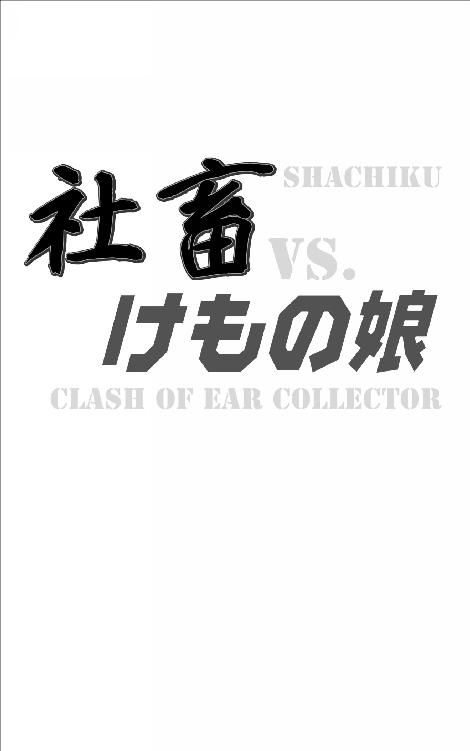

| 社畜 vs.けもの娘: ～イヤーコレクター編～ (ＫＪ文庫) | |
| 仁科十蔵 | |
| (2018) | |
社畜 ＶＳ．けもの娘
仁科十蔵
この小説はフィクションです。
実在の人物・団体などとは一切関係ありません。
目次
おとなフレンズ ..................... 田尻聡（三〇歳・派遣社員）
ブラック企業調査センター ...... 安倍武司（二十九歳・海上自衛隊三等海佐）
ムラ社会 .............................. 永良部海蛇（年齢不詳・ケモノ娘）
ケモノ食堂 ........................... 松本薫（四十一歳・飲食店経営）
獣ムスメ死ニニ行ク ............... 土井勝俊（二十二歳・大手広告代理店正社員）
イヤーコレクター .................. 米光涼子（二十九歳・警察庁職員）
ニンゲン酒場 ........................ 田尻聡（三〇歳・派遣社員）
ゆりかもめの四十八人 ............ 米光克典（三十四歳・明朝新聞文化部）
ケモノ国 .............................. 田尻聡（三〇歳・派遣社員）
山道から横へ、絶壁の間、樹木と枯れツタでできたトンネルのような路をまがりくねってしばらく歩くと、こつ然として、実に不思議な天地が開けた。
社畜たちは、思わず息をのんで立ちすくんだ。
四方から雪崩のごとく下る山の底、すりばちのような盆地である。
が。
その盆地に炎々と燃えあがるような何百もの外灯。
それに照らされ火花のように踊る無数のケモノ娘たち。
空には万国旗と五色のテープがひらめき、高い、まるい、月明の夜空にあがる哄笑と歌声と楽器の音色。
月明かりのもと、果実酒の香りと、ケモノ娘の熱気で、この天地はまるで南米のカーニバルのように弾けている。
「なっ、なんだこの騒ぎは......」
小久保晴子が、あえいだ。
イヌ、ネコ、ネズミどころではない。ライオンやキリンやゾウのケモノ娘も跳ねまわっている。絶滅危惧種ではないかと思われる見たことのないケモノの娘さえ踊っている。歌っている。笑っている。
「ケモノ国......これが一年に一度限りのケモノ国......」
彼女たちは、しばし呆然としてその場に立ちつくしてしまった。
――この物語は、社畜たちがケモノ娘と出会い、ケモノ娘にまつわる騒動に巻きこまれながらもケモノ娘とともに解決しようとする物語。それぞれがケモノ国に至るまでの過程がまとめられた連作短編集である。――

コールダックという小型のアヒルほど、その生まれにおいて、かわいそうな動物はいないと思う。
もともとアヒルは、野生のマガモを飼いならして家きん化したものである。ヨーロッパや中国などで飼育がはじまり、飼育が容易なこともあって世界中に広まった。そして飼育されていくうちに体が大きく重くなり、翼が小さくなって飛べなくなったのである。
生後五ヶ月から六ヶ月で卵を産むようになり、年間で一五〇から二〇〇も産む。
そんなアヒルを、カモ猟のオトリとして作りかえたのがコールダックである。
コールダックは、なきアヒルともいう。
体長は三〇センチと小さく、野生に放っても生きられない。人間の都合に合わせて作りかえられ、人間のもとを離れては生きられなくなった。しかもコールダックは、現代において、それほど人間に必要とされてはいないのだ。作りかえられたコールダックこそ、いい面の皮である――そんなことを考えながら出社をした俺は、肝をつぶさんばかりに驚いた。
自分の机に、ちょこんと、アヒルのパーカーを着た女の子が座っていたからである。
女の子は俺を見ると、ぴしっと愛らしく敬礼をして、
「おはよー！ わたしコールダックのコールちゃんだよー!!」
と、口角を上げた、いわゆるアヒルぐちでそう言った。
桜の花も美しく咲きそろった時候。
山手線のさびれた駅を下りたところにある財団法人の自社ビルにて。
始業二〇分前のことであった。
※
「おはよー!!」
女の子は、念を押すようにもう一度言った。
「おっ、おはようございます」
俺は戸惑いながらも挨拶をした。それからあたりを見まわした。
二〇席ほどあるオフィスで、もうほとんどの人が出社している。
この財団法人は年寄りばかりだから、みな朝が早い。しかし、しきりに目をあわせないようにして、この女の子に関わらないようにしている。
もちろん俺とも目をあわせない。
「おはよー！ ここは、あなたの机ぇー!?」
「うっ、うん」
「勝手に座ってごめんねー！ あなたお名前は!?」
「田尻聡です。派遣社員です」
「タジリサトシと、ハケンシャイン。どっちがお名前？」
「たっ、田尻です」
「へえー、田尻ちゃんっていうんだね。わたし、コールちゃん！」
女の子は、ぴょこんと跳びはねてそう言った。
声がでかい。
しかも顔を思いっきり近づけて、俺の顔をのぞきこんでいる。
女児のように汚れを知らないキラキラとした瞳である。
俺はその純真さに思わずあごを引いた。
こんな視線にさらされたのは何年ぶりのことだろう。
女の子は、相変わらず無垢な笑みで俺を見つめている。
「ねえねえ、田尻ちゃん！ 歳はいくつ!?」
「三〇歳です」
「へえー！ たくさん生きているんだね!!」
女の子は、本当に嬉しそうに両手を胸の前で合わせた。
童顔で、目がパッチリとしていて、まるでアイドルのような小顔である。
背が低くて、幼児のように線が細い。しかし胸はふっくらとしていて下半身も肉付きがよい。小柄だが幼児体型というわけではない。
まるで漫画やアニメのキャラクターである。
しかも子供向けのコメディのように、目まぐるしくよく動く。
――あれ？
彼女のパーカーの襟もとから、ちらりとうなじが見えた。
そのか細いうなじから背中にかけて、うっすらと白い羽毛が生えている。
「田尻ちゃん、どーしたの？」
「いやっ」
もしかしてこの子、ケモノ娘じゃないのか？
俺は眉をひそめたままで沈黙した。
「ねえねえ、田尻ちゃん！ どーしたのお？」
「ううん、なんでもないです。あのね、コールさん」
「なあに？」
「これから仕事がはじまるので、その、申し訳ないんですが、あちらの席に移ってもらえますか？」
「うん、分かった！ そのかわり田尻ちゃん!!」
コールちゃんはそう言って、俺に立つよううながした。
俺が立つと、彼女は上目づかいで俺を見て、それからこう言った。
「わたしのこと、これからは『コールちゃん』って呼んで？」
「こっ、コールちゃん!?」
「そう！ それに話しかたはもっと、ふつーに。もうお友だちだからねっ!!」
コールちゃんは、ニッコリ笑ってそう言った。
オフィスの至るところから、笑いをこらえる気配がする。
ハッとして顔を上げると、社員のみんなは、さっと目をそらした。
うつむいて懸命に笑いをこらえている。
まあ、その気持ちはよく分かる。
誰だって巻きこまれたくはないだろう。
俺だってそうだ。
「ねえ、コールちゃん。あっちの席に行こうか」
「うん！」
俺はコールちゃんを来客用のソファーまで連れていった。
そこに彼女を座らせると、俺は自分の机に戻った。
「じゃあ、ここでおとなしくしているんだよ？」
「うん、分かった！」
コールちゃんは、疑いを知らぬ子供の笑みで、いつまでも手をふっていた。――
※
九時になった。
始業の時間である。
俺は今日の仕事を確認すると、さっそく作業に取りかかった。
この財団法人は、総務省の管轄で、おもに国家試験の参考書と過去問題集を作っている。
俺は制作部に雇われている長期契約の派遣社員で、手書きの予想問題と解答をスキャンしてデータ化している。問題と解答を直接パソコンで作ればそれですむのだが、肝心の先生方がパソコンを使いたがらないので、まだまだ俺のような仕事があるわけだ。まあ実際、数式をパソコンで記述するのはめんどくさい。
「あとはこれだけか。今日中に終わるかなあ......」
俺はそんなことをつぶやきながら、ファイルをコピーする。手もとの元原稿を確認しながら、ファイル名を変更していく。と、いつもの作業に集中していると、
「ねえ、田尻くん」
隣の席から、かすれた声で密かに呼ばれた。
非常勤の小久保さんである。もとは大手家電メーカーの技術者だったが、定年を迎えた後は、この財団法人で予想問題の誤りや不備をチェックしている。
「ねえねえ、田尻くん」
「なんでしょう？」
「あの子、キミの知り合いじゃないの？」
「あのソファーにいる子ですか？」
「そう」
「違います」
「やっぱり。ということは、誰の知り合いでもないんだねえ」
「はあ」
あの子の素性は謎なのか。
というより、なぜここに来たのだろう。
「会長か専務理事のお孫さんかもしれないねえ」
「ああ、なるほど」
「ふたりともまだ出社してないからね」
小久保さんはそう言って時計を見た。
俺は大きくうなずいた。
この財団法人の会長は、関係省庁を早期退職した人たちが二年ずつ持ちまわりでやっている。だから業務に口をはさまない。週に二日ほど、午後になって顔を出すだけだ。専務理事は常勤ではあるが、やはりお昼くらいにやってくる。
「みんなそうじゃないかって言っているよ」
「はあ」
「これはめんどうなことになりそうだね。きっと押しつけられるよ」
小久保さんはそう言って、父性に満ちたため息をついた。
そして、引き出しから小包を取り出すと、それを俺に持たせてこう言った。
「この荷物をね、急ぎじゃないんだけど、郵便局に持っていってくれるかな？」
「はあ、はい」
「もし、めんどうなことに巻きこまれそうになったら、それを理由に逃げるといいよ」
「ああ、そういうことですか」
「そうそう。僕に怒られるから急がないと――みたいなことを言ってさ、上手く逃げるんだ」
「あっ、ありがとうございます」
俺はそう言って、いきおいよく頭を下げた。
すると小久保さんは、人差し指を口にあてて、静かにね、とやさしく言った。
そして机に向かうと、予想問題のグラフに赤ペンで修正を入れはじめた。
俺はそっとお礼を言って、もとの作業に戻るのだった。――
※
それからしばらくの後。
グラフのトレース作業に集中していると、後ろから、
「田尻くん、ちょっといいかな？」
と、よく響く低い声で言われた。
振り向くと、制作部の部長が立っていた。
あわてて立ち上がると、部長は来客用のソファーを見ながら言った。
「ちょっとあそこで話そうか」
「はい」
俺は部長とともにソファーに向かった。
すると、やはりというか、もちろんというか。
そこではコールちゃんが飛びっきりの笑顔で待っていた。
興味津々って瞳をして、部長と俺を見ている。
ただし、部長に何か言われたらしく、おとなしく見ているだけである。
と、そんなコールちゃんの横に部長は座ると、俺がソファーに座るのを待って、いきなり言った。
「とりあえず今日一日、この子の世話を頼まれてはくれないか？」
「はい？」
「なあ、田尻くん。うちの財団法人に正社員登用されたいだろう？」
「それは、はい」
「僕たちだって、キミには社員になってほしいんだよ」
「......ありがとうございます」
「この子は、おそらく会長か専務理事のお孫さんだよ？」
「そうみたいですね」
「今日、キミが会長や専務理事に恩を売ってくれれば、僕たちだって強く進言できるんだ。だから頼むよ、田尻くん」
「..................」
今まで何度も、それとなくそれっぽいことは言われたけれど、しかし、今日はずいぶんとハッキリ言われたものである。
俺は部長の目をまっすぐに見た。
部長はゆっくりうなずいた。
「わかりました」
俺は、コールちゃんのお守りを引き受けた。と、かっこつけてはみたものの、部長の『頼み』を断ることなどできはしない。そこらへん、社員も派遣も変わらないのである。
「じゃあよろしく頼んだよ」
部長はそう言って立ち上がると、ほっと安堵のため息をついた。
それから小走りで自分の席に戻っていった。
俺はそれをあわてて引き留めた。
コールちゃんがケモノ娘かもしれないという――致命的な疑念を思い出したからである。
「あの部長！」
「なんだね？」
「実はあの子、もしかしたら、そのっ」
「キミに全部まかせるよ。いい感じによろしく頼むよ」
「いやっ」
「いつもの作業は、今日はしなくていいからね。その子の機嫌を損ねないでね」
部長は早口でそう言って、逃げるようにオフィスから出ていった。
忙しい忙しいと、わざとらしくつぶやいている。
俺が口をぽっかりと開けてそんな部長を見送っていると、そのそでを引っぱる者があった。
「ねえ、田尻ちゃん？」
「うん？」
見下ろすと、そこには口角をあげて軽くくちびるをとがらせた......いわゆるアヒルぐちのコールちゃん。俺がツバを呑みこむようにうなずくと、彼女は、ぎゅっと俺の腕にしがみついて、まるで太陽のような笑みをした。
※ ※ ※
「ねえねえ、田尻ちゃん！」
「どうしたの？」
「今日は、ずっと一緒!?」
「え？ うん、まあ」
「やったー!!」
コールちゃんは、俺の腕にしがみついたまま、かるく跳ねて喜んだ。
華奢なのに、ぷるんとやわらかい。
それに体温がとても高い。
俺はスーツのジャケットを着ているし、コールちゃんも長袖だけど、それでも彼女のあたたかさが伝わってくる。
「コールちゃん、もしかして熱があるの？」
「ううん。そんなことないよ」
「でも結構熱いよ？」
「だって、わたしコールダックだもん。平熱が四〇度なんだよ」
「あっ、ああ、そうそうコールダックなんだよね」
そういう設定だったよね。
というか、この子はやはりケモノ娘なのか。
俺は彼女に笑顔でうなずきながらも考えた。
もしコールちゃんがケモノ娘......第三の人類だとしたら早めに報告したほうがいい。会長の孫でも専務理事の孫でもないからだ。
「ねえ、コールちゃんって、ほんとにコールダックなの？」
「うん、そうだよ！」
「......ひょっとケモノ娘なの？」
「ケモノ娘だよ！」
きっぱりと、コールちゃんは言った。
俺は、その大きな声にあわてふためいた。
背伸びをして、来客用のパーテーション越しに、おそるおそるオフィスを覗きみた。
みんな粛々と仕事をしている。
コールちゃんの声は聞こえたはずなのに、まったく動揺していない。
「ああそうか」
そんなオフィスの様子を見て、俺はようやく理解した。
――コールちゃんは、ケモノ娘ごっこをしている。
彼女が本物のケモノ娘なのか、ケモノ娘ごっこをしているだけなのかはさておき、とにかくみんなはそういう理解をしている。そしてこの件になるべく関わらないようにしているのである。
そもそもの話をすると、営利企業ではない財団法人という組織では、組織の発展に大きく貢献するようなそんな仕事はなかなかない。発展や拡大を目的とした組織ではないからだ。
だからみんなマイナス評価を恐れている。些細なミスでしか評価に差がつかないから、決められた仕事を丁寧にやるだけなのである。
と。
そんな財団法人に勤めるみんなにとって、コールちゃんは爆弾だったのだ。
下手に彼女の機嫌を損なえば、人事考課に大きく響く。
かといって、上手くあやしても報奨金が出るわけでもない。
「なるほどね」
俺は派遣で給与体系が別だから、お守り役にうってつけなわけである。
「しかしなあ」
俺はコールちゃんを見ながら考える。
彼女がケモノ娘なのか、ケモノ娘ごっこをしているだけなのかは分からない。
コールダックの擬人化だから判別が難しい。
ネコ耳やしっぽといった分かりやすいアイコンがないからだ。
「まいったなあ......」
俺は困り顔で、コールちゃんを見た。
すると彼女はニッコリ笑った。
俺はその無垢な笑顔に癒された。
そして持ち前のいい加減さをここでフルに発揮した。
「まあいっか」
コールちゃんの正体を棚上げにして、部長から指示されたことをただ盲目的にこなすことにしたのである。以前はこういう判断をすることは決してなかったのだが、俺の心はいつの間にか、この財団法人の都合に合わせて作りかえられていた。......。
※
さて、それからのコールちゃんは、結論から先に言うと、まあひどかった。
オフィスをかけまわり、いろんなことに興味を示し、それをいちいち大声で言うのである。
「へえ！ ホッチキスでカチッてすると紙がくっつくんだね、えろーい！」
なにがエロいのか分からないが、とにかく感心すると「えろーい！」と叫ぶ。
とても活発でよく動きまわり、そしてよく叫ぶ。
「へえ！ コピー機に紙を入れると、紙が増えるんだね、えろーい！」
「ちょっとコールちゃんっ」
「へえ！ こっちの人たちがご本を作って、こっちの人たちが売るんだね、えろーい！」
「コールちゃん、もっと静かにっ」
「机がふたつのグループになっていて、奥の席だけ豪華な椅子になってるね、えろーい！」
コールちゃんは、無邪気な笑顔で叫び続ける。
みんなは、それにただ愛嬌のいい笑顔でうなずくだけである。
初めのころは、困り顔で聞き流していただけだったのだが、聞いているうちになんでもないことまで段々とエロく感じてきた。
「へえ！ 豪華な椅子の人は、髪が少ないんだね、えろーい！」
コールちゃんは、奔放に叫び続ける。
「あー！ あの人、お尻をさわってるよ、えろーい！」
そのうちシャレにならないことまで叫びだす。
「ねえ田尻ちゃん見てえ？ あの人、お尻をなでなでしてるう！」
「こらっ」
「だってほんとだよう。ほらっ、ねえ、あそこの偉い人」
「いやっ、あれは良いんだ。というか、もっと小さな声でしゃべろうよ」
「うん！ でもどうして良いの？」
「うーん、俺は制作部の派遣だし、あの人たちは販売部。自分の部じゃないことはよく分からないし、よく分からないことには口を出しちゃいけないんだよ」
「ふうん？ そうなんだ」
「そう」
と言ったけれど、ちくりと胸が痛んだ。
そんな純真な目で見ないでほしい。
「じゃあ、田尻ちゃん。偉い人はお尻をなでなでしていいんだね？」
「そっ、そうとも限らないけれど」
「じゃあ、髪が薄い人は髪が長い人のお尻をなでなでしていいの？」
「いやっ、ちょっとコールちゃん」
「なあに？ 田尻ちゃん」
「ソファーのところに行こう」
「うん、でもどうしてえ？」
俺はコールちゃんの手を引き、そそくさと来客用のソファーに連れていった。
ここは個室ではないけれど、パーテーションで区切られているから、立ち話をするよりまだ話す内容が分かりにくい。
「あのね、コールちゃん」
「なあに？」
「いろんなことに興味を持つことは、とてもいいことなんだけど、でも、みんな一生懸命お仕事をしているから、もうちょっと静かにしよう」
「うん！」
「しいっ、もうちょっと小さな声で」
「ぅん」
「それとね、コールちゃん」
「なあに？」
「『えろーい！』っていうのは止めようよ。みんなが気まずい思いをするからね」
「どうしてえ？ なんで気まずいの？」
「うーん」
「ねえねえ？」
「会社では、エッチな話をしてはダメなんだ」
「エッチって？」
コールちゃんは、無垢な上目づかいで俺を見た。
ぴょこんと俺の隣に座って、ぎゅっと俺の腕にしがみつく。
相変わらずやわらかくて、あたたかい。
それに好いにおいもする。
コールちゃんは小柄だけど、こういうところは女児というより女である。
というより、エロい身体である。
俺はゴクリとツバを呑みこんだ。
すると俺の顔を間近でじっと見ていたコールちゃんは、
「あー」
俺の考えを読みとった。
そして言った。
「エッチって生殖活動のことかあ！」
「こらっ、もっと小さな声で」
「うん、ごめんね。でも生殖活動のことでしょう？」
「......まあ、そうだよ」
「そういう話をしてはダメなの？」
「大きな声ではね」
「じゃあ、小さい声なら大丈夫？」
「みんなの邪魔になることがダメなんだ」
「ふうん」
コールちゃんは、身を乗り出して俺の顔を覗きこんだ。
全体重を乗せてきて、くちびるがふれそうなほど顔が近い。
そしていろいろやわらかい。
俺が懸命に理性を失わないようにしていると、コールちゃんは照れくさそうにささやいた。
「コールダックは生後六ヶ月から繁殖が可能だよ」
普段とはまるで違う、歯痛を我慢するような笑顔だった。
「発情期は早春から秋にかけて。最近はあたたかいから大丈夫」
「大丈夫って......」
「田尻ちゃんがしたいなら頑張ってみる」
「こらっ」
「初めてだけど」
「..................」
「田尻ちゃんは嫌？」
俺をソファーに押し倒したコールちゃんは、別の女性を見るように、凄まじいほどのなまめかしさであった。
「だっ、ダメだよコールちゃん」
「そんなふうには見えないよう！」
「だからダメだって」
「うりゃー!! りゃりゃりゃみゃ――!!」
コールちゃんは夢中でしがみついてきた。この瞬間は誘惑のつもりはちっともなかったと思うのだけど、次第にオトコとオンナの関係に、そんな雰囲気となりゆきになった。しかもコールちゃんは、ケモノ娘だからなのか、素早くて力強くて、普段運動をまったくしていない三〇歳の男（俺）には、とても太刀打ちできるような相手ではなかった。
「ダメだよコールちゃん」
「もう止められないよう」
そしてしばらくの後――。
コールちゃんは、ぎゅーって俺の背中に抱きついて、そのままじっと動かなくなった。もちろん俺もコールちゃんも着衣のままである。小柄なコールちゃんが俺の背中に両手両足で抱きついた状態だ。
俺がコールちゃんを背負っている――そう言い換えてもいい。
やがてコールちゃんは跳ね起きた。
「ふう！ 楽しかったね！」
「えっ？ 今のが？」
「分かんないけど、これが生殖活動でしょう？」
コールちゃんはキラキラの笑顔でそう言った。
あれだけ艶っぽかったのに、もう子供のように笑っている。
で。
俺は少し考えた後、笑顔でうなずいた。
違うと言ったら、この後どんなことをされるか分かったものではない。
ここはパーテーションで区切られているとはいえ、オフィスのなかだ。
会話の詳細な内容は分からないが、どんな状況かは伝わるのである。
「あれー？ コウノトリさんが赤ちゃんを運んでこないよー？」
コールちゃんが、ぴょんぴょん跳びはねながら言う。
その無邪気な様子に、オフィスは安堵の空気につつまれた。
俺も誤解されずにすんだと、ほっとした。
コールちゃんは、そんな俺のところに来ると、そっと何かを俺に持たせた。
「赤ちゃんは来なかったけど、これあげる」
「この卵のようなものは？」
「仲良しの印だよっ」
そう言ってコールちゃんは、俺の胸に飛びこんだ。
※ ※ ※
その後、俺たちはオフィスを追い出された。
もちろん、みんなは俺たちに悪気がないのは分かっている。
それに俺たちも、彼らに悪意がないことは分かっている。
だけど現実問題として、コールちゃんは騒々しいのである。電話の応対に追われる販売部も、発売が迫っている制作部も、今は仕事に集中したいのだ。
「じゃあ、いろんなところを見てまわろうか」
「うん！」
俺はコールちゃんを連れて、自社ビルのなかをさまよった。
いろんなフロアに顔を出して、迷惑をかける前に次の部署、次のフロアに移動した。それをコールちゃんは喜んだ。
屈託のない笑顔でさまざまなものに興味を示し、その都度、驚き楽しんでいた。
これはもう小学生の社会科見学といっていい。
とはいえ、無邪気な笑顔で、社交辞令や暗黙の了解にするどくツッコミを入れるのには冷や汗をかいた。
「ねえねえ、田尻ちゃん！ さっきの人、なんでご飯に行く約束をしたのに日にちを決めないの？」
「いやそれはっ」
「うん？」
「うーん、後で決めるんだよ......きっと」
「今、決めちゃえば簡単なのに。わたしが聞いてきてあげようか？」
「やめてっ。やめてコールちゃん！」
「なんでえ？」
悪気がないだけに余計にタチが悪い。
いや、タチが悪いのはこんなおかしな慣習をそのままにしている会社のほうで、それは分かっているのだけれど、しかし、みんながとりあえず納得していることを無垢な笑顔でいちいち根底からひっくり返されては、仕事が立ちゆかないのである。
「ごめんね、コールちゃん」
「なにが？」
「上手く説明できなくて」
「ううん」
「そういうルールなんだとしか言えないんだよ」
「田尻ちゃんは、わたしのために一生懸命してくれるんだね」
コールちゃんは背伸びをして俺の頭をなでた。
俺が頭をなで返すと、コールちゃんはくすぐったそうに笑って腰をくねらせた。その拍子に背中にふれると、ひゃっと言って背筋を伸ばした。
それから照れくさそうな怒っているような、恥ずかしそうなよく分からない笑みをこぼした。そして言った。
「背中はダメえ。こっちをさわってえ」
コールちゃんは胸を張って、パーカーをめくりあげた。
俺があわてて服を下ろして肌を隠させると、コールちゃんはぷっくらと可愛らしくほっぺたをふくらませた。それでも俺が無言でたしなめると、コールちゃんはぼそりと言った。
「田尻ちゃんは仲良しだからさわってもいいの」
「......それはすごく嬉しいけれど、会社ではダメだよ」
「どうしてえ？」
「我慢してたほうが、その分、あとで楽しくなるでしょう？」
「なるほどー！ だから会社では我慢するんだね！」
コールちゃんは、俺のテキトーな理屈にとりあえず納得してくれた。
俺はそんなニコニコ笑顔のコールちゃんを連れて、総務部のフロアを後にした。
総務部の奥には大会議室があるだけだ。そして上の階には、会長の部屋と専務理事の部屋しかない。
だから俺は階段を下りて、地階の倉庫に向かおうとしたのだけれども。
「おや？ キミはたしか制作部の派遣の......」
下から専務理事がやってきた。
専務理事は、階段の途中で立ち止まったまま、俺の顔と俺の腕にしがみついているコールちゃんを交互に見ている。思いっきり眉をひそめて、不快感をあらわにしている。
「おはようございます。制作部で作業をさせて頂いております、派遣の田尻です」
「ふむ。で、その子は？」
「あっ、専務理事のお孫さんではなかったんですね」
「当たり前だ」
「でしたら会長のお孫さんかもしれません」
「会長の？」
専務理事は露骨に嫌な顔をした。
コールちゃんは、そんな専務理事におびえている。
俺はぎこちない笑みで立ちつくしている。
「会長の孫が会社にいるのか？」
「いえっ、会長のお孫さんかどうかはまだ」
「キミたちは、私か会長の孫のどちらかだと思っていたんだろう？」
「はい」
「だったら会長の孫じゃないか」
かるくツバを吐くような声である。
ちなみに、専務理事と会長は仲が悪い。
立場的には会長のほうが上だし、上意下達の徹底したこの財団法人では、下の者が刃向かうことなどとてもできないのだけれども、それでも会長が二年間の任期でいなくなるというシステムが、専務理事の反抗的な態度を許している。
もちろん社員も社員で、会長よりも専務理事に味方をしたほうが長期的な目で見てお得なことを分かっている。だから専務理事をとがめたりはしないのだ。
「で、その会長の孫と、キミは遊んでいるのか？」
「いえ、そういうわけではありませんが」
「どういうわけだ」
「それはそのっ」
「女の子と遊んでいるだけで時給がもらえるなんて、良いご身分だな」
「......専務理事のお孫さんに失礼があってはいけないと、部長に」
「言われたのか」
そう言って専務理事は、じろりとコールちゃんを見た。
それから耳をおおいたくなるほど、不快な、コールちゃんに対する悪罵がはじまった。それは若い女性全般に向けての差別的な発言だった。むずかしくいえば、己の経験をふまえた上での性の奔放さに対する警告であり、ひらたくいえば、見苦しい老人の嫉妬であった。
「だいたいなんだね、その格好は......」
専務理事の小言は、論理が破綻していて到底理解できるものではなく、また、理解しなくてもいいものだったが、しかし、その悪意に満ちた蔑みの感情だけは、言っていることが意味不明なだけに、強烈に伝わってきた。
俺はこみあげてくる怒りをおさえるのに苦労した。
コールちゃんはその大きな瞳いっぱいに涙をためていた。
専務理事の嘲りはいつまでも続いた。
コールちゃんがかわいそうだった。
見ていられなかった。
守ってあげなければと思った。
相手は専務理事で、到底、逆らえる相手ではなかったけれど。
下手をすると職を失うことになるのだけれど。
それでもコールちゃんを守りたいと俺は思った。
強く思った。
だから俺は覚悟を決めて、小言に割りこんだ。
「すみません、専務理事。お忙しいところお時間を割いていただいているのに、こんなことを言うのは心苦しいのですがっ」
「......なんだね？」
「実は非常勤の小久保先生から、郵便局に行くよう頼まれているのです」
「ほう、小久保先生から」
「お昼の集荷に間に合わせるよう、きつく言われているのです」
「バカ者、そういうことは早く言いたまえ」
「申し訳ございません。後学のためにと、ついお話に聞き入ってしまいました」
と、かすかに皮肉をこめて言ってみる。
「ふんっ、いいから早く行きたまえ。まだ間に合うんだろうね？」
「はい。郵便局に行ったら、そのままお昼休みをとってもよろしいですか？」
「......かまわんよ」
「ありがとうございます！」
俺は元気よく頭を下げた。
そしてそのいきおいのまま階段を下りて、コールちゃんとともに専務理事から逃れた。
専務理事は、まるでガムでも踏んだような顔をして、俺たちを見下ろしていた。
俺はそんな専務理事を見上げると、階下から朗らかな声でこう言った。
「さきほどのお話の続きは、ぜひ！ お手すきの時にでもお聞かせください!!」
するとコールちゃんが即座に、
「ええー!? わたしはイヤだよ――!!」
と、それは見事なツッコミをキメた。
俺は、くっと笑いをこらえて、専務理事から顔が見えないようにうつむき、そそくさとフロントロビーに向かった。そしてビルを出ると、俺は腹をかかえて笑いころげた。コールちゃんも逃れることができて、ほんとうに嬉しそうだ。
「田尻ちゃんは、わたしを助けてくれたんだね！」
コールちゃんは、飛びっきりの笑顔でそう言った。
「俺はコールちゃんの味方だよ」
心のうちをありのままに言葉にした。
すると、
「ありがとっ」
と言ってコールちゃんはジャンプした。
そうやって彼女は、俺のほっぺたにキスをするのであった。――
※ ※ ※
その後。
俺はコールちゃんと一緒にお昼ご飯を食べた。
それから春のあたたかな陽気を楽しんだ後、オフィスに戻った。
するとそこは閑散としていて、小久保さんがただひとり待っていた。
「ああ、田尻くん。みんな大会議室に行っているよ」
「全員ですか？」
「僕もキミも来いってさ。あとその子も」
「コールちゃんも!?」
「うん。会長さんがね、全員集まったら話すって」
小久保さんはそう言って立ち上がった。
俺とコールちゃんは、小久保さんとともに大会議室に向かった。
大会議室に入ると、そこには財団法人のすべての人が集まっていた。
総勢三十六名、奥には会長と専務理事が並んで座っている。
俺たちが席に着くと、会長は微笑んだ。
そして言った。
「ああ、キミがコールちゃんのめんどうを見てくれたんですね」
すると専務理事が、
「やはり会長が連れてきたのですか」
と、すかさず言って、ムスッとした顔で会長を見た。
会長は専務理事のほうに体を向けてこう言った。
「あの子は、埼玉の鉄塔で発見されたケモノ娘だよ」
「ケモノ娘を会社に連れてきたのですか」
「鉄塔の管理者から連絡が総務省にあったんだけど、総務省のほうも持て余してね、まあいろいろとあって、『ケモノ娘は好意を寄せた者に、幸運の卵を授ける』というから、国家試験の対策マスコットにピッタリじゃないかと、そういう話になって、うちで引き取ることにしたんだよ」
「勝手に決められたのですか」
「まあ、だから今集まってもらっているんだけどね」
会長は、ゆとりのあるオトナの笑顔でそう言った。
専務理事がため息混じりに言う。
「ひとりで決められては困ります。会長とはいえ、理事会を開いてその決定に従っていただかないと」
「うん、それは分かっているよ」
「ですから」
「だからこの子は、ここのマスコットではないんだよ」
「はあ？」
「今度、国家試験の過去問を販売する公益財団法人を創ることになったんだ。コールちゃんは、そこのマスコット」
「過去問って!? 過去問は、うちで出しているじゃないですか!?」
「うん。だから過去問の販売だけを切り離して、別の公益財団法人を創るんだ。ここの財団法人では参考書も作っているから、公益認定は無理だから」
「ということは」
「過去問の販売を切り離したら、ここの公益性はなくなるね。もしかしたら非営利型の一般財団法人としても認められないかもしれない」
「そんなあ」
大会議室が騒然となった。
これは事実上の倒産宣告、いや財団法人解散の宣告である。
なぜなら利益率の高い過去問題集の専売権を取り上げられて、そのうえ、高い法人税まで払わされることになれば、とても人件費をまかなえないからだ。
「会長ォ......」
専務理事は情けない声をあげた。
会長はそれを無視して、小久保さんに話しかけた。
「小久保先生、新しい財団法人に来ていただけませんか？」
「......お誘いありがとうございます。ただ、私は一度定年退職しておりますし、そろそろ休みたいと思っておりましたので」
「まだまだお若いじゃありませんか」
「ありがとうございます。ですが、私よりも田尻くんのほうがよっぽど優秀です。彼を誘ってやってはもらえませんか？」
「ああ、田尻さんですね」
会長はそう言って俺を見た。
それから鼻をかくと、困り顔でこう言った。
「あなたは、制作部に来ていただいている田尻さんですね？」
「はい」
「失礼ですが、派遣期間はあとどれくらい残っていますか？」
「更新したばかりですから、およそ六ヶ月です」
「ううむ、やはり長いですね。ちょっと無理なお願いをしたいのですが」
「はい」
「契約内容を途中で変更することは可能ですか？」
「それは派遣元に聞いてみないと分かりません」
「でしたら確認してほしいのですが――。田尻さんの契約を打ち切り、別の方に仕事を引き継いでもらいたいのです」
「それはっ」
いわゆる派遣切りというヤツではないか。
「ああ違います違います」
「はい？」
「田尻さんには、新しい財団法人に来てほしいのです」
「それは、派遣先を変更しろということですか？」
「いえ、正社員としてお願いしたいのです」
会長は、おだやかな笑みでそう言った。
大会議室は再びどよめいた。
俺が口をあんぐり開けたままでいると、会長は父性に満ちた笑みでこう言った。
「新しい財団法人には、実は小久保先生のほかに、あとひとり、コールちゃんが気に入った人を誘うつもりだったんですよ」
「だから早朝のオフィスにコールちゃんが？」
「届けるよう手配しました。試すようなことをしてごめんなさい」
会長は俺たちに微笑んだ。
俺とコールちゃんは喜んだ。
そして大会議室には、残された社員たちの悲痛な叫び声がふきあがるのだった。
東京の市ヶ谷に、ブラック企業調査センター・新宿支部はある。
もとは二〇二〇年東京オリンピックのテロ対策を目的とした組織である。
当初は、防衛省のヒモ付きの公益法人として創設される予定であったが、与野党間の意見調整や思惑等々いろいろあって、特定非営利活動法人（ＮＰＯ法人）となった。さらには、テロ対策ユニットが都内に配置されることへの反発も考慮して、『ブラック企業調査センター』を名乗ることになったのだ。
だから職員は、私をふくめ、防衛省直下の自衛隊員がほとんどである。
ちなみにこの表向きの活動は、意外にも好評を博している。
民間が立ち上げた労働基準監督署のような組織で、本家よりもよっぽど頼りになるとの評判だ。ブラック企業の調査の合間に、テロ対策をしているような状況である。
それは、事務仕事に慣れていない軍隊上がりが、相談者に親身になりすぎているからだ――と、イヤミを言われることはよくあるけれど、本当のところは分からない。
さて。
そんなブラック企業調査センターに、今日も相談者がやってきた。
私は彼をソファーに座らせるとこう言った。
「はじめまして。ブラック企業調査センター・新宿支部で支部長をしております、安部武司と申します」
「あっ、須藤です」
「今日は、どのような用件でいらしたのですか？」
「はい、あの、ブラック企業に勤めておりました」
春のあたたかな日だというのに、その男は死人のような蒼い顔をしていた。
年齢は二〇代後半。私と同年代だからよく分かるのだが、彼は明らかに老けこんでいた。ブラック企業に身も心もぼろぼろにされたに違いない。
私はゆっくりと事情を聞いていく。
「なんという会社ですか？」
「株式会社エクスプレディオです」
「なにをやっている会社なんですか？」
「主に地方紙やチラシを制作しています」
「デザインの会社ですか？」
「いえ、取材や写真撮影、記事の執筆からデザインまで全部やります。高校の新聞部が会社になったと思えば分かりやすいです」
「ああなるほど。それで企業に依頼されて、地方紙やチラシを制作されているのですね？」
「営業部が仕事をとってくるのです」
「須藤さんは、その株式会社エクスプレディオで働いていた。ええっと、辞められました？」
「辞めました」
「辞めた会社のブラック企業体質を告発するんですね？」
「......はい」
「素晴らしいことです」
私がおだやかな笑みでうなずくと、須藤氏は笑った。
それからすぐに照れくさそうに目をそらした。
私は彼に飲み物をすすめ、質問を続けた。
「それで須藤さんは、どのようなところがブラック企業だと思うのですか？」
「......あの会社の従業員はおよそ五〇名。先ほど言った通り、地方紙やチラシを制作しています。が、実際に制作する人間は現在三名......いえ、私が辞めたので今は二人です」
「チラシや地方紙を二人で作っているのですか？」
「はい。五〇人分の給料を二人で稼いでいる計算です」
「大変でしょうね」
「私がいた頃は三人で制作していましたから、今ほどではないですけれど、それでも残業三〇〇時間の世界でした」
「三〇〇時間!? 毎日終電まで残業して、さらに土日も出勤ですか」
「会社に泊まっていました。残業代が出ないのに、なぜか誇らしげでしたね」
彼は自嘲気味に笑ってそう言った。
※
私がどんな顔をしていいのか迷っていると、彼は続けてこう言った。
「もともとは制作部にも人はたくさんいたのです。ですが、社長がものすごくワンマンなので」
「何でも自分でやりたがるんですね？」
「締め切りの前日に突然思いつくんです。それを紙面に反映させようとするんですよ」
「直前で作り直すんですね？」
「もちろん一人では作れません。制作部が徹夜で付き合うことになります」
「なるほど」
「しかも制作物はひとつだけではありませんから、それがほぼ毎日続くのです」
「それで残業三〇〇時間ですか」
「制作部は激務です。だから制作だけが辞めていくんです」
「そして制作する人間よりも、営業や総務といった人間のほうが多くなった」
「いびつな会社になったのです」
「......人員の補充はしないのですか？」
「制作部は、常に中途採用や派遣の補充をしています。求人情報サイトには、いつも掲載されています。が、補充が辞めるスピードに追いつかないのです」
「それほどの激務だと、ついていける人はそうそういないでしょうね」
「悪評も広まっていますから、近頃は応募自体も少ないのです」
「そうなんですね」
「業界では有名です。しかも、最近は業績が悪化しているせいなのか、社長のセクハラやパワハラがエスカレートしています。なおさら人が定着しないのです」
「セクハラもやるんですか？」
「社長は、制作部と一緒に会社に泊まっていますので」
「はあ」
「いつまでも高校の新聞部のノリなんですよ。社長はただ好きなことに熱中しているだけ。お給料を払って、ほかの人間をそれに付き合わせているんです」
「無自覚のブラック経営者ですね」
「経営者としての仕事は、なにもやってませんよ。だから給料未払いや倒産のウワサも出始めました」
「それで辞めたんですね？」
「目が覚めたんですよ」
須藤氏は、苦笑いで言った。
私は、彼に心から同情をすると、おだやかな笑みでこう言った。
「分かりました。さっそく調査に向かいます」
「ありがとうございます」
「証拠が集まり次第、しかるべき申告と処罰を求めますから、ご安心ください」
「はい」
と言って須藤氏は、私をうかがうような目で見た。
私がうなずくと、彼はおそるおそる言った。
「調査って、どうやってするんですか？」
「須藤さんが今日来たことは、分からないようにしますからご安心ください。求人に応募します」
「求人に？ 制作部に応募されるんですか？」
「当センターの職員を、派遣社員として送りこもうと思います」
「なるほど......」
「常に求人広告を出しているとのことですから、大丈夫かと思いますが？」
私が彼をまっすぐに見てそう言うと、須藤氏は大きくうなずいた。
どうやら作戦を聞いて、心にゆとりができたようだ。
彼はニコヤカに言った。
「実はですね、あの会社の人事部長はケモノ娘なんです」
「ケモノ娘ですか」
「ケモノ娘です。御社の職員にもいます？」
「......当センターにもケモノ娘はいますよ。このような仕事をしていると、保護することがありますので」
「そうだったんですね。というのも、あの会社はケモノ娘の採用率が高いんですよ。最近は求人情報にもわざわざ書いてあるとか......いや、確認していませんが」
「情報提供ありがとうございます。上の者と相談し検討させていただきます。ところで須藤さん」
「はい？」
「人事部長のケモノ娘さんですが、参考までに、ベースはどの動物ですか？」
「キツネです」
「キツネ......」
私は思わずつぶやいて、あわてて感情を押し殺した。
須藤氏に表情を読みとられないよう、顔を背けてさりげなく立ち上がった。
それから笑顔で彼をねぎらうと、玄関まで見送った。
彼は来たときとは、まるで別人を見るように、さっぱりとした笑顔で帰っていった。――
※ ※ ※
それから数日の後。
私は、ひとりのケモノ娘とともに、株式会社エクスプレディオに向かっていた。
株式会社エクスプレディオは高田馬場にある。
その向かう車のなかで、私は助手席のケモノ娘に話しかけた。
「タヌ子、起きているか？」
「なんやの、タケたん？」
「......ふたつ注意しておくぞ。ひとつは、私のことを『タケたん』と呼ぶな」
「ええやん」
「ダメだ」
「じゃあ、うちのこと『タヌ子』って呼ぶのやめて？」
「キミは、タヌキのケモノ娘だからタヌ子。そう決めただろう」
「もっと可愛いのがいい」
と、タヌ子は甘えて言った。
私はそれを笑殺した。
なにしろ可愛い名前にして欲しいと言って、三ヶ月もごねている。
この娘は、どんな名前を提案しても納得しない。自分でも決められない。だからといって、いつまでも決めずにいると業務に支障が出るので、とりあえず『タヌ子』としたのであった。
「それとタヌ子、あともうひとつの注意だが」
「なんねえ？」
「そのインチキくさい関西弁は止めろ」
「ええやん」
「キミは北関東の出身だろう。無理して関西弁を使うことはない」
「そんなこと言ったって、うちはタヌキのケモノ娘やん？ しゃべりかたに特徴つけないと、ほかのケモノ娘たちに埋もれてしまうやん」
「没個性は決して悪いことではない。そもそも個性とは、消そうとしても自然と出てしまうものだ」
「でも、イヌ科のケモノ娘は、いっぱいいるやん。見た目だけじゃあ、タヌキって分からないんよ？」
タヌキは、イヌ科・イヌ亜科・アカギツネクレードのタヌキ属。
アカギツネクレードには、タヌキ属のほかに、キツネ属とオオミミギツネ属がある。
「イヌ科の動物は、イヌとオオカミ、それにキツネにタヌキなんよ？ イヌ科の上のネコ目まで含めれば、似たような動物がいっぱいいるん。ケモノ娘になったら、もう見分けがつかんのよ」
「しかしその関西弁はどうかと思う」
「しっぽと耳なんて、どれも同じなんよ」
「そうかな？」
と言って、ちらりと彼女の腰を見たら、
「エッチぃ」
とスケベな目をして、ぺちんと腕を叩かれた。
「..................」
どうにも主導権を彼女に握られている。
しかし、このなれなれしさはタヌキ属の特徴であり、社会性の高さはイヌ科のケモノ娘のかけがえのない財産であった。
実際、イヌ科のケモノ娘は、人間社会に溶けこんでおり、会社で働く者も多い。
※
「で、タヌ子。今日の作戦だが――これからキミは派遣社員となり、株式会社エクスプレディオの潜入捜査をおこなう」
「うちが派遣社員、タケたんが派遣元の担当者」
「タケたんと呼ぶな」
「じゃあ武司さん」
「安倍さんと呼びなさい」
「そんな他人行儀なあ」
「派遣社員と派遣元の担当者だから当然だ」
「ふうん？」
「キミは制作部で派遣社員として働き、違法な労働の証拠を集めるのだ」
「社長がセクハラするんでしょう？ うち、セクハラ奴隷派遣として潜入捜査をするんやね」
「......セクハラをされる前に、脱出するから問題ない」
「武司さん、うちのこと守ってくれるンよね？」
「その呼びかたとインチキ関西弁を直せばね」
と意地悪な笑みでそう言うと、タヌ子は、可愛らしくぷっくらとほほをふくらませた。私がそれを無視して運転に集中すると、タヌ子は、べっちゃりとしたオンナのやわらかさで私の腕にしがみついた。それから耳もとに息をふきかけるようにささやいた。
「ねえ、安倍さん？ これから行く会社の人事部長ってケモノ娘なんでしょう？」
「ああ」
「キツネなんでしょう？」
「ああ、だからタヌキのキミを連れてきた」
「仲が悪いから？ それともキツネのほうが色っぽいし美人だし賢いし、いろいろとタヌキより優れているから？ キツネ娘が優越感にひたれるからあ？」
「そんな言いかたはよさないか、いつものキミらしくないぞ」
「ごめんなさい」
「とにかく人事部長との面接のときはだな」
「派遣の採用面接は違法やの。『顔合わせ』と言うんよ？」
「......うむ。とにかく人事部長との顔合わせは、ひたすら真面目にしていてくれればそれでいい。タヌキのキミは、今回の作戦にピッタリだ」
「臆病なところも？」
「それが特にいい」
きっぱりと私は言った。
タヌ子はしばらく黙っていたが、やがて私の腕にほっぺたをこすりつけると、甘えた声でこう言った。
「ふうん？ ずいぶんと自信満々のようやけど？」
「そのインチキ関西弁は止めなさい」
「......今回もテロ対策用とかいう秘密兵器を使うつもり？」
「許可は取ってある」
「じゃあ今回も荒事？」
「......ブラック企業と虐げられる者、テロ組織とその実行者、このふたつは単純には切り離せない。問題は複雑にからみあい、社会に根ざしているのだ」
「ケモノ娘も？」
「彼女たちの社会的な立場はまだまだ低い。だから巻きこまれることが多い。それがこれらの問題をいっそう陰惨にしているのだ」
「そっか」
「私たちの仕事は、それらの解消だ」
「そのための荒事？」
「必要なこともある」
「ふうん。でも安倍さんは秘密兵器があるからいいけれど、うちはなんだか心細いなあ」
「キミにも秘密の指示書を渡してあるだろう」
「ピンチになったら開くやつ？」
「そう」
「今どき紙の」
「紙だからいい。私の読みが正しければ、すぐに開くことになる」
「うち、その社長とかいう人にセクハラされるん？」
「それは大丈夫」
「ふうん？ でも、うちは心配よう。......安倍さんが」
「私が？」
思わず彼女の顔を見ると、タヌ子はスケベな笑みで言った。
「だって、安倍さんって女性苦手でしょう。聞けば男子高校、防衛大学校、自衛隊とずっと男所帯で暮らしてきているし、女の子とお話するときも、いつもドキドキしちゃって、かわいいし」
「そっ、それは......」
ズバリ言い当てられた私は、しばし言葉を失った。
「人事部長のキツネ娘に骨抜きにされないか、うちは心配なんよう」
タヌ子は、ひどくイタズラな笑みでそう言った。――
※ ※ ※
株式会社エクスプレディオに着いた。
エクスプレディオは雑居ビルの四階にあり、四階はすべてこの会社のものとなっている。エレベーターを出てすぐのところに、社名の入ったプレートがある。そしてその手前にはインターフォンと内線表があった。
私は、受話器を取って人事部にかけた。
「本日十四時にお約束しております、派遣会社の安倍です」
しばらくすると、扉が開いて、なかからスーツの男があらわれた。
「安倍さんと、そちらは派遣のかたですか？」
「はい」
「では、あちらの打ち合わせ室にどうぞ」
「扉とは逆方向のようですが？」
「ええ、社外の人との打ち合わせは、こちらでするのです。扉の向こう側には、クライアントさまからいただいたデータ等々ございますので」
「さすがＩＴ関連の会社は、セキュリティ意識がしっかりしてますね」
「ありがとうございます」
男はそう言って、私たちを打ち合わせ室に誘導した。
四階はエレベーターから出て左側に、打ち合わせ用の個室が三つと簡易休憩室がある。右側はすぐに扉でさえぎられている。なかの様子は見えないが、五〇人ほどが働けるだけのオフィスがあるのだろう。
「では、人事部長が来るまですこしお待ちください」
そう言って、男は個室から出ていった。
私とタヌ子は、そこにしばらく待っていた。
やがて金髪のものすごい美女が書類を小わきに抱えてやってきた。
「はじめまして、あなたたちが派遣さんね」
美女は席に着くと、口もとだけで笑ってそう言った。
美しい。......と、私は心中に舌をまいた。圧倒されて声も出ず、ただ無言でうなずいた。
タヌ子もツバを呑みこむだけだった。
金髪の美女が言う。
「わたしは、人事部長の殺生石タマモよ。おふたりは弊社の制作部に応募されていらしたのよね？」
「いっ、いえ、私は彼女の担当者です。御社に派遣するのは彼女だけです」
「あら残念。あなたにも来てほしいわあ」
「はあ」
「だってこんなにい男だなんて。ねえ、あなた。こんなにカッコイイ人が担当だったら毎日楽しいでしょう？」
「はいっ」
タヌ子は、とてもいい笑顔でうなずいた。
私があわてて小突くと、タヌ子は真顔になって背筋を伸ばした。
そんな私たちを、人事部長は笑顔で見て言った。
「しかし『タヌ子』さんだなんて、ずいぶんテキトーな名前よね」
「すみません」
「あなたが謝ることないわあ。わたしだって『殺生石タマモ』という、ずいぶんひどい名前をつけられたのよ」
「......ステキなお名前だと思いますよ」
「ありがとう。実は、ひそかに気に入ってるの」
「よくお似合いです」
「よく言われるわあ」
「ですよね」
「いかにも男好きしそうなところが、玉藻御前にそっくりだって」
彼女はそう言って冷然と笑った。
それは、まるで氷の花だった。
氷のような誇りと、花のような妖艶さと――こんな女は生まれて初めて見たと、私とタヌ子はうっとりした。そう。女性のタヌ子までうっとりしている。
※
「それで制作部の仕事なのだけど......」
タマモは、微笑みを浮かべて、仕事の内容を説明した。
だけどそれからの私とタヌ子は、まるで夢幻の中にただよっているようなものであった。茫として、ただ彼女を見ているだけで、話がまったく頭に入らない。こうなることは、人事部長がキツネのケモノ娘だと聞いたときから分かっていたのだけれども、それでも彼女の美しさは私の予想をはるかに上まわるものだった。
しばらくすると、私とタヌ子は、彼女に導かれるまま打ち合わせ室を出た。
エレベーターの前を通って、扉のところまで来た。
タマモがＩＤカードを扉にかざす。
――ガコン！
扉が開く。
私たちは株式会社エクスプレディオのなかに入った。
「こちらが人事部のデスク、そしてこちらが総務と営業部よ」
彼女が手を差しだした先では、誰もが微笑みを浮かべていた。
とても奴隷労働を強いられているようには見えない。
そういえば須藤氏は、制作部が激務だとは言っていたが、他の部署のことは何も言っていなかった。
株式会社エクスプレディオは、五〇人分の給料を制作部の二人だけで稼ぐ体勢になっていると、須藤氏は言っていた。そのことだけが問題であるならば、他の部署はおそらく激務になりはしない。
営業部には厳しいノルマはないだろう。たくさん仕事を取ってきても制作部がさばききれないからだ。人事部長のタマモも涼しい顔をしている。
案外、ほかの部署の人間には、居心地のいい会社なのかもしれない。
「こちらがサーバールームよ」
タマモはそう言って、奥の小部屋を指さした。
なかにはたくさんのパソコンがあり、三人の男性がディスプレイの前にいた。ここは他の部署に比べてやや陰気くさいが、それでも会社に寝泊まりしているようには見えなかった。というより、三人はタマモの顔を見て、さっとスマホを隠していたから、結構サボれる職場なのかもしれない。
「そしてここが制作部だわあ」
タマモは、一番奥にある扉の前でそう言った。
扉は会社の入口と同じもので、ＩＤカードをかざすようになっている。
そして外からは、なかの様子が分からなくなっている。
ただし、この扉の向こう側がとても広いことだけは、ビルのサイズから容易に推測できた。一〇人は楽に作業ができる広さだろう。
「こちらが仕事場ですね？」
このときになって私は、ようやく質問をした。
夢遊病のような状態から、立ち直ったのである。
タマモはそんな私の目をじっと見た。
それからトレーを差しだしこう言った。
「ここから先は、ケータイやスマホ、カメラや録音機械は預からせてもらうわよ」
「はあ、セキュリティの問題ですか？」
「弊社はチラシも制作しているの。セールの価格がもれたら賠償金を払わされちゃうわ」
「たしかに。では、お渡しします」
「扉のすぐ先にゲートがあるのよ。金属探知機になっているので、派手な音を鳴らさないでね」
この言葉に私は、みぶるいするような快美をおぼえた。
彼女がいきなり、ジットリと私の手をにぎって、ぬれた息で耳もとにささやいたからである。
「さあ、安倍さんもタヌ子さんも」
「ええ」「うん」
私たちは、タマモにスマホなどの電子機器をすべて渡した。
彼女はＩＤカードをかざして扉を開いた。
入ってすぐのところに、空港でよく見かけるような鉄の輪がある。
あれがおそらく金属探知機になっている。
私とタヌ子はそこを潜って、いよいよ制作部に入った。
そして。
私とタヌ子が閑散とした作業デスクの前で立ちつくしていると、
――ガコン！
派手な音をたてて入口の扉が閉じた。
それから私たちのすぐ後ろで、ガラガラとシャッターが下りた。
シャッターは、まるで牢獄にある鉄の柵のようだった。
※
「どういうことですか？」
私はシャッター越しにタマモを問い詰めた。
するとタマモは、にたあっと笑った。
「あなたたちを監禁するのよ」
「監禁？」
「理解力のないヤツは嫌いだよ。後ろをよく見なさいよ」
これが、あの艶っぽいタマモの声だろうか――と、私はしばらく自分の耳をうたがった。それくらい野卑な声だった。
私とタヌ子が立ちつくしていると、タマモはあごをしゃくった。
振り返って目をこらすと、部屋の隅には、たくさんのケモノ娘がおびえて縮こまっていた。
「これはっ!?」
「まだ分からないのかい？」
「あの娘たちを監禁しているのか」
「ケモノ娘には身寄りがない。たとえ監禁しても訴える者がいないのよ。だいたい監禁の事実にさえ、誰も気づかないじゃないか」
「それを分かったうえで、この会社はケモノ娘を集めているのか」
「コストパフォーマンスの優れた労働力だもの」
「キミもケモノ娘だろう！ 心は痛まないのか!!」
私は叩きつけるように言った。
するとタマモは、
「はっ、ははは」
あははははと、突然狂ったように笑った。ものすごく無感動に笑った。なんの心もなく笑うだけ笑った。笑い狂っていた。そして私のことをにらんで、
「だってイヌ科のケモノは従順だもの」
と言う。
それは、彼女がイヌ科のキツネで社長に従順だ――と、そういう意味で言ったのかといえばそうではない。
その証拠にタマモはすっと目を細めて、
「社長ならそこに倒れているわよ」
と部屋の片隅を見ながら言ったのだ。
おそるおそる振り返ると、ワイシャツ姿の中年男が床に突っ伏していた。
「どういうことや！」
タヌ子が跳びはねるように言った。
するとタマモはうんざりとした顔で、ため息混じりにこう言った。
「首謀者は私、社長はあやつり人形。万が一のときは、彼が逮捕されるのよ」
「......イヌ科が従順って、あんたもイヌ科じゃないんね！」
「ふう、そこから説明しなきゃいけないの？」
「なんやの！」
「捕らえた連中は、みんなイヌ科のケモノ娘なの。とても従順でよく働いてくれるのよ」
「そういうことなん！」
「だから初めからそう言っているじゃない」
「分かりにくいんよ！」
「ふふふ、あなたもイヌ科のタヌキでしょ？」
「それがどうしたん！」
「すぐに奴隷労働にも慣れるわよ」
そう言ってタマモは、タヌ子をあざ笑った。
その挑発にタヌ子は、まんまと引っかかった。
「むきゃー！」
タマモに跳びかかったのだ。が、シャッターに阻まれて彼女にはさわることさえできなかった。タマモは、そんなタヌ子を軽蔑の目で見ると、ぞっとするほど低い声で言った。
「おバカなタヌキね」
そしてタマモはシャッター越しに、タヌ子にスタンガンを押しあてるのだった。
「んっうぅううんんんっ!!」
タヌ子は、泡を噴いてぶっ倒れた。
「タヌ子！」
私はあわてて彼女のもとに駆け寄り、それからタマモをにらみつけた。
タマモは全能感に満ちた笑みで私を見下ろした。
そしてその後ろには、
「やあ安倍さん、お久しぶりです」
「キミはっ、須藤くん!?」
なんとこの会社を告発したあの須藤氏が立っていた。
タマモが優越感に満ちて言う。
「あなたを誘いだすよう、彼に頼んだのよ」
「......我々の正体を知りながら、監禁しようというのか」
「わたしたちがやっていることは、いずれブラック企業調査センターに伝わるわ。だったら先に潰しておいたほうが安心できるでしょう？」
「こんなことをして、ただで済むと思うなよ」
「あら恐い」
彼女は笑うだけ笑って、制作室を出ていくのであった。――
※ ※ ※
およそ一時間が過ぎた。
社長は床に突っ伏したまま動かない。
気絶をしているか、薬で眠らされているのだろう。
ケモノ娘たちは、部屋の隅に固まったまま、私を見ておびえている。
ただし、持ち前の社会性と好奇心の高さを発揮して、おそるおそるではあるが、タヌ子の様子をうかがいにきた。
「毛布をかけてやってくれ」
私がそう言うと、ケモノ娘たちはテキパキと動いた。
タヌ子に毛布をかけて、泡を噴いた口をぬぐい、白目をむいた顔を調えて、花まで供えてくれた。
「ごめん、そこまではしなくていいよ」
と私が言うと、彼女たちは、パッと離れて再び部屋の隅で固まった。
そして、そこからタヌ子に手をあわせてくれた。
やはり素直で純真なケモノ娘たちである。
この会社、いや、タマモはそんな彼女たちのやさしさにつけこんだのである。
「我々の仕事はブラック企業の調査だが、しかし、調査だけではすまないな」
私は大きく息を吐いて、それから立ち上がった。
スーツのボトムをめくり、非金属でできた自動小銃を手に取った。
それをスーツの内ポケットにしまい、今度は靴のカカトを開いた。
なかにあるパーツを集めて、私は精密機械を組み立てた。
「さてと」
私はシャッターをつかむと、乱暴にそれをゆさぶった。
そうやってタマモを呼んだ。
すぐにタマモはやってきた。
彼女は、私の乱れた髪を見て愉悦に身もだえた。
私は、シャッターをつかんだみじめな姿でこう言った。
「お手洗いに行かせてくれ」
「ほっ」
「まさかこの部屋でしろと？」
「おしっこをさせてくださいと、お願いしなさい」
「..................」
「あぁん、その目、たまらないわあ」
タマモは恍惚の笑みで、シャッターを上げた。
スタンガンを私に向けて、入口まで来いと言った。
私は両手をあげて、おとなしく彼女に従った。
お手洗いは制作部を出てさらに奥、ビルの最奥部の壁に面している。
私は背中にスタンガンを押しあてられて、そこに向かった。
そして男性用の扉を開いたところで、思いっきり後ろから突き飛ばされた。
――バン！
振り返ると同時に扉が閉まる。
そして全身全霊をあびせるように、タマモが私の胸に飛びこんできた。
「なっ!?」
彼女は私を壁に押しつける。
それから両腕を、私の首にからみつかせてこう言った。
「ふたりきりになりたかったんでしょう？」
タマモの果実酒のような吐息が、私の顔に吹きかかる。
くちびるがふれそうなほど近い。
脂ののった彼女の太ももが、私の腰に白蛇のようにからみつく。
ぐいぐいと押しつけられるその体はあつく火照っている。
吐息ともあえぎともつかない声を、タマモはもらす。
私の脳ずいをもしびれさせる。
「まっ、待て」
「ヤセ我慢はしなくていいのよ」
「違う。私はお手洗いに来たのだ」
「男と女が会社のトイレですることは決まっているでしょう？」
「違う。そういう意味ではないっ」
「ほほほ、まさか本当にもよおしているの？ マニアックね」
「だから違うのだっ」
とあえぐように言ったら、タマモは、すっと私から離れた。
それから、くやしそうで嬉しそうな、よく分からない笑みを浮かべて、上目づかいで私を見た。私がコホンと咳払いをすると、彼女は乱れた服を調えた。そして言った。
「はやく済ませなさい」
「外で待ってくれるとありがたい」
「終わったら続きをやるわよ」
「......光栄だね」
「あなただけは、特別にわたしの奴隷にしてあげる」
タマモは、にたあっと笑って出ていった。
私はさっそく個室に入った。鉄格子のついた窓から外を確認すると、ガムをかみ、それを壁の四隅にくっつけた。
それから個室を出ると、先ほど組み立てた精密機器のボタンを押した。
――ボフッ！
個室のドアが風圧で跳ね開く。
トイレに煙が立ちこめる。
私は悠然と個室に向かい、そこにぽっかりと空いた穴から飛びおりた。
四階程度の高さなら、自衛隊の降下訓練で何度も飛びおりている。
私は着地と同時に前転をして、そのいきおいのまま路地を駆け抜けた。途中、停めてあるバイクを拝借し、それに乗って市ヶ谷に向かった。
もちろんタマモは追いかけてきた。
須藤を運転手にして、黒塗りのセダンに乗っている。
私は人混みをさけ、早稲田の細い路地をひたすら走った。学生でにぎわう場所をさけ、大久保や神楽坂の繁華街をさけて、ひたすら市ヶ谷に向かう。
そしてようやく人通りのない夏目坂まで来ると、私はバイクを滑らせ、タマモの車を見ながら停車した。
「終わりだ」
私は精密機器をタマモの車に向けて、ボタンを押した。
そのことで車のすべての機能が停止した。
車は制御を失い、止まることはもちろんハンドルを動かすことさえできず、ガードレールに突っ込んだ。そして炎を噴きあげた。
タマモと須藤は、死にもの狂いでドアをかきむしった。
しかし、車は不幸なことにドアの開閉すらコンピュータ制御である。
電磁パルスで無力化されている。
「警察を呼ぶか、葬儀屋を呼ぶか、迷うところだな......」
私はそんな無責任なことをつぶやくと、彼らを蒸し焼きにしたまま市ヶ谷に戻るのだった。――
※
私はブラック企業調査センターに戻って、調査報告書を書いていた。
しばらくするとタマモがものすごい形相でやってきた。
服は焼け焦げてボロボロとなっているが、しかし彼女の肌には汚れひとつない。
私は座ったまま、無表情で無感情に言った。
「やはり生きていたな」
「須藤は死んだよ」
タマモは吐き捨てるように言った。
「復讐でもしに来たのか？」
「わたしをコケにしたのが許せない。屈服させないとおさまらないわ」
タマモはそう言って、自動小銃を私に向けた。
あの銃は、お手洗いで私とからみあったときに、私から奪った物である。
私は感情を押し殺して低い声で言う。
「抜け目のない女狐だ。やはりただのケモノ娘ではないな？」
「一〇〇〇年は生きているからね」
「妖狐か。初めて見る」
「これから飽きるほど見ることになる」
「はあ」
「まず右腕を撃つ。次に左腕を撃つ。右足、左足と撃って自由を奪う。そうやって私の奴隷にする。死ぬまで奴隷として飼ってやる」
「その引き金は引かないほうがいい。これは忠告だ」
「忠告ゥ？ ハッタリじゃないの？」
「いや、忠告だよ」
私はため息混じりにそう言った。
するとタマモは逆上した。狂ったように笑い、そして引き金を引いた。
その瞬間。
「んっはぅううんんんっ!!」
タマモは稲妻に打たれたように仰け反り、泡を噴いてぶっ倒れた。
自動小銃のＤＮＡ認証が彼女を拒絶したのである。
「ぐぅ」
タマモは床をかきむしり、私をにらみつけた。
ものすごい怒りの歯ぎしりで、口から血を噴きだしている。
私はそんな彼女を無表情で見下ろして、
「タヌ子のお返しだ」
と低い声で短く言った。
そして懸命に立ち上がろうとするタマモを押さえつけ、後ろ手に関節をきめた。
私は彼女を捕縛した。
タマモが乱れた金髪の向こうから鋭く私をにらみつけている。
私が身だしなみを調えていると、彼女は言った。
「これほどの力があるなら、どうして初めから使わないのよ」
「キミは催眠術のような不思議な術を使う。誘い出したかった」
「誘い出すゥ？」
「仕事の邪魔だったからね」
「......はっ!? まさかあのタヌキ!!」
「タヌキは、ひどく臆病な動物だ。危機におびえると仮死状態になる」
「タヌキ寝入りねっ」
「タヌ子は今頃、ケモノ娘たちを解放しているよ」
私はそう言ってデスクの電話に視線を移した。
タマモがくやしそうに言う。
「あなたも、ずいぶんと不思議な術を使うのね。ただの人間じゃないでしょ」
「いや、これはただのハイテク兵器だよ」
「ウソよ。そんな機械ありえないわ」
「ふふっ。インターネットの開発がスタートしたのは一九六〇年代。黒電話の時代で、冷蔵庫・洗濯機・テレビが普及した頃だ。そんなインターネットは、一九九〇年代にようやく民生化された」
「なにが言いたいのよ」
「私の装備をキミが理解するのは、おそらく三〇年後だろうね」
私は無感情にそう言って、タヌ子に電話をかけるのだった。――
※ ※ ※
数日が経った。
私は株式会社エクスプレディオの報告をすませ、すっかり落ち着いていた。
保護したケモノ娘の引き受け先がすべて決まったことが、安堵の一番の理由である。
昼食後のことだった。
私がいつものようにソファーでのんびりしていると、
「タケたん、会いたかったンよう！」
と言って、タヌ子が私の胸に飛びこんできた。
そうやって私をソファーに押し倒すと、彼女はタヌキのケモノ娘だというのに、まるでイヌのように私の顔をぺろぺろと舐めはじめた。両手両足で抱きついて、全身で愛情を表現している。
私は苦笑いで彼女の口撃をかわした。
その拍子に見えた彼女のしっぽは、喜びでぶんぶんと振れていた。
「止めないか」
と言うと、
「いやあ」
と、タヌ子は甘ったるい声で言った。
私が女性のことを苦手だと思っての舐めた態度である。
だから私は、彼女のお尻を思いっきりわしづかみにしてやった。それからスケベなオヤジの手つきで彼女をまさぐった。
「ええっ!?」
タヌ子は腰をくねらせ身を引いた。そしておびえた目で私を見た。
どうだ、まいったか。
私だって、やろうと思えばできるのだ。
と。
そのときだった。
「こほん！」
わざとらしい咳がして、それと同時に私は頭をつかまれた。
そして強引に膝まくらにされた。
タマモの膝だった。
「別にイチャイチャしてもかまわないけど、無視されるのは腹立たしいわあ」
彼女は、くやしそうな顔でそう言った。
私がその手をそっと握ると、タマモは、ぷいっと顔を背けた。
しかし、ぶんぶんと激しくしっぽを振っている。
タヌ子はそれをちらりと見てから、スケベな笑みでこう言った。
「タマモは、新宿支部の預かりになれて嬉しいんねえ」
「そっ、そんなことないわよ」
「ふうん？ だったら余計なことしたかなあ？ タマモはすぐに男をたらしこむから、刑務所に入れたらむしろ危険やって、安倍武司のほかには彼女の飼い主になれる人はなかなかいないやろって、うち、報告書に書いちゃったん」
「余計なことよ。それになによ飼い主って」
「だったら訂正しようかなあ？」
「やっ、止めなさいよっ」
「ふうん？」
タヌ子は上体を起こすと、ぐっと身を寄せてタマモの顔を覗きこんだ。
タマモは挑むようにタヌ子をまっすぐに見た。
そして沈黙の後。
ふたりは仲良くケンカをしはじめた。
あれほど争ったというのに、もうすっかり打ち解けている。
こういうサッパリとしたところは、やはりイヌ科である。
私は起き上がると、困り顔でネクタイを締め直した。
それからわざと苦々しげな口調でこう言った。
「西遊記の孫悟空は、幾度となく三蔵法師に頭をしめつけられたというが――。キツネがサルよりも賢いことを、私は期待しているよ」
永良部海蛇（えらぶ・うみへび）。
奇妙だが、これが私の姓名だ。
エラブウミヘビは、コブラ科エラブウミヘビ属に分類されるウミヘビで、有毒の特定動物だけれども、しかし人に危害を与えることはほとんどない。
生息地は沖縄周辺である。ただし、近年では四国や本州の南岸でも生息が確認されている。海流に乗って日本海沿岸で捕獲された個体もある。
別種ではあるが、セグロウミヘビのなかには暖流に乗って北海道まで到達したものもある。生息域は年々北上しているのである。
が。
言うまでもないことだけど、別に北に行ったヤツほど偉いというわけではない。
だから私はムキになって北を目指すことも、意地になって暖流にもまれ続けることもなく、伊豆半島の寂れた海岸で手を打った。
そこの灯台を住み処としたのである。
ちなみにコブラ科のウミヘビは、海で獲物を捕り、陸で休む。繁殖も陸だ。
意外にも陸上で暮らすことが多いのである。
そんなエラブウミヘビの私がケモノ娘になったのは、住み処としている灯台が無人化されて、そこに暮らす灯台守がいなくなったときだった。
私は寂れた村の灯台で、ケモノ娘としてひとり暮らすことになった。
村の名は、潮木村という。
村にはコンビニがなく、駅がなく、かといって大きな港があるわけでもない。
もちろん人間も少ない。村の青年団で一番若い団員は、三〇代の医師である。三〇代は一般には『若い未熟者』ではないと思うのだけれども、しかし、その医師は「小僧、小僧」と呼ばれ、年長者たちからいつも雑用を言い渡されていた。
ちなみに村に病院はひとつしかない。
しかも医師は彼ひとり。
専門は外科のようだけど、出産からメンタルケアまで全部ひとりでやっている。
それで村人から尊敬を集めているかといえば、そういうわけでもない。
ああ悲しいかな人間のムラ社会。
彼は、よそ者であり、新参者であり、若造であった。それは彼がどんなに村に貢献しようと、かけがえのない存在であろうと変わりはない。
彼の名は、高坂圭輔。
小柄で負けず嫌いなところが、まさに小僧って感じ。
私の最近のブームは、灯台からこっそり高坂さんを観察することだった。――
※
「おい小僧！ 死体があがったぞ！」
警察署長が高坂さんの病院に来て、そんな物騒なことを言った。
七月の海開きが終わった頃、それも早朝のことだった。
高坂さんが眠たそうに目をこすると、警察署長はイライラして言った。
「浜に死体があがったんだよ。検死に来い」
「浜に？ というか、検死ってなんですか？」
「うるせえ、法的な呼称はどうでもいいんだよ。心不全で処理できねえし、なんだか嫌な予感がする。とにかく視に来い」
「......外傷がひどいのですね？」
「異様だよ」
警察署長は、まるでガムでも踏んだような顔だった。
高坂さんはあわてて上着をはおると、ふたりは海岸に向かった。
浜の一画は、ロープで封鎖されている。
そこに巡査が立って、人が立ち入らないようにしている。
ちなみに巡査といっても、高坂さんよりも年上である。
「ごくろう」
警察署長はそう言ってロープをくぐった。
高坂さんもかるく目礼をしてその後に続く。
そしてむごたらしい死体の前にひざまづく。
「右足がないですね」
「そんなことは医者じゃなくても分かる」
「噛み傷ではありません。焦げています」
「どういうことだ？」
「この人は、泳いでいるときに右足を吹き飛ばされた。この焦げ痕はそのときついたものです」
「海のなかで火傷したってことか？」
「水中では、すばやく動くと気泡が生じます。あまりにも素早い場合は、一瞬で沸騰状態になります」
「それで火傷か」
「おそらく」
「船のスクリュー......いや、武器か？ こいつは武器で殺されたのか？」
「そんな武器があるかは知りませんが、ただ、海水を一瞬で沸騰状態にするといえば、一般には」
「なんだ？」
「シャコのパンチが有名ですよね」
高坂さんはひどく真面目な顔でそう言った。
すると警察署長は、ぷっと噴きだして、それから高坂さんの後頭部を引っぱたいた。
まるでコントのようなとても気持ちのいい音がした。
警察署長が笑いながら言う。
「シャコって、あの小さな海老みたいなヤツだろ。寿司ネタの」
「ハサミはありませんが、大ざっぱにはそうですね」
「あんな小さなヤツが、人間の右足を吹っ飛ばしたというのか？」
「シャコの仕業とは言っていません。ただ、海中で焦げ痕をつけるとしたら、シャコのパンチのようなものだと思います」
「じゃあ、なんだよ」
「分かりません。ただ」
「ただ？」
「シャコが巨大化したら。そして、そんなシャコに襲われたとしたら」
こんな傷がつくと思います――と、高坂さんは警察署長をまっすぐに見て言った。
警察署長は、その真剣さにちょっとついていけないというような、そんな目で高坂さんを見た。
高坂さんはあごに手をあて、言葉を選びながら言う。
「署長さんは、ケモノ娘をご存知ですか？」
「ああ、知っとるもなにも、エラブさまが灯台に住んでおる。この村の者はみんな知っとるわ」
「ケモノ娘は、もともと動物です。ケモノとは、四つ足歩行の陸生哺乳類のことですが、ケモノ娘になるのはそれに限られてはおりません。爬虫類や鳥類もいます」
「おう。エラブさまはヘビだしな」
「きっと水棲哺乳類や魚類だって、ケモノ娘化しています」
「それじゃあ、小僧はシャコがケモノ娘化したというのか？」
「その可能性はあります」
「バカなっ。想像力豊かなのもたいがいにしろ」
「ええ、自分でもそう思います」
「だったら」
「ただ、ケモノ娘化したシャコが犯人だと、この傷の大きさは説明がつくのです」
「ああン？」
警察署長は、あごをしゃくるような声をあげた。
すると高坂さんは、彼の目を見てゆっくりうなずいた。
それからこう言った。
「ヘビやトカゲのケモノ娘、イヌやアヒルのケモノ娘、どの娘も人間の女性の大きさです」
「それがどうした」
「もとの動物より大きくなっているのです」
「それじゃあ」
「シャコだって大きくなるでしょう」
と、高坂さんは表情を動かしもせず、静かに言った。
警察署長は厚いくちびるをふるわせただけで、しばらく声もなかった。
※
その後、高坂さんと警察署長は、海岸を遊泳禁止とした。
看板を作って、堤防の階段のところに立ててまわった。
「もうそろそろ終わりますね」
「死体の発見が早朝だったからな」
「署長の決断も早かったです」
ふたりがそんなことを話していると、黒塗りの車が二台、すぐ近くに停まった。
恰幅のいい男と、袈裟を着た老人が顔を出した。
この村の村長と寺の住職である。
彼らは車から下りると、ずかずかと警察署長のところにやってきた。
「何をやっているんだ」
「浜を閉鎖しているんだよ」
「それは見れば分かる」
「今朝、死体があがったんだ。それがどうにもケモノ娘のせいなんじゃないかって」
「小僧が言ったんか？」
住職はそう言って、高坂さんをじろりと見た。
高坂さんは挑むような目をして、大きくうなずいた。
だけど村長はそんな高坂さんを一瞥するだけで、警察署長に言った。
「夏はこの村にとって一番の稼ぎどき、いや、夏休みの観光客が唯一の収入源といっていい」
「分かってる」
「もうすぐ夏休みだ。客足を遠ざけるようなことはするな」
「しかし村長」
「なあ署長。おまえさんも昔は刑事だっただろ。そのときのカンはもう鈍ったのか？」
「ああン？」
「小僧が言っていることを鵜呑みにするのか？ 刑事のカンではどうなんだ？ おまえさんも、危険なヤツが海にいて人を襲うと思うのか？」
「それはっ」
「おまえさんの経験よりも、今まで積み上げてきたものよりも、医学は優れているのか？ そこまで小僧の言うことを信じるのか？」
「そこまでは」
「では、おまえさんのカンではどうなんだ？ 船のスクリューに巻きこまれただけの、よくある海難事故ではないのか？」
村長は、警察署長をじっと見た。
「......ああ。ただ海難事故だよ」
警察署長は、おごそかにうなずいた。
高坂さんは、その顔を信じられないって顔で見た。
だけど警察署長は、
「やっぱりケモノ娘などありえんよ」
とそれだけを言って、遊泳禁止の看板を撤去するよう指示をした。
そして村長と住職とともに堤防から去っていった。
高坂さんは、呆然として立ちつくしていた。
しばらくすると村長がわざわざ戻ってきて、高坂さんの前に車を停めた。
そして言った。
「巡査から報告を聞いているがね、キミは『シャコのケモノ娘に襲われた』とかいう......バカなことを言ったそうじゃないか。まあ、想像力がたくましいのは結構なことだと思うよ。だけど、キミは作家じゃなくて医者だろう。観光客が来なくなるような風評は、今後一切立てないでくれたまえ」
高坂さんは、村長にひどく順序立てた言いかたでたしなめられた。
まるで小学生が校長先生に怒られたような風景だ。
彼は羞恥で顔が赤くなった。なんだか急にしょんぼりしてしまった。
「......すみません」
高坂さんは力なく神妙な顔でそう言った。
「分かればそれでいい」
「すみません」
高坂さんは、看板が撤去されるのを眺めながら、とぼとぼと病院に帰った。
そしていつもの仕事に戻ったのである。
が。
お昼をすぎた頃だった。
そのビーチで二人目の犠牲者が出た。
海で泳いでいた少年が、突然わき腹を吹き飛ばされたのである。
※ ※ ※
「伊藤さんとこの悠真がやられた！」
この急報に、村中は大騒動となった。
たちまち浜は封鎖され、みなが海からあがった。
しかし死体のまわりには、たくさんの野次馬があふれかえっている。
それを警察署長が堤防に追い返している。
母親が泣き崩れている。
村長と住職が渋い顔をしている。
青年団の面々が集まってくる。
そして警察署長が野次馬をすべて押しかえして、死体のところに戻ってくるのと同時に、高坂さんはやってきた。
高坂さんは母親に黙礼をし、死体に手を合わせるとシートをめくった。
損傷を確認した。
「やはり焦げ痕がありますね」
と、高坂さんはつぶやいた。
警察署長はさっと視線をそらした。
村長と住職が、余計なことを言うなよと、高坂さんをにらみつける。
そんななか、母親はすがるような目をして高坂さんを見た。
高坂さんが何か言おうとすると、それをさえぎって村長が言った。
「サメです。サメのしわざです」
「サメ!?」
「今朝も目撃情報があったのです。ただ小型のおとなしい種だったし、外洋に去ったとの話だったので......」
村長はそんなウソをヌケヌケと言った。
それだけでなく彼は、母親に向かってこうも言った。
「お母さん、悠真くんは残念なことになってしまった。だが村のことを考えて、このことは黙ってくれないか」
「..................」
母親は死人よりも蒼い顔をして家に帰っていった。
村長と住職と警察署長と、そして高坂さんは、その背中をしばらく見ていたが、やがて、
「サメって」
と、高坂さんがつぶやいた。
それからこう言った。
「これって、絶対サメじゃあないですよ」
「そんなことは、みな分かっとるわい」
住職がツバを吐くように言った。
「えっ？」
「村のためじゃ」
村長と警察署長が大きくうなずいた。
が。
そんな彼らの思惑を置き去りにして、サメのウワサは独走し一気に広まることになる。母親がＳＮＳで息子の無念を訴え、サメに懸賞金をかけて仇討ちをしてくれる人を募ったからである。――
※
翌日。
海岸は人であふれかえっていた。
海水浴をするためではない。観光客でもない。
懸賞金が目当てのハンターたちである。
村長は早朝から彼らの対応に追われた。
浜に特設テントを立てて、ことをこれ以上荒立てないよう、二次的な被害をおこさないよう、懸命に説明をしている。
もちろん村長は専門家ではないし、そもそもサメなんかいないのだから説明はしどろもどろである。それでも返答に詰まると警察署長と住職がフォローを入れて、なんとかこの場はおさまっていた。
高坂さんも説明に加わっていたけれど、彼の場合は警察署長が横にピッタリとくっついていて、余計なことを言わないように見張られていた。
そんな村長たちをテントの入口からニヤニヤ見ている男があった。
日に焼けたのか、酒に灼けているのか、あるいはその両方か、とにかく赤い顔で、年寄りだが丸太のような腕をしている。
彼は説明がひとまず終わると、いきおいよく手を上げた。
村長はそれを見て、いやあな顔をした。
男はそんな村長に笑顔で、
「はい！」
と、大きな声を張り上げた。
念を押すようにもう一度手を上げたのだ。
村長がめんどくさそうに言う。
「なんだね、源造」
「悠真がやられたのはサメの仕業だって話だが、本当か？」
「ほっ、本当だ」
「看板に書いてあったことと違うなあ」
「その看板が間違っている」
「海洋性のケモノ娘だろうって、書いてあったぜ」
源造と呼ばれた男はそう言って、ハンターたちをぐるりと見まわした。
特設テントは騒然となった。
村長たちは、あわてふためいた。
源造は、それをニヤケ顔で見ながらこう言った。
「俺ァ、いつもレジャー客を相手に釣り船を出している。マグロやカツオを釣る大型船だ。まれに海洋性のケモノ娘に遭うことがある」
「こらっ、源造！」
「海洋性のケモノ娘はヤバいぞ。あんたらのなかに倒したヤツはいるのか？」
源造がそう言うと、ハンターたちはうつむいた。
源造は得意げな顔で言う。
「五〇〇〇万出しな。俺が倒してやる」
「バッ、バカな!?」
「マグロの初競りよりも安いじゃねえか」
「ふざけるんじゃない！ それにな源造」
「あん？」
「そもそもケモノ娘ではない、これはサメの被害だよ」
きっぱりと、村長は言った。
高坂さんは口をとがらせた。だけど、住職と警察署長はうなずいた。
その堂々とした態度と眼差しを見て、ハンターたちは村長の言うことを信じた。
村長は源造をまっすぐに見て、それから子供をあやすようにこう言った。
「なあ源造、村をこれ以上混乱させないでくれよ」
「あっ、ああ」
「この村には、ケモノ娘のエラブさまがおる。それに三年前に、ケモノ娘の『ゆるキャラ』とかいうのを作ってもらったばかりじゃないか」
「おっ、おう」
「なあ、源造。そんなにケモノ娘が憎いか？」
「いやっ」
「おまえのイラストが、ゆるキャラの原案に採用されなかったのが、そんなにくやしかったのか？」
「違うっ」
「だったら、なんでもケモノ娘のせいにするんじゃない」
ここまで平然とウソをつかれては、源造も引き下がるしかなかった。
源造は呆れていいのか感心していいのかよく分からない、そんな顔をして特設テントを出ていった。そして二度とサメ退治の場には、顔を出さなかった。
しかしそんな源造と入れ違いに、ハンターはぞくぞくと集まった。
潮木村の海岸は、夏休みを前にしてサメ狩りでにぎわったのである。
「でもあれは絶対にサメじゃない」
高坂さんはそんななか、たった独りでケモノ娘の恐ろしさを訴えた。
しかし、誰も相手にしなかった。
ふたりの被害者は、明らかにサメに襲われていなかったけど、専門知識がなくともそれはひと目で分かるのだけど、それでも誰一人として潮木の近海に凶暴なケモノ娘がいることを認めようとはしなかった。
悠真くんの母親でさえ、焦げた傷痕を見たというのに、今ではサメの仕業だと信じきっている。彼女でさえそうなのだから、ほかの人間が疑うわけがない。
と。
そんな騒ぎを、私はずっと灯台から眺めていた。
冷静で理知的な判断をしているのは、高坂さん唯一人であった。
だけど村人からすれば、冷静で理知的な判断をしているのは村人のほうで、高坂さんだけがおかしな人なのだ。
これは人間によくある集団心理である。
規模の大小はあるけれど、村でちょくちょく起こる現象だ。
それがエラブウミヘビのケモノ娘である私には、理解不能であり、また面白くもある。だからこうやって村の様子を観察しているのだけれども、今回だけは面白さよりも先にもどかしさが立った。
高坂さんに肩入れをして見ていたからなおさらである。
「もう、いらいらするなあ」
私は村を見下ろしながらつぶやいた。
ちょこまかとよく動く高坂さんを見ながら考えた。
懸命な彼に愛おしさをおぼえた。
母性のようなものも感じた。
情に流された。
だから私は――。
「しかたがないわねえ」
ものすごく久しぶりに階段を下りて灯台を出た。
高坂さんに会い、この騒動に干渉するためである。
※ ※ ※
よく晴れた夏の青い空。
その空よりももっと青い海がよく見える堤防で、私は高坂さんに会った。
高坂さんは灯台から歩いてくる私に気がつくと、陽差しを手で避けながらも、かるく頭を下げた。
私は潮風に乱れる髪を懸命におさえながら微笑んだ。
堤防には、私と高坂さんのほかは誰もない。
高坂さんは堤防を南へ、私は北へと歩く。近づいていく。
私たちは、涼やかな風のなかをゆっくりと距離を縮めていく。
そして声が届くところまで近づいたところで、
びょう――と、風が吹いた。
私は髪を耳にかけて、高坂さんに流し目をおくった。
すると彼の表情がさっと変わった。
私に手を伸ばして何かを言ったようだった。
しかし風でよく聞こえない。
危ないと言ったような――気がする。
私はすこし考えた後、彼が動揺したわけを察した。
そもそも私と高坂さんは初対面である。
高坂さんは、私が『エラブさま』だと知らないし、ということは、私がウミヘビのケモノ娘ということも分からない。
だから私を見て驚いたのだ。
ヘビに取り憑かれていると思ったか。
あるいは、ヘビのような影が私に襲いかかろうとしていると思ったのか。
とにかく彼はそんな私の姿を見て、危ない――と言ったのだ。
「ふふっ、かわいい」
思わずつぶやくと、彼は怪訝な顔をした。
私は微笑みながらも歩を進める。彼に近づいてゆく。
風でひどいことになっている髪を両手でかきあげて、ポニーテールのようにやや高い位置でまとめる。結わいながら歩を進める。そして私は、私の顔が一番可愛く見えるそんな角度に顔を傾けてこう言った。
「そんなに動揺しなくても」
「はあ、しかし」
「もしかして、見るのは初めて？」
「......こんなに間近では」
「心配いりません。私はケモノ娘です」
「いえっ、そのスカートが」
「はい？」
「めくれてますよ」
そう言って高坂さんは、あわてて顔を背けた。
私は突然そんなことを言われて、ちょっと考えこんだ。
視線を落とした。
「えっ」
すると私のスカートは、風のせいで思いっきりめくれあがっていた。
白い下着がみごとに露出し、その下着よりも白いお腹と、太ももまでもが彼の目にさらされていた。
ああ、太ももなんか灯台にこもりっぱなしだから、ひどくたっぷりとしている。
「あの」
「ええ」
私と高坂さんは目と目をあわせると、同時にツバを呑みこんだ。
そして永遠にも感じる沈黙の後。
「見ちゃいやあ」
と言って、私はスカートをあわてて押さえるのであった。――
※
「あの、僕は高坂です。村で医者をやっています」
「はじめまして。私はエラブ、あの灯台に暮らすケモノ娘です」
「あなたがエラブさまですか」
「そう呼ばれています」
「初めてお目にかかります」
「最近は、そういう方のほうが増えました。あの灯台からは滅多に出ないので」
「そうなんですね」
「このあたりは沖縄に比べて寒いのです。気だるくて」
「ああ、ヘビは変温動物だから」
と言って、高坂さんはあわててくちびるを結んだ。
私はそんな高坂さんの気づかいが嬉しかった。
自然とほほがゆるんだ。
しかし、いつまでも彼との会話を楽しんでいるわけにはいかなかった。
私はいきなり核心にふれた。
「村人を襲った生き物ですが、あれはサメではありません」
「えっ？」
「村で起こっていることは、だいたいのところは知っています。高坂さんのほかは、サメだと思っているんですよね？」
「はい。僕はその、海洋性のケモノ娘の仕業だと思っています」
「私もそう思います」
「やはり......。海洋性のケモノ娘はいるんですね？」
「何度か遭遇したことはあります。それに、そもそも私はウミヘビのケモノ娘です。コブラ科で半陸生の爬虫類ですが、カテゴリー的には海洋性に属します」
「そうだったんですね」
「漁師のなかには、遭遇している人もいるはずですよ。海洋性のケモノ娘は、外洋では珍しくはありませんので」
「となると、いよいよ犯人は海洋性のケモノ娘となるわけか」
「サメよりも凶暴ですよ」
「やはり人を襲うのですか？」
「海洋性のケモノ娘は、その生涯を海で過ごします。人と接する機会がほとんどないので、ケモノ娘になっても人間社会のルールを学べません。ですから姿が変わるだけで、気性や知性はもとのままなのです」
「なるほど」
高坂さんは、腕を組んだままの姿勢で考えこんだ。
私はそんな彼に冷然と言った。
「人を襲ったケモノ娘は味をしめます。何度も襲うようになるのです」
「それじゃあ」
「いつまでも海岸に留まり続けるでしょう」
「退治するしかない」
「ええ」
私と高坂さんは目と目をあわせて、噛みしめるようにうなずいた。
そして堤防を北へと進んで特設テントに向かった。
すると――。
「おい、サメがあがったぞ！ 大瀬崎の漁師がやっつけた!!」
潮木の浜は大騒ぎだった。
私と高坂さんは急いで階段を駆け下りた。
特設テントの前には人だかりができていて、その中心には、なんと四メートルほどのサメの死がいが吊されていた。
「おい小僧！ サメだ、サメをやっつけたぞ!!」
警察署長が得意げな笑みでやってくる。
その後ろでは、村長と住職がホッと安堵のため息をついている。
悠真くんの復讐を果たしたぞと、歓声がわいている。
私と高坂さんは顔見合わせた。
私は彼に聞いた。
「被害にあった方の傷と、あのサメの歯形は一致しますか？」
「いえ」
きっぱりと、高坂さんは言った。
それから村長のところに向かった。
そして胸をぶつけるようにこう言った。
「歯形がまるで違います。このサメは違います」
「はあん？」
「ほかにいるんです。潮木の海には、危険なケモノ娘が棲みついているのです」
「なにをバカバカしい」
村長は吐き捨てるようにそう言うと、住職と警察署長と一緒に大笑いした。
サメを退治した高揚感もあって、海岸にいる人たちもみな笑った。
高坂さんの言うことを誰も信じはしなかった。
だから私は、
「彼の言う通りですよ」
と、激情をこらえていっしんに言った。
だけど聞き入れてはもらえなかった。
住職が私を拝みながら言う。
「これはこれはエラブさま、お久しぶりです。エラブさまのお言葉、未熟なわたくしめの心に深く染みいります。ですが、エラブさま。未熟な人間には未熟な人間なりの営み、理（ことわり）というものがございます。わざわざ御高説をいただきましても、わたくしめはただ恐縮するばかりで、その真意を理解できません。戸惑うばかりでございます」
言葉は丁寧であるが、ところどころ皮肉めいた響きがある。
これじゃ恐縮しているのか威張っているのかわからない。
ようするに、おまえは首を突っこむなと言っているのだ。
しかし、たしかに住職の言う通りなのである。
もとがウミヘビの私には、人間が一〇〇〇人以上もの集団を形成し、一ヶ所に集まって暮らす意味が分からない。コミュニティという概念が、感覚的に理解できないのである。そんな私に、彼らのおこないに口をはさむ資格はない。
「......分かりました」
私は彼らの説得を諦めて、この場を後にするしかなかった。
※
「エラブさん！」
と、高坂さんが追いかけてきてくれた。
ひどくやさしい瞳だった。
だけど私の気持ちを察してくれて、悲しげな表情でもあった。
高坂さんは私に追いつくと、肩で息をしながらこう言った。
「元気出してくださいね！」
彼なりの精一杯の笑みだった。
私はそんな彼のぎこちない笑顔に、愛おしさを感じた。
思わず抱きしめたくなるほどの、いや、それ以上の激しい情動がこみあげてきた。私は下腹部から胸のあたりまで熱くなった。ほほまでもが火照ってきた。これがいわゆる恋だということは、知識としては分かっていたけれど、それでも変温動物の私にとって体の内側から熱くなるというこの現象は、おそろしくもあり、また、くすぐったくもある新鮮な快美であった。
「高坂さん」
「はっ、はい」
「高坂さんっ」
私は欲情を必死におさえつけた。
はしたない女だと思われたくないという、その一心で理性を保った。
懸命に保った。
保った、つもりだったのだけれども。
しかし私の口から出たのは、
「ウミヘビの交尾は陸上です」
それは誘いともとれる、あまりにもはしたない言葉であった。
「エラブさん？」
「分からない」
私は彼に夢中でしがみついていった。この瞬間は誘惑のつもりはちっともなかったのだけど、あとは、かねてから夢みていた通りのなりゆきになった。
永遠にも感じるふたりきりの時間が過ぎたのだ――......。
そしてその晩。
私は灯台で高坂さんの胸に抱かれて、海に映った月をぼんやり眺めていた。
このままいつまでも抱かれていたかった。
そんなことを考えていると、
――ボン！
突然、地響きのような腹にこたえる音がして、海上に白い柱が噴きあげた。
「あれは!?」
私たちは跳ね起きた。
身を乗り出して海を見た。
「......漁船？」
「漁船が沈没している」
その漁船に焦げた大穴があることが分かったのは、翌朝のことだった。
※ ※ ※
翌朝。高坂さんと村長は、特設テントで相対した。
高坂さんが噛みつくように言った。
「損壊部が焦げています。ケモノ娘ですよ」
「何を言っているんだ」
「村長こそ何を言っているんです、現実を見てください」
「キミこそ現実を見たまえ」
「はあ」
「今日からいよいよ夏休みだ。たくさんの観光客が押しよせてくる」
「だから封鎖しないと」
「バカを言うんじゃない！」
村長は高坂さんを叱りつけた。
「観光客を追い返せば、この村は餓死するしかない！」
とまで言った。
それから海の家の視察に向かった。
高坂さんが追いかけようとすると、警察署長がその肩をつかんだ。
住職が立ちはだかり、高坂さんをじっと見すえた。
高坂さんは、ふたりにたしなめられて諦めた。
海の家とは逆方向、海岸を南へと歩き出したのだ。
私は彼を追いかけた。
「高坂さん？」
「村長には何を言っても無駄だ」
「......ええ」
「彼らに頼らずなんとかするしかない」
「でも」
「源造さんに頼むんだ」
高坂さんはそう言って、浜をひたすら進んだ。
しばらくすると波止場に着いた。
そこには白い釣り船が停泊していた。
そして赤ら顔のたくましい老人、源造がいた。
高坂さんは、源造を見るなりいきなり言った。
「ケモノ娘を退治してください」
「ああン？」
源造は、ふいをつかれてちょっと言葉が出なかった。
高坂さんが念を押すように言った。
「潮木の海には、ケモノ娘がいます。退治してください」
「おっ、おう」
「今日から夏休みです。一刻を争います」
「そっ、それはいいが、懸賞金は出るんだろうな？」
「......出ません、僕個人のお願いです」
「はあん？ それじゃ村長たちは？」
「ケモノ娘はいないと言っています。昨夜も漁船が破壊されたのに、まだ認めようとはしないのです」
「ふんっ。だったら帰りな」
源造はそう言って、ぷいっと顔を背けた。
高坂さんは、言葉を詰まらせた。
しかしすぐに挑むように前に出た。
源造をまっすぐに見て、それからこう言ったのだ。
「お金が必要なら僕が出します。たしか五〇〇〇万でしたよね？ 何十年かかるか分かりませんが、少しずつ払います」
すると源造は困り顔で笑った。
それから自身の白い眉毛をつまんで引き抜き、
「バカ野郎、そんなに待てねえよ」
と言った。
高坂さんが何か言おうとすると、源造は高坂さんの肩を抱いて、
「心配すんな。おまえさんには負けたよ」
と、海を見ながらつぶやいた。
そして出航の準備に取りかかるのだった。
「ありがとうございます！」
高坂さんは飛びっきりの笑顔で、いきおいよく頭を下げた。
※
出航の準備が整い、いよいよというときだった。
「源造！ 助けてくれえ！」
村長が息を切らせてやってきた。
住職と警察署長も一緒である。
三人は波止場に来るなり、源造の足にすがりついた。
源造が眉をひそめると、村長が泣き出しそうな顔で言った。
「被害者が出た。足を吹っ飛ばされたんだ」
「はあん？ いったい、いつの話をしてるんだ？」
「今だっ、さっきだよ。みんな避難したが、ヤツはまだ海にいる」
「ふんっ。だからあれほど言ったのに」
「源造！ おまえしかいないんだ！」
「懸賞金は出るのか？」
「だっ、出す！」
「ふんっ」
「すまん、源造！ もっと早くに頼んでいれば」
「......あのな。謝る相手が違うんじゃねえか？」
「え？」
「てめえらが謝るのは俺じゃねえだろ」
源造はそう言って高坂さんを見た。
その腕にしがみついている私を見た。
村長たちが視線を追った。
私たちを見た。
源造が神妙な顔で言う。
「てめえら小僧に......いや、高坂先生に土下座しな。それからエラブさまに土下座をするんだ」
「げっ、源造？」
「あのケモノ娘はとんでもなく強えぞ。なんてったって漁船を沈めるようなヤツだ」
「そっ、それはっ」
「だから俺ァ、逃げる気でいた。だけどな村長」
「はいっ」
「高坂先生に頼まれた。俺ァ、彼の熱意に負けた」
「..................」
「それに『小僧』だ、『よそ者』だと言われている高坂先生がな、この村のことに一番献身的だっていうのは、どうにも情けねえじゃねえか」
源造はそう言って、照れくさそうに鼻をこすった。
村長たちが愛想のよい笑顔で追従を言った。
すると源造は、きっと彼らをにらみつけた。
「ひいぃっ」
村長たちは、あわててその場に正座した。
地面に額をこすりつけ、高坂さんに謝った。
何度も何度も額を打ちつけるようにして謝った。私にも謝った。
高坂さんは、そんな彼らを見下ろすと、感情を押し殺してこう言った。
「僕ではなく、犠牲者とそのご家族に謝ってください」
このどちらかといえば小柄な医師が、このときほど大きく見えたことはない。
※
そして二時間後。
私と高坂さんは、ケモノ娘と対峙していた。
潮木の近海、源造の船の甲板である。
「ぴぎぃぃいいい――――!!」
ケモノ娘が甲板に足をかける。彼女の足もとは半壊し、波に浸されている。
私たちの足もとには、源造が脚を抱えてうずくまっている。
ケモノ娘の襲撃を受けた際に、激しくマストに打ちつけられたからである。
「源造さん」
「俺のことァ、どうでもいい」
源造はあえぐように言った。
その視線の先には、虹色に輝くケモノ娘。
モンハナシャコが人化したケモノ娘がいる。
ただしケモノ娘といっても巨大である。
おそらく歳を重ね、何度も脱皮を繰り返した末にケモノ娘となったのだ。
そんなモンハナシャコのケモノ娘は、ピンクのツインテールがほほにぺったりと張りついて、無感情な瞳で高坂さんを見すえている。
彼女の両腕は、時速八〇キロのパンチを繰り出せる。その衝撃は体重のおよそ一〇〇〇倍だから、ケモノ娘となり巨大化した今はさらに凶悪なものとなっている。ちなみに、プロボクサーのパンチは時速三〇キロから五〇キロである。
が。
私たちだって、無為無策で彼女に挑んだわけではない。
「高坂さん」
「ああ」
彼の手には、杭ほどもある太い注射が握られている。
そのなかには、エラブトキシン。
エラブウミヘビがもつ神経毒、すなわち私の毒である。この毒はハブのおよそ八〇倍の強さをもつ。もちろん人やケモノ娘など簡単に殺せる。
高坂さんは、そんな毒のこめられた注射を握りしめている。
「行きます！」
私はケモノ娘を見ながら言った。
高坂さんが、すっと腰を落とした。
ケモノ娘は、感情のない不思議な瞳で私を見た。
カチカチと拳を鳴らす。
私は神経を研ぎ澄ます......って、まったく。
これではまるで西部劇の早撃ち対決じゃない。
私はステキな人の見ている前で、いったい何をやっているのだろう。
そう思って苦笑いをしたその瞬間、
「ぴぎゃぁあああ――――!!」
ケモノ娘が飛びかかってきた。
それを私はかわした。
するりと彼女の身体にからみついた。
後ろから抱きつき、首筋に噛みついたのだ。
が、やはり硬い。
だから私は、彼女の飛びかかってきたその勢いを利用して、甲板に叩きつけた。
全体重をのせて押さえつけたのだ。
「高坂さん！」
「うん！」
そして――。
顔をあげると、高坂さんがやさしく微笑んでいた。
「高坂さん？」
「うん」
彼の手には注射が握られている。
それはケモノ娘に杭のように突き刺さっていた。
ケモノ娘は、楽も苦もない顔で死んでいた。
「終わったの？」
「終わったよ」
高坂さんは手を差しだして、私を立たせてくれた。
私は久しぶりにエラブウミヘビの本能を解き放った疲れと、ケモノ娘を倒した安堵もあって、高坂さんに全体重を預けてしまった。
そうやって彼の胸にほほをあて、私はしばらく甘えたのである。
高坂さんは、そんな私の背中にそっと手をまわした。
やさしく包みこんでくれた。
やがて彼はつぶやいた。
「キミは強いんだね」
「えっ？」
私はあっけにとられた。
今さらそんな小学生の感想みたいなことを言うなんて。
「いや、キミはコブラ科エラブウミヘビ属のケモノ娘だから、強いのは分かっていたよ。だから一緒に来たんだけど」
「ここまでとは思わなかった？」
「......うん」
高坂さんは、まるで子供のような、無邪気な笑顔でうなずいた。
それは思わず嫉妬してしまうほど、愛くるしい笑みだった。
だから私は少しすねて、イタズラな上目づかいでこう言った。
「エラブウミヘビには、天敵がいないの。サメだって避けるのよ」
実は、唯一の天敵は人間である――と言われているのだけれども。
しかし、高坂さんの胸に抱かれ、すっかり彼の虜となってしまった私としては、そんな古くからの言い伝えなど、もはやどうでも好いことなのだった。
ブタのケモノ娘が俺の店にやってきて、豚肉が食べたいと言ったのは、初夏のある夕方だった。
「こちらがケモノ食堂ですね。豚肉を食べさせてください」
「......うちは十八時からだよ」
「すこし早かったようですね。待ちます」
「あんた。失礼だが、ブタのケモノ娘かい？」
「はい」
「だったら豚肉は出せないよ。うちはケモノ娘に近しい食材は使わないんだ」
「なるほど。このお店はそういう考えかたなんですね」
「従えないなら帰ってくんな」
「はあ」
「みんなに気持ちよく食事をしてもらうためさ」
俺は彼女をまっすぐに見て言った。
ブタのケモノ娘は、あごに手をあてたまましばらく考えていたが、やがてメガネをくいっと上げると、
「分かりました。ボクももう少し考えてみます」
と言った。そしてぺこりと頭を下げると、大通りへと去っていった。
俺はぼう然とこれを見送っていたが、やがて、
「ずいぶん理屈っぽいケモノ娘だな」
とつぶやいて、それからつけ加えた。
「ブタのケモノ娘なのに、ブタ鼻じゃないんだ」
※
東京の北の玄関口。
繁華街の片隅にある小さな食堂。それが俺の店さ。
カウンター席が十席ばかりの小さな店で、メニューには「山菜定食と酒類」とだけ書いてある。それであとは注文してくれりゃあ、できる限り作るよ――っていうのが俺の営業方針。
ちなみに、ケモノ娘以外は来店お断りだよ。
それと、ケモノ娘に近しい食材......牛肉や豚肉、鶏肉などは、その娘たちがいるときは出さないようにしている。たとえば、ウシ科のスイギュウやヤギのケモノ娘がいるときは、牛肉料理を出さないといった具合にね。
さて。
そんな俺の店に、今日もお客さんがやってきた。
「こんばんはー!!」
コールダックのケモノ娘である。
彼女は、ぴょこんと椅子に座ると元気よく言った。
「美味しいのをちょーだい！」
「この前は豆腐ハンバーグだったよね」
「うん！ でも今日は違うのがいい!!」
「......ソーセージか、それかカレーでも食べるかい？」
「うーん、今日はソーセージかな」
と言って彼女はニッコリ笑った。
俺はさっそく料理に取りかかった。
それを彼女は、キラキラとした無垢な瞳で見守った。
ちなみに、この娘の名前はコールちゃん。
コールダックというアヒルの一種で、ケモノ娘となった今は、国家試験関係の財団法人でマスコット・ガールをやっている。
この娘は、食べ物に好き嫌いがない。
だけど俺はできるだけ鶏肉が目につかないようにしている。
さすがに鳥類の彼女には、手羽先やチキンレッグといった鶏料理を食べさせられないし、また、食べるのを見るのもあまり気分のよいものではないからだ。
「ねえねえ、マスター。わたしね、お箸がうまく使えるようになったんだよ？」
「そっか。それじゃあ、食べられる料理も増えるね」
「うん！」
ちなみに、コールちゃんのような鳥類のケモノ娘に翼はない。
しかし、もとの姿はあまりとどめてないけれど、それでもやっぱり彼女の過去を知ってしまえば、どうしても共食いを連想してしまうのだ。
実は。
これが第三の人類......ケモノ娘がこの世に現れてからの、地味だけど深刻で根深い問題だったりする。
彼女たちをとりまく外食事情は、なかなか難しいのである。
「ねえねえ、マスター。わたしね、今日のお昼はラーメンだったんだよ？」
「ああ、箸が上手く使えるならラーメンも大丈夫だね」
「そう。それでサトシちゃんが連れてってくれたの」
「会社の人だね？」
「うん！ とっても仲良しなんだよ！ でね、味噌ラーメンを食べたんだけど」
「美味しかったかい？」
「美味しかった！ けど......」
「どうしたんだい？」
「ほとんど食べ終わって最後に半熟卵を食べているときにね、わたしがコールダックのケモノ娘だって、みんなに分かっちゃったの」
「卵を食べているときに」
「そう！ それでほかのお客さんはちょっと引いちゃうし、お店の人には謝られるし、サトシちゃんは挙動不審ぎみになるしで変な雰囲気になっちゃった」
「そうだったんだね」
「別に謝ることないのになー」
コールちゃんはそう言って、ぷっくらと可愛らしくほっぺたをふくらませた。
俺はそんな彼女に共感を寄せた。
しかし、その場にいた人たちにも共感をおぼえるのであった。
なぜならコールちゃんが今日体験したことは、飲食店ではよく見られる光景、だけど明確な解決方法の未だ見つかっていない、恒常的な問題だからである。
※
俺はソーセージを盛りつけながら考える。
まず、料理を作る側の問題がある。
たとえば、牛のケモノ娘を前にして牛肉をさばけるか、料理を提供できるか――といった料理人の気持ちの問題だ。
次に、料理を食べるケモノ娘側の問題。
彼女たちは、はたして自分によく似た動物を食べられるのか――という気分の問題である。コールちゃんは大らかな娘だから、たいていの料理は喜んで食べるけれど、しかし、すべてのケモノ娘がそうとは限らないだろう。
そして最後に、彼女たちと同席した客の問題だ。
たとえば、あなたが食べている隣の席で、ブタのケモノ娘が豚の角煮を食べていたらどう思うのか。あるいは、ブタのケモノ娘の目の前で、あなたは豚カツを美味しく食べることができるだろうか。
日本政府はケモノ娘たちをこころよく受け入れ、また、彼女たちも人間社会に馴染んだが、しかし、外食産業という想定外の分野でちょっとした不和が生じていた。
だから。
俺は、このケモノ食堂を作った。
彼女たちケモノ娘が気兼ねなく食べられる店、彼女たちに気持ちよく食事をしてもらうための店を作ったのである。
「はい、おまち。ソーセージと付け合わせだよ」
「うわあ、美味しそー！ マッシュポテトもあるんだね！ ねえこれは？」
「ザワークラウトっていうキャベツの......漬け物かな」
「へえ、ザワーなんとかちゃんも美味しそうだね！」
コールちゃんは笑顔でそう言って、さっそく食べはじめた。
ちょうどそれくらいの時間から、ぽつぽつとお客がやってくる。
俺は彼女たちの注文をとり、リクエストに応じた料理を作る。
どの娘も見知った顔である。
まあ都内で働くケモノ娘はまだまだ少ないし、それにカウンター席が十席しかないから俺も熱心に宣伝をしていない。だから、どうしても馴染みの客ばかりになってしまう。
「ねえねえマスター！ サトシちゃんから預かっていたのをね、わたしすっかり忘れていたよ」
「なにか持ってきたのかい？」
「はいこれ！ サトシちゃんがマスターに渡してって」
「ほう、これは上等な豚バラのブロック肉だね」
「ドライアイスで冷やしているから平気だろうって言ってたけれど、それでもお店に行ったらすぐに渡すようにって言われてたの」
「うん。たしかに冷蔵庫に入れたほうがいいけれど、でも今日は涼しいから大丈夫だよ」
「よかったあ！」
「今度、これでなにか作ってあげるよ」
「ありがとう！」
「サトシさんにお礼を伝えてくれるかな？」
「うん！」
コールちゃんは跳びはねるようにうなずいた。
それを見て、ほかのお客さんが微笑んだ。コールちゃんは、いつも元気で人懐っこいから、みんなに愛されている。店のマスコットのようになっている。しばらくするとコールちゃんは、ほかのケモノ娘たちと仲良くおしゃべりをしはじめた。
俺はそんな彼女たちに微笑み、豚バラのブロック肉を持って冷蔵庫に向かった。
そのとき、ふと、今日来たブタのケモノ娘のことを思い出した。
彼女はあれからほかの店に行ったのだろうか。
そしてそこでも豚肉を食べさせてくれと頼んだのだろうか。
「..................」
俺は少し考えた後、ブロック肉を持ってまな板の前に立った。
その肉にフォークで無数の穴を開けて、塩とコショウをふる。
それを鉄網に乗せて、サランラップの上から重しをのせる。
そして俺は冷蔵庫にしまうのだった。
※ ※ ※
客も帰ってそろそろ店を閉めようかという、そんな時間だった。
のれんをおろしに外に出ると、そこにはブタのケモノ娘がいた。
無言で、だが微細に表情をゆれ動かしながら俺を見ている。
「どうしたんだい？」
と聞くと、
「ううん」
と首を振った。その仕草は、
質問はしてくれるな――と、拒絶しているようでもあり、
話を聞いてくれるか――と、うかがっているようでもある。
こういうところは、多感なお年頃の女の子である。
俺は父性に満ちたため息をつくと、
「入りなよ」
ブタのケモノ娘を店に入れた。
彼女はちょこんと席に座った。
「なにを飲むんだい？」
「いえ、未成年だからお酒は結構です」
「お茶でいいかい？」
「......落ちこんだときは、温かいノンカフェイン・ドリンクがいいと聞きます」
「なら、そば茶があるよ」
俺は湯飲みをブタのケモノ娘に出した。
彼女はそれを両手でつつむように持ち、ひとくち飲んだ。
ふうっと、かるく息を吹きかけて、それからもうひとくち飲んだ。
表情がやわらかくなった。
「美味しいかい？」
と聞くと、彼女はうなずいた。そして、
「ありがとうございます」
と、ブタのケモノ娘はそれだけを言ってうつむいた。
照れくさそうで恥ずかしそうな微笑みを浮かべたまま、両手で持った湯飲みを見つめている。
俺はそんな彼女をそっと見守った。
彼女は、俺が話しかけずにいることに感謝しているようだった。
そのうなじは、透き通るように白い。
彼女はブタのケモノ娘だが、全体的に小ぶりなので太った印象はまったくない。
身長は一五〇センチ以下とかなり低く、顔も小さく整っている。
無邪気に笑えばきっと愛嬌のある娘なのだろうが、しかし、俺にとっての彼女の印象は――思いつめた美少女であった。
いや。
この娘は美少女というより、美少年だ。
こんな感じの小学生......色が白くて、中性的で、整った顔をしていて、お行儀が良くて成績も良い、そういえばそんな子がクラスにいた。ちょっと理屈っぽくて生意気そうなところなんかよく似ている。
ブタのケモノ娘は、そんな小学生の男の子を彷彿とさせた。その大きな胸を恥じるように、猫背でいるからなおさらである。
「あの、ごちそうさまでした」
「落ち着いたかい？」
「染みいりました」
「......そういえば名前をまだ聞いてなかったね」
「ピーです。ブタのケモノ娘だから『ピー』と、名付けられました」
「ピーちゃんか。また来なよ」
俺はおだやかな笑みでそう言った。
すると彼女は、初めて白い歯を見せて笑うのだった。――
※
それからピーちゃんは、ちょくちょく店に来るようになった。
ただし豚肉料理は頼まない。
俺も彼女に出さなかったし、彼女がいるときは他の客にも豚肉を使った料理は出さなかった。それがケモノ食堂の営業方針だからである。
ピーちゃんは、いつも早い時間に来た。
端の席でかるい食事をすませると、お茶を飲みながら本を読む。
ほかのケモノ娘が話しかければ微笑みを返して応じるが、彼女は思慮深く、また理屈っぽい話しかたをするので、すぐに話は結論に到達した。そして彼女はまた本を読みはじめるのであった。
嫌われているわけでは決してないけれど、それでも若干浮いていた。
明るく陽気な体育会系のケモノ娘が多いなかで、ピーちゃんだけはおとなしい文化部タイプ、しかもサブカル系だったのでノリがあわないのだろう。
ただ、それで居心地が悪いかというと、そういうわけでもないらしい。
ピーちゃんは、『ほかの人とは違う自分』に満足していたし、ほかのケモノ娘たちも彼女の気持ちを良く理解していた。
と、そんなある日。
ピーちゃんのほかに誰もいないときだった。
彼女は上目づかいで俺を見て、
「ブタって、わりと誤解されていると思うんです」
と言った。
俺がうなずくと、彼女は続けてこう言った。
「たとえばブタって肥満の代名詞ですけど、体脂肪率は十五パーセント前後です。人間女性の標準的な体脂肪率は二〇パーセント台ですから、ブタのほうが痩せています」
「そうなんだね」
「もちろん、人化した時点でまた変わってくるのですが、しかし、もとの姿に多少は引きずられています」
「ああ、性格なんかは特にそうだと言うね」
ブタは、さびしがりやで甘えたがりだという。
さらには感情表現が豊かで、意外にも神経質。
ピーちゃんは、そんなブタの気質をよく引き継いでいる。
「ところでマスター。知能が高い動物ってなんだと思います？」
「......たしかチンパンジーだったかな？」
「はい、チンパンジーは一位ですね。もちろん人間を除いたランキングですが」
「やっぱりそうなんだ」
「ちなみにイヌは六位で、人間の二歳児程度の知能だと言われています」
「なるほど。じゃあ......」
「ブタは四位です」
彼女はきっぱりと、しかし、自慢にならないよう言葉の抑揚に気を配りながら言った。
俺は、意外だ――っと言いかけてあわてて口をふさいだ。
ピーちゃんは、そんな俺にクスリと笑ってこう言った。
「一位はチンパンジー、二位はワタリガラス、三位はイルカ、四位はブタです。五位はゾウで六位はイヌとなっています」
「へえ」
「ブタは意外にも知能が高いのです」
「ブタのことはよく知らないが、少なくともピーちゃんからは知性を感じられるよ」
俺が眉を上げてそう言うと、ピーちゃんは照れ笑いで視線をそらした。
それから何か言いたいことでもあるような、そんな瞳で俺を見た。
俺がうなずくと、彼女はおそるおそる言った。
「やはり、豚肉は食べさせてはもらえないのでしょうか？」
「......ダメだよ」
「実は、すでに食べたことがあるんです。シュウマイです」
「ああ、シュウマイは豚肉だね」
「次は餃子です。その次は肉まんでした。どれも美味しかった。豚肉以外で作られたものも食べましたが、やはり豚肉が一番美味しかったです」
と、彼女が言ったときだった。
「こんばんはー！」
コールちゃんが元気よく店にやってきた。
※
「マスター、美味しいの作ってえ！」
コールちゃんは席に着くなりそう言った。
俺が料理を提案すると、大きくうなずいた。
そして彼女は可愛らしく頬づえをついて、俺の様子をうかがった。
それからピーちゃんの顔を見て、また俺を見た。ニッコリ笑った。
料理をしながら話の続きをしろという。
俺が苦笑いで料理をはじめると、やがてピーちゃんが言った。
「これは豚肉に限ったことではないのですが――。ボクはケモノ娘になってから、コンビニやスーパーのお総菜、冷凍食品などいろいろ食べました。そのなかでも、やはり目の前で作ってもらった料理が一番美味しかったです」
「それはそうだろうね」
「豚肉もきっと美味しいと思います」
「..................」
「マスターの豚肉料理が食べたいのです」
ピーちゃんは、激情をこらえていっしんに言った。
俺は彼女の目を見たまま、しばらく考えて、それからやはり断った。
「ダメですか」
「......悪いね」
彼女の豚肉を食べたいという思いは純粋であった。
しかもブタのケモノ娘が豚肉を食べることの意味を、彼女は正しく理解していた。
人肉食、カニバリズムといった文献を読み、それらのことを自らのケースに当てはめ、熟慮を重ねたうえで、それでも豚肉が食べたいと言っていた。
ただ、知識があるだけで実感がともなっていないように――感じられた。
まるで恋愛ドラマをたくさん観た人が、それで恋愛の達人になった気でいるような、彼女がそんな錯覚におちいっているように俺には見えたのだ。
――半端な気持ちで食べたら、きっと後になって後悔する。
そう思った。
だから俺は断った。
彼女を傷つけたくなかったのだ。
と。
そんな俺たちのやりとりを、コールちゃんは頬づえをついて見ていたが、話が終わって、ピーちゃんがモジモジしはじめると、
「はっ、はーん！」
と、コールちゃんは得意げな笑みで言った。
何度も大きくうなずいている。
ピーちゃんが顔をあげると、コールちゃんは彼女に話しかけた。
「ねえねえ、ピーちゃんは豚さんのお肉が好きなの？」
「はい。一番美味しい肉だと思います」
「へえ、どんな料理が好き？」
「チャーシューは、豚肉以外考えられません」
「ラーメンに入ってるお肉だよね。わたしも好き！」
「実はボクって、ラーメン屋で食べたことがないんです。でも、きっとラーメンのチャーシューも美味しいと思います」
「ええー!? ラーメン屋さんで食べたことないのー!?」
「はい」
「なんでー!?」
「本格的なところは、お店にチャーシューがぶらさがっていますし、チャーシューをその場で切ってラーメンに乗せます。ボクが行ったら、店員もお客さんも気まずい思いをするでしょう」
「ええっ、どうしてー!?」
「ブタのケモノ娘なので」
「あーっ、ブタさんって可愛いよね。わたしもブタさんのケモノ娘がよかったなあ」
「ブタのケモノ娘の目の前で、チャーシューは食べにくいでしょうし、ブタのケモノ娘がチャーシューを食べる姿も見たくないでしょう」
「ピーちゃんって、ほっぺたつるつるしてて綺麗だよね。うらやましいなあ」
「入店を拒否されるんじゃないかと思って、結局行っていないんです」
「いいなあ、わたしもピーちゃんみたいなシッポが良かったなあ」
ふたりの会話はまるでかみ合ってないが、それでも心は通じあっているようで、これでなかなか仲がいい。
「それでね、ピーちゃん！」
「はい？」
「行ってないなら、行ったほうがいいよ」
「えっ？」
「ラーメン屋さん！ 行ったことないんでしょう？」
「はい、人の目もありますし。それに豚肉が美味しいって言うブタのケモノ娘は変ですし」
「そうかなあ？ 考えすぎだよお」
「だって、人間は人間の肉を美味しいとは思わないでしょう？ もし食べて、たとえそれが美味しかったとしても、人前では絶対に美味しいとは言わないでしょう？」
「そうかなあ？ わたしなら言うけどなあ」
「それはっ」
「ピーちゃんは、人の目を気にしすぎだよお」
「人の目は気にするものです」
「ええぇー!?」
「だから、このお店があるのではないですか？」
「どうしてえ？」
「ケモノ食堂は、ケモノ娘が人の目を気にすることなく食事ができるお店ですよね？」
「それはそうだけどお」
「とにかくボクはラーメン屋に行けません。......ほかのお店も」
「うーん。でも、帽子をかぶってシッポを隠せば分からないよ？」
コールちゃんはそう言って、ピーちゃんのお尻をぺろんとなでた。
「ひゃん」
「えへへ、ピーちゃんもかわいい声が出るんだね」
「もう！ やめてくださいよっ」
「ひゃあん」
「くくっ、コールちゃんだって」
「やったなあ」
などと、ふたりが仲良くケンカをしはじめたので、
「お待たせ」
と言って、俺は料理を出した。
ピーちゃんにも小鉢と取り皿を出した。
するとふたりはすぐにケンカを止めて、
「うわあ、美味しそー!!」
箸を手に取った。
そして仲良く料理を食べるのだった。――
※ ※ ※
数日が経った。
ピーちゃんとコールちゃんは、相変わらず仲がいい。
ただ、この日は珍しくコールちゃんが店に来るのが遅かったので、すっかり夜になってしまった。ピーちゃんもコールちゃんもお酒は飲まないが、ケモノ娘のなかには一杯ひっかけに立ち寄る娘もいる。そんな時間のことだった。
「こんばんわあ」
タヌキとキツネのケモノ娘がやってきた。
このふたりは、コールちゃんとは面識があるが、ピーちゃんとは初めてだ。
タヌキのケモノ娘は、ピーちゃんにかるく挨拶をすると、ピーちゃんとコールちゃんを交互に見た。それからスケベな笑みでコールちゃんに、
「うりゃりゃりゃみゃっ」
「ひゃあっ、やめてよー!!」
と、くすぐった。
そしてコールちゃんの隣に座った。
その隣にキツネのケモノ娘が座る。
カウンターには、奥からピーちゃん、コールちゃん、タヌキのケモノ娘、キツネのケモノ娘の順に座っている。
キツネのケモノ娘が言った。
「マスター、とりあえず冷酒と枝豆をふたりぶん。料理はなにか適当に見繕って、後で出してちょうだい」
「あいよ」
俺はうなずいて、それから、ちらりとタヌキのケモノ娘を見た。
するとタヌキのケモノ娘は、キツネのケモノ娘にむかって噛みつくように言った。
「ちょっとあんた。また勝手に、うちのぶんまで決めて」
この娘は、タヌ子といって市ヶ谷のＮＰＯ法人に勤めている。
キツネのケモノ娘とは同僚だ。ちなみに、キツネのケモノ娘はタマモという。
タマモがイジワルな笑顔でタヌ子に言った。
「あら、どうせ冷酒でしょ。それともビール？ またお腹いっぱいになってご飯が食べられなくなるわよ」
「なんやの、バカにしてえ」
「変更するなら早くしなさいよ。マスターが待ってるわあ」
「もう、冷酒と枝豆でええわ。ほんと腹の立つキツネやわあ」
タヌ子が可愛らしくそう言うと、コールちゃんが笑った。
ピーちゃんも思わず噴きだした。俺も笑いながら冷酒を用意する。
ふたりが店でケンカ漫才を繰り広げるのは、いつものことで、それを楽しみ来るケモノ娘がいるほどである。といっても、ふたりに漫才をしているつもりは、まったくないのだが。
「タマモはな、この前も、関西には『たぬきそば』も『たぬきうどん』もないってな、うちのことをバカにしたんよ」
「あらやだ、よくおぼえているわね」
「うち、みんなの前で恥ずかしい思いをしたんよ」
「うふっ」
「なんやの？」
「恥ずかしいもなにも、そのインチキ関西弁のほうがよっぽど恥ずかしいわよ」
「また、うちのことバカにしてえ」
「あなた北関東の出身でしょう？ もっと普通にしゃべりなさいよ」
「だって、イヌ科のケモノ娘は多いから、こうでもせんとキャラが立たんのよ」
タヌキは、イヌ科・イヌ亜科・アカギツネ型クレードのタヌキ属。
ちなみにキツネは、イヌ科・イヌ亜科・アカギツネ型クレードのキツネ属である。
「うちは、タマモとは違って千年も生きてないん。そういう強烈な個性がないから、キャラ立てをしないと埋もれてしまうんよ」
「別に好きで千年も生きているわけじゃないわよ」
「ふうん？」
タヌ子がタマモの顔をじっと見た。
タマモは、ぷいっと顔を背けて冷酒を飲んだ。
ただしシッポを無意識に振っている。ふたりの仲が良い証拠である。
「というか、そういえばタマモって京都の生まれやん？」
「ええ、そうよ」
「なんで標準語なん？ 京言葉でしゃべったらええのに」
「別にどう話そうと、わたしの勝手でしょ」
「なんで京言葉を捨てたん？」
「捨ててないわあ」
「じゃあ、忘れたん？」
「......そうよ」
「やっぱりなあ。タマモは、千年も生きている後期高齢者やからなあ。いろいろとボケ初めてるん」
「ボケていないわよっ」
「じゃあ、なんでやの？ 京言葉でしゃべったらモテるのに」
タヌ子が、じっとりとした目でタマモを見た。
タマモは、挑むようにタヌ子を見かえした。
その横で、コールちゃんとピーちゃんがクスクスと笑っている。
俺は見慣れているから堪えているけれど、それでも口もとは笑っている。
ふたりは、くちびるがふれそうなほど顔を近づけて、しばらくそのままでいた。
やがてタマモはため息をつくと、冷酒を飲んでこう言った。
「たしかに京言葉は、色っぽいからモテるわよ。惚れられる機会は増えるわね」
「だったらなんでえ？」
「それと同じくらい嫌いな人がいるのよ」
「それって、熱烈に愛してくれる人は現れるけど、強烈に嫌悪する人も出てくるって意味？」
「ようするに個性を際立たせると、好き嫌いがハッキリしてしまうのよ」
「で、なんでタマモは京言葉を捨てたん？」
「だって」
「うん」
「熱烈に愛されても重いでしょ？ わたしは広く浅く愛されたいのよ」
タマモは、ため息混じりにそう言った。
するとタヌ子が即座にツッコミをキメた。
「なんやの、ヤリマンみたいなこと言ってえ。タマモは後期高齢者のクセして、ほんと男が好きなんね」
「否定しないわよ」
「ふうん？」
「なによ」
「まあ、タマモは京言葉でしゃべらなくても、十分にキャラが立ってるからな。うちの気持ちとか理解できんのよ」
タヌ子はそう言って冷酒をなめた。
その顔を見ながらタマモは酒を呑んでいる。
俺はそんなふたりにぴったりの料理を出した。
「タマモには多くの人々に愛されている料理、カレーライス。そしてタヌ子には、個性を際立たせた料理、トムヤムクン」
といっても、あり合わせのもので即席に作ったものである。
「カレーは、もとはインド料理だが、イギリスの植民地時代にカレー粉が発明され、イギリスの家庭料理として普及した。この時点で西欧のシチューと融合し、インド人に愛された料理が、西欧人にも愛される料理に変化している。ちなみにルーにとろみがあるのは、フランス料理の影響だ」
「それでカレーライスになるのは？」
「日本の文献にカレーが初めて登場するのは、福沢諭吉の『増訂華英通語』で一八六〇年。レストランで食べられるようになったのは、明治時代の末期から。そして、いわゆるカレーライスの原型が完成するのは、大正時代といわれている」
「そこで、インド人とイギリス人と日本人に愛される味になったわけね」
「日本式のカレーは海外でも人気だからね。万人受けする料理の代表格だよ」
「まるで標準語だわ」
そう言って、タマモはスプーンをコップに入れた。
それを使ってカレーライスを食べだした。
「一方、トムヤムクンは、強烈な辛さと酸味、複雑な香りが特徴的なタイ料理だ。世界三大スープのひとつだと主張されるほど――その真偽はさておき――熱烈なファンがいる。ただし、好き嫌いがハッキリ分かれる料理だね」
「たしかに」
タヌ子はそう言って、海老をつついた。
スプーンでスープをすくっては、ちろちろと舐めている。
コールちゃんがそれを興味津々って感じで見ていると、タヌ子はコールちゃんとピーちゃんによそってあげた。そして四人は仲良く食べるのだった。
※
すっかり食べ終わった頃だった。
タヌ子が頬づえをついて、タマモを見ながらこう言った。
「ねえ、うちの会社はもう慣れたん？」
「お陰さまで」
「楽しめてる？」
「ええ。あなたは何が不満なの？」
「別にっ」
「聞いて欲しいんでしょう？ 早く言いなさいよ」
「なんやの、その言いかた」
「もうめんどくさわね。いいから早く言いなさい」
タマモが芋焼酎の氷を指で転がしながら言う。
タヌ子はしばらくぶつぶつと文句を言っていたが、やがて大きく息を吐いた。
そして言った。
「うちらの仕事って、ブラック企業の調査やん？ ひどい目に遭っている人たちに頼まれて、調査をする会社やん？」
「ええ」
「調査が終わったら、それでその人とは終わりなん」
「当然よ。何度も来られたら問題だわあ」
「せっかく仲良くなっても、すぐにさよならや。うちな、ちょっとさびしいんよ」
「..................」
「タマモはそう思わんの？」
「別に」
「タマモは冷たいんね？」
タヌ子はグラスを見ながらそう言った。
タマモが、しんみりと言う。
「千年も生きているとね、いろいろと思うところがあるのよ」
「なんやの、急に先輩風をふかせてえ」
「だって。たとえどんなに好きになっても、人は死んでしまう。どんなに愛していても一〇〇年も生きられないのだもの」
「それは、そうやけど」
「だからわたしは、そのときそのときを楽しむことにしたの」
この言葉には、千年も生きたというケモノ娘の実感がひどくこもっていた。
みながタマモの生涯を想像し、同情を寄せ、彼女を思いやった。
そんな空気がしばらく場を満たしていた。
やがてタヌ子がその空気に堪えられなくなって、おどけた仕草でこう言った。
「また、ヤリマンみたいなことを言う。それって、他所で言わんほうがええよ？」
「言うわけないじゃない」
「というより、考えかたを直したほうがええわ」
「いやよ」
「誤解されるよ？」
「別に構わないわよ」
「変な男が勘違いして寄ってくるんよ？」
「でもこれがわたし。わたしだもの」
きっぱりと、タマモは言った。
タヌ子が呆れたって顔で見た。
そんな彼女を笑顔で見て、タマモはこう続けた。
「人がどう思おうと、わたしはわたし。構わないわあ」
その顔をピーちゃんがじっと見た。
俺はそっと酒を注いだ。
するとタマモは微笑み、その長いまつ毛をふせてこう言った。
「人と同じように標準語を話して、人と同じ服を着て、同じように暮らしていてもね、わたしはわたしなの。個性ってね、みんなと同じようにふるまっているつもりでも、自然と、にじみ出てしまうものなのよ」
タマモはそう言って、チラリとタヌ子を見た。
タヌ子は口をとがらせた。
彼女の『個性がない』という悩みに対してのタマモなりの解答、それも当てこすりだからである。
「なんやの、なんだか説教くさくてムカつくなあ？」
「だって説教だもの」
「はあん？」
「もっとハッキリ言ったほうが良かったかしら？」
「......まったく。後期高齢者はこれだからイヤや、ねちっこくてイヤやわあ」
「なによっ、人を年寄り扱いしないでよ」
「だって年寄りやん」
それからタヌ子とタマモは仲良くケンカをしはじめた。
そんなふたりをしばらく楽しんでいると、やがてコールちゃんが、ピーちゃんの思い詰めた顔に気がついた。
ピーちゃんは、タマモをじっと見ていた。
タマモを見ながら考えていた。
彼女の話から、なにかしらの気付きを得たのは明らかだ。
そしてそんなピーちゃんの心のうちをただひとり理解しているのは、それはいつもそばにいたコールちゃんなのだった。
コールちゃんが笑顔で言った。
「ねえ、ピーちゃん！」
「はい？」
「ピーちゃんはマスターのことが好きなんでしょ？ マスターの作った豚肉料理が食べたいんでしょ？」
この唐突なコールちゃんの言葉に、店の空気が凍りついた。
俺は口をあんぐり開けたままで、思わずピーちゃんを見た。
タヌ子も俺と同じ顔でピーちゃんを見た。
タマモは懸命に驚きを隠しながらもピーちゃんを見た。
コールちゃんだけが屈託のない笑みだった。
みんなの視線が集まるなか、ピーちゃんは、すっと背筋を伸ばした。
俺をまっすぐに見た。
大きく息を吸った。
吐いた。
それは迷いのない瞳であった。
ちょっと不安感をおぼえた俺は、釘をさした。
「後戻りはできないよ」
するとピーちゃんは、ごくりとツバを呑みこんだ。
そして言った。
「それでも」
さまざまな思いを含んだ『それでも』だった。
「それでも、マスターの豚肉料理が食べたいのです」
※ ※ ※
そしてその週の日曜日。お昼時。
俺は特別に店を開けた。
ピーちゃんに豚肉料理を食べさせるためである。
あの後、すぐに作ることもできたのだけど、俺に店の営業方針を変えさせるのだから、ピーちゃんにはもう一度ゆっくりと考えてほしかった。
彼女が週末までじっくりと考えた末にそれでも食べたいというのなら、俺も全身全霊をそそいで料理を作る。それが彼女に対しての礼儀であり、料理人としての流儀であり、俺の美学である。
「こんにちは」
ピーちゃんは、十二時ぴったりにやってきた。
俺は、すっと頭を下げた。
彼女は頭を下げて、いつもの席に着く。
俺は、まな板の前に立つ。
どういうわけか刀を交えての果たし合いのようになっている。
しかし、俺もピーちゃんもこの奇妙な緊張感をおかしいとはまったく思わない。
それは俺たちを見守るケモノ娘......コールちゃんやタヌ子とタマモも同様である。
「ねえマスター。サトシちゃんのお肉を使ってあげて」
コールちゃんがニッコリ笑ってそう言った。
ピーチャンは、かすかに首をかしげた。
それから俺とコールちゃんを交互に見ると、俺に判断をゆだねた。
俺はうなずいた。
コールちゃんから預かった豚バラのブロック肉を、冷蔵庫から取り出したのである。
それは塩漬けにして、およそ一ヵ月が経っていた。
しかも吸水シートを使って水分を抜いている。
枯れ木のようになったそれはコショウの薫るパンチェッタ。
サトシ氏にいただいた豚肉は、イタリアの高級食材パンチェッタとなっていた。
「卵も使っていいかい？」
俺はコールちゃんをはじめとする四人のケモノ娘に聞いた。
すると彼女たちは、うなずいた。
俺は料理を開始した。
「さて」
フライパンにオリーブオイルを垂らす。
弱火にする。
スターター・スパイスとして、かるくコショウ、唐辛子。
パンチェッタを小指の大きさに切る。
いくつも切る。
鉄のフライパンは、もう熱くなっている。
パンチェッタを投入すると、たちまち脂が匂いたつ。
パチパチと音がする。
その間、鍋でパスタを茹でる。
卵を割ってボールでかきまぜる。
ボールにはオリーブオイルと塩、コショウ。
そして羊の乳から作ったチーズ......ペコリーノ・ロマーノを削りいれる。
それをフライパンの湯気で温める。ゆっくりとかきまぜる。
フライパンでは、パンチェッタが香ばしい匂いをあげている。熟成されたうまみがオリーブオイルと混ざりあっている。
「もう待てないよー!!」
コールちゃんがナイフとフォークを両手に持ってそう言った。
タヌ子とタマモがクスリと笑った。しかし、あわてて口をぬぐった。
俺はさりげなくピーちゃんを見た。
彼女は頬づえをついてフライパンのパンチェッタ......豚のバラ肉を塩漬けにしたものに、うっとりしていた。
俺の視線に気付くと、彼女は羞恥にほほを赤く染めた。
俺は彼女に、世界で一番美味い豚肉料理を食べさせてやると、噛みしめるようにうなずいた。
ピーちゃんは、ごくりとツバを呑みこんだ。
そして六分三〇秒――。
「よしっ」
俺はフライパンの火を止めた。
カリカリになったパンチェッタをすべて取り出し、そこにパスタを入れた。
フライパンに残ったオイルと馴染ませた。
それをすぐにボールに放りこんだ。
これもすばやくかき混ぜる。
パスタに卵とチーズ、それにオイルがからみつく。
ふきあげる蒸気にはさまざまな旨味が溶けこんでいる。
その蒸気まで巻きこむようにパスタをつまんで、皿の上でロールした。
そこに今日の主役、パンチェッタ。
追い討ちをかけるように、ペコリーノ・ロマーノをまた削る。
ミルをまわし、コショウを落とす。
「おまたせ」
と、皿を差しだした。
「俺が一番美味いと思う豚肉料理、ローマ風のカルボナーラだよ」
本当は緊張と不安でいっぱいだったけど、それでも精一杯の笑みで言った。
するとピーちゃんは、ひとくち食べてうつむいた。
それから無言で、もうひとくち食べた。
じっくりと噛んで、今度は乱暴に口に放りこんだ。
そして飛びっきりの笑顔でこう言った。
「めちゃくちゃ美味しいです！」
見まわすと、ほかのケモノ娘たちもみな笑顔だった。
コールちゃんなんかもう全部食べ切っていて、無邪気におかわりを待っている。
タマモが満ち足りた笑みで口を拭いている。
そしてその横では、タヌ子がなぜか涙を拭いていた。
「好かったねえ、ピーちゃん好かったんねえ」
まるで卒業式のお母さんのようだった。
まったくなにを大げさな――そう思って苦笑いをすると、タヌ子はひどく母性に満ちた言いかたでこう言った。
「マスター、やっと作ってくれたんね」
「ああ」
「うちらに牛や豚や鶏の料理を」
「え？」
「だってケモノ娘は人間と同じやん。別にお肉を食べても平気なんよ」
「それはっ」
言われてみれば、たしかにその通りだった。
そしてそういう考えかたをするならば、俺は無自覚に彼女たちを差別していたことになる。
「もう。マスターって、すこし相手のことを考えすぎなところがあるわ」
「..................」
「ほんと、そういうとこ、ピーちゃんにそっくりやね」
「......ごめん」
「なにを謝ってんのお？ うちのほうこそ偉そうなこと言ってごめんなさい」
「そうよタヌ子。あなたはアホなんだから黙ってなさい」
「なんやの！」
「いや、勉強になったよ」
俺は心から彼女たちに感謝した。
そしてこの日から俺たちのケモノ食堂は、ケモノ娘が気兼ねなく好きなものをなんでも食べられる、そんなお店となったのだ。
熊田伽月（くまだ・かつき）と遭遇したのは、五月一日のことである。
この日は世界各地でメーデーだった。
メーデーは、またの名を労働祭という。ヨーロッパでは夏の訪れを祝う日であるが、その一方で、労働者が権利欲求と国際連帯の活動を行う日でもある。世界の八十ヵ国以上では祝日だ。しかし言うまでもなく分かりきったことではあるけれど、日本は祝日ではない。
なお、メーデーとは異なる時期に『労働者の日』を設定している国もいくつかある。アメリカ合衆国やカナダは九月上旬。ニュージーランドでは十月下旬。日本は十一月二十三日......勤労感謝の日である。ちなみに勤労感謝の日は、『勤労をたつとび、生産を祝い、国民たがいに感謝しあう』ことを趣旨としている。
そしてそんな日本のメーデーではあるが、企業によっては労使協定よって休日としているところもある。また、年間休日数の調整をこれにあてる企業もある。ただ、そうはいっても、とりあえずこの日も出社して仕事をしているのが、たいていの日本人にとってのメーデーなのだった。
そんな日。
その日の朝の八時。
僕は山手線に乗っていた。
昨日の残業が終わったのは、終電が過ぎた頃だった。だから僕は、いつものように始発の時刻までオフィスに椅子を三つ並べて、そこに寝そべり仮眠を取って、とりあえず時間が来ると始発の電車に乗ったのだ。そしていつもなら、うとうとしながら電車に揺られて、目が覚めたところで家路に向かい、家に着くとひと息ついて出社する――と、そんな感じなのだけど、この日は疲れが溜まっていたこともあって、電車に乗ったまま八時まで眠っていた。
始業時間は九時である。
今から家に帰ってどうしろというのか。
僕は帰ることを諦めた。
このまま電車に乗り続けて、時間になったら出社しよう。
そう思った。
そしてすぐに、バカらしいと、僕は思うのだった。
もうこんな日が入社してからずっと続いている。
こんなつもりはなかったし、こんなはずじゃなかった。
そう、こんなはずじゃなかったと、僕は内定をもらったときのことを思い出す。
うちの会社が激務だというウワサは聞いていた。しかしそうはいっても日本有数の巨大企業、東証一部の大手広告代理店である。従業員はおよそ五万人で、今年の新卒採用は一五〇人弱。望んで入れる会社ではない。それに負けず劣らず、僕の大学だって日本屈指の狭き門。それなのに大学には、うちの会社に就職を希望する者が毎年掃いて捨てるほどいる。そんな会社がブラックなわけないだろう。
きっと嫉妬にまみれたウワサだよ――と、当時の僕は思った。
厳しい大学受験の勝者となり、また厳しい就職活動にも勝利した僕は、自信満々、世の中を見下した態度と得意げな笑みでウワサを無視したのである。
そしてその結果がこれである。
朝の八時にぐるぐると山手線でいつまでもまわり続けているのである。
「死のうかな」
と、ふいに僕はつぶやいた。
しばらく自分でもなにを言ったのか分からなかった。
「死のう――かな」
確かめるようにまた言った。
ふいに出たその言葉は、僕の口から出て僕に耳に入ると、それは甘美な響きとなった。なんで今まで思いつかなかったのだろうとさえ思った。
ああ。
僕は頭をかかえた。
土井勝俊、一生の不覚である。
僕は今までこれほどまでに、自分のことをバカだと思ったことはない。たしかに僕は一流の大学を出て、一流の会社に入ったけれど、こんな簡単なことに五月一日まで気づかないだなんて、今まで築き上げてきた自信と誇りが根幹から揺らいでしまう。というより、日本の大学入試制度や新卒採用システムには、なにか致命的な欠陥があるのではないだろうか。
「そうだ。なんで今まで気づかなかったのだろう」
自殺をすることを。
このとき、僕の身になにが起こったかというと、変な話だが、めらめらと情熱がこみ上げてきた。ようするに僕は、自殺という当座の目標を得て、久しぶりに胸の奥が熱くなったのだ。
まあ、そんな僕の情動をバカバカしいと、思う向きもあるかもしれないが。
しかし、入社してからの一ヶ月、朝の九時に出社して五時前の始発で家に帰るという生活を毎日続けているこの現実のほうこそ、実にバカバカしいではなかろうか。
「バカバカしいのである」
僕はまとめるようにそう言う。
自殺は決定事項なのだという、かたい意思表示である。
と。
僕は気力に満ちて顔をあげた。
ちょうど電車が止まった。
そして扉が開いてそこから見えるホームには、ひとりのケモノ娘がいた。
スーツに身を包んだそのツキノワグマのケモノ娘が――熊田伽月である。
※
すらりと背の高い熊田伽月は、ホームの向こう側に立っていた。
思わず腰を浮かせると、電車が出発する旨がアナウンスされた。
それと同時に、向こう側のホームに電車が到着すると放送があった。
熊田伽月は、身を乗り出して電車が来るのを待っていた。その横顔を見た僕は立ち上がった。あわてて電車から飛びおりた。なぜなら、熊田伽月の顔には生気がなく、自殺でもやりかねない様子だったから。
今の僕には、それがよく分かった。
間違いない。
彼女は今まさに僕の目の前で、あの電車に飛びこもうとしている。
「熊田！」
僕は全力でホームを駆けて、彼女の肩を引っつかんだ。それから乱暴に抱き寄せると、走ったその勢いを殺すためにその場に倒れこんだ。
「おい熊田！」
「土井くん？」
熊田伽月は、普段の彼女とはまるで違う、蒼白い顔をしていた。
「いったいどうしたんだ」
「......なによ、土井くんこそ。いきなりこんなところで押し倒すなんて」
熊田伽月は、毅然とした声で言った。
ただ、毅然としているのは声だけのことで、依然として顔には生気がない。
「まっ、まあワタシも今年から社会人だし、男の人に抱きしめられて騒ぐような歳でもないけれど、それに土井くんとは同じ会社で、しかも大学からの付き合いになるから抱きしめられるのもやぶさかではないけれど」
「えっ？」
「それでも大学の四年間、ワタシの手にふれることさえできなかったあの童貞の土井くんに、まさかこんな朝っぱらから、しかもまだ人はまばらな時間帯だとはいえ、衆人環視のもとで押し倒されるなんて......ワタシは嫌よ」
熊田伽月は、僕の胸に抱かれたままで一気に言った。
それはひどい侮辱のように思える言葉であったが、しかし僕と熊田伽月の関係をみごとに説明しきっているような気がしたから、怒るよりも先に呆れてしまった。
これが。
この毒舌で、ひとこともふたことも余計な、利発なお嬢さんが。
ツキノワグマのケモノ娘......熊田伽月である。
自殺をするような娘には、とても思えないだろう。
今頃になって僕はそう思う。彼女はそういうキャラじゃない。
――だったらどうして、あんな顔をして今の時間に？
それが表情に出たのだと思う。熊田伽月は、
「今日はなんとなく早い時間に起きてしまったから、すこしだけ電車の旅を楽しんで、それから会社に行こうと思ったのよ」
と、聞いてもいないことを説明した。
言い訳でもするように。
みえみえのウソで彼女は取り繕うのであった。
「しかし熊田」
「しかしもなにも、とにかくこんなところでいつまでも抱きしめられているなんて、不本意だわ」
「あっ、うん」
「電車が来たわ。とりあえずあれに乗りましょう」
「えっ、ああ」
「ねえ、土井くん。こんなところでワタシに会って嬉しいのは分かるけど、それでもお互いもう社会人なのだから、本能のおもむくまま押し倒したりとかそういうのは止めましょうよ」
「いやっ、だから僕は押し倒そうとしたわけじゃなくて」
「あはは、いかにも童貞らしい、相変わらずの身持ちの堅さで安心したわ」
「あのなあ」
「なによ。なにか言いたいことがあるのならハッキリ言いなさいよ。ワタシを押し倒した理由をね」
自殺しそうに見えたから――なんて言えるわけがない。
「ほらっ、いつまでもそんな顔をしていないで、はやく乗りましょう。そこの席が空いてるわ」
「......ああ」
「でもね、土井くん。実は押し倒されて、ちょっと嬉しかったわ」
「だからさあ......」
一般に。
行間を読んでくれという記述者の言葉は、懇願にも似たある種の悲鳴ではあるが。
この場合、表情を読んでくれという僕の苛立ちは、はたして傲慢なのであろうか。
などと傲岸不遜な熊田伽月を見ながら僕は思うのである。――
※ ※ ※
電車は、僕と熊田伽月が座るとすぐに発車した。
行き先は大宮駅。山の手の輪から外れて北へと向かう電車である。
そのことについて、彼女はなにも言わなかった。
僕もなにも言わない。
その時点で僕も熊田伽月も会社に行く気がないことがお互いに知れた。
だからといって、とがめることも共感することもなく、なんの感慨もなく僕たちはただ黙っていた。座席に並んで座っていた。どことなく熊田伽月の表情がやわらいで見えたのは気のせいだろうか。視線をあわせてみる。すると熊田伽月は、すっと目を細めた。それから僕の肩にもたれかかって弛緩した。
無言でいることは親しさの証である。
と。
それはさておき。
熊田伽月――ケモノ娘とは、とても思えぬ、ずいぶん立派な名前である。
この名前だけでも、彼女が里親から愛されていることがよく分かる。それだけでなく彼女の里親に品格があり、学問があり、慈愛に満ちた人権主義者であることも分かる。僕は彼女から里親について一切聞いてないし、もちろん会ったこともないけれど、だから彼女の家庭環境は全部僕の勝手な想像なのだけど、それでも愛されていることだけは確かだといえる。
なぜなら。
ケモノ娘にはペットのような名前をつけることが、慣例のようになっているからだ。
たとえばココアやモモといった名前、もとの動物が分かりやすいイヌ美やタヌ子といった感じ、ひどい名前になるとワンワンやキャンキャンといった具合である。ケモノ娘は、一般的にはそんな名前をつけられている。ケモノの耳やシッポのほかは、人間とほとんど変わりがない彼女たちがである。
そんな日本で、熊田伽月の里親は、彼女に『伽月』という名前を与えて娘のように育てた。そして熊田伽月も里親の期待によくこたえたのだろう。一流の大学に合格し、一流の企業に就職をしたのである。まあ、大学も会社も彼女と同じ僕としては、言いかたに非常に気をつかってしまうのだけど、しかし、僕が自慢野郎だと思われるリスクをおかしてまで言いたいのは、それは彼女が里親に恵まれていたことであり、熊田伽月というケモノ娘の特異性なのだった。
「北に向かってるね」
と、ぼんやり言ってみた。
すると熊田伽月は、
「だって京浜東北線だもの」
と言って、長いまつ毛を伏せた。
この話はこれでおしまいという意思表示だろう。
だから僕はくちびるを結んだのだけど、それ以上のことは聞かなくても、彼女の声色で分かった。
熊田伽月は、やはり自殺しようとしている。
自殺しようとした――ではなく。
今も自殺をしようしている。
そのために北に向かっているというべきか。
いや、そんな断定ができるほど僕と熊田伽月は親密な仲ではないのだけれど、だからといってキッパリ否定もできなかった。
熊田伽月をこのままにはしておけない。
とりあえず一緒にいよう。
僕はそう決めた。
が。
先ほどまで自殺をしようとしていた僕が、自殺をするかもしれない熊田伽月を心配している。こんなおかしいことがあろうか。しかしこのときの僕は、すでに冷静な判断力を失っていた。それは過労と慢性的な睡眠不足のせいにすることもできるが、本当のところは分からない。――
※
僕と熊田伽月は、同じ会社の同期である。
しかし同じ部署ではないし、毎日顔を合わせているわけでもない。なにしろ従業員が五万人の会社である。新卒は全員とりあえず営業部に配属されるのだけど、その営業部が第一・第二・第三......といった感じで大量にある。初めの頃は、同期が集まって一緒にお昼を食べていたけれど、すぐに激務になって集まりは自然と消滅した。だから熊田伽月とこうして顔を合わせるのも二・三週間ぶりになる。
たったそれだけの期間なのに。
ずいぶん懐かしく思える。
僕は、熊田伽月と出会った頃を思い出す。
彼女と初めて出会ったのは、大学のサークルだった。
それはクイズ研究サークルという、一見、真面目そうにみえて就職活動に有利っぽい、具体的に言えば――面接官にウケがよさそうで、その割に面接官からの鋭い突っ込みがなさそうな、ゆえに真剣に活動しなくてもよいだろうという――そんなサークルだった。
僕と熊田伽月は、そこに在籍していた。
ちなみに僕は、真剣に活動しなくてもよいだろうという思惑で入ったわけだが、これが見事に外れて、実際のところは、忙しくてやりがいのあるサークルなのだった。というのも、テレビのクイズ番組は、大学のクイズ研究サークルが問題を作成していることが多いのだ。それにそのつながりもあってか、バラエティ番組の拍手をするバイトもやっていたりする。サークルのＯＢにはマスコミ関係者が多い。まあ、だからというわけではないけれど、僕と熊田伽月も広告代理店に就職をした。といってもコネ入社ではない。そもそも最終面接付近の会長や取締役たちは、クイズに縁もゆかりもない人だ。もちろん、うちのサークルのことなんかまったく知らない。眼中にない、歯牙にもかけないと言い直してもいい。
で。
そんなクイズ研究サークルなのだけれども。
これが化粧をしていない女ばかりのサークルで、いや、厳密には『化粧をしていないように見える化粧をした』女ばかりのサークルであった。
この『化粧をしていないように見える化粧』......いわゆるスッピン風メイクを、当時の僕は見抜くことができなかったのだが、そして、ずいぶんとバカにされたのだけれども、しかしよく考えてみれば、責められるべきは僕のほうではなくて、化粧をしてないように見えるという、そんな化粧を発明した女性のほうではなかろうか。まあ、化粧は女性の美しさを引き立たせるものだとそれは理解しているけれど、それでも、スッピン風メイクなるものまで技術が昇華してしまえば、それはもう『騙す』とか『欺く』とか『陥れる』といった要素が頭をもたげてくる。
と。
当時の僕は、笑われたことに対してずいぶんと憤慨したものだが、しかし、大学を卒業して熊田伽月と同じ会社に就職したときに、そんな憤りなど一気に吹き飛んでしまった。
僕はそのタイミングで、彼女がケモノ娘だと知った。
ようするに僕は大学の四年間、熊田伽月と同じサークルで過ごしていたのにもかかわらず、彼女がケモノ娘だということにまったく気づかなかったのだ。
僕だけではない。サークルでそんな話は一度もなかったから、すくなくとも男は誰も気づいていなかった。
恐ろしいなと思った。
熊田伽月は、ツキノワグマのケモノ娘だという。
言われてみれば、たしかにヘアバンドの位置に小さなケモノの耳がある。
シッポのふくらみだって、スカートやジャケットで隠しきれるものではない。
だいたい何度も飲みに行っているし、合宿だって一緒に行ったのだ。
しかしである。
それなのに熊田伽月は、ケモノ娘であることを四年間も隠し通したのである。
これは『化粧をしてないように見える化粧』どころの騒ぎではない。
スパイや潜入捜査官も顔負けだ。
※
「あら、土井くん。なにを童貞のような思案顔で、ワタシをじろじろと見ているの？」
唐突に目を開けた熊田伽月は、僕の考えをまるで見透かしているかのように微笑んだ。僕は突然のことで、ちょっと言葉が出なかった。
「あら、ごめんなさい。童貞のような......ではなかったわね。土井くんは童貞そのものよね」
「いや、人のことを童貞童貞って面白おかしく言わないでよ」
「おや？ 童貞であることは否定しないのね？」
「......否定しても、しなくても、会話の方向性は変わらないだろう」
「まったく、そんな先読みをして。これだから頭の良い人は嫌いよ。もっと会話のキャッチボールを楽しみなさいよ」
「童貞を主軸においた会話なんか楽しめないよ」
「それは残念ね」
熊田伽月は、じっとりとした目で僕を見た。
僕は困り顔で視線をそらすと窓の外を見た。
東京でもこのあたりは古い町並みで情緒がある。
熊田伽月もそんな景色を眺めみた。
ぱっちりとした大きな瞳だ。
黙っていれば美人である。
というより、そもそも熊田伽月が毒舌キャラになったのは最近だ。
いわゆる高校デビューというものがある。中学のときに地味だった子が、高校に入ってからあか抜けた格好やふるまいをして、イメージチェンジをおこなうことだが、熊田伽月の場合はそれの社会人バージョン、いうならば就職デビューであった。
すくなくとも大学在籍時には毒舌キャラではない。
僕と熊田伽月は、同じ会社に内定が決まったときに、ずいぶん冷やかされたわけだけど、そんなときに彼女は、はにかんでほほを赤らめるだけだったのである。
それなのに。
それが卒業のあたりから、そんな乙女の繊細さなどみじんも感じられない毒舌キャラとなった。口紅もハッキリとした色になった。彼女にどういった心境の変化があったのかは分からない。というより、彼女の口舌の刃から身を守るので、僕は精一杯だったのだ。そう。熊田伽月は頭の回転が速く、またボキャブラリーも豊富なので、彼女の毒舌化は実に困ったことだった。
僕は思わずため息をつく。
苦笑いで彼女を見る。
すると熊田伽月は、こくんとうなずいた。
だから僕は良い機会だと思って、単刀直入に聞いてみた。
「なにがキッカケで、毒舌キャラになったの？」
すると彼女は微笑んだ。
それからゆっくりうなずいた。
だけど彼女は別のことを言った。
「ワタシね、人間を食べたことがあるの」
それは、人を食った舐めきった態度という慣用表現ではなく。
異性と肉体関係を持つことの隠語でもなく。
ただ字面通りに、人の肉を食したという意味だった。
※ ※ ※
「ワタシね、人間を食べたことがあるの」
と、熊田伽月は念を押すようにもう一度言った。
「ねえ、土井くん。ワタシってケモノ娘じゃない？」
「えっ、ああ」
「ツキノワグマのケモノ娘じゃない？」
「そうだったね」
「ネコ目クマ科クマ属のツキノワグマなわけじゃない？」
「で？」
「はい？」
「結論から先に言おうよ。言いにくいことだとは思うけど」
「なんで分かるのよ」
「は？」
「なんでワタシが言いにくいことを言おうとしていると、土井くんには分かるのよ」
熊田伽月は突然、上からの目線でそう言った。
虚勢の張りかたが可愛い。
僕はそんな彼女を無言でたしなめた。
すると熊田伽月はくやしそうな顔をして、それから話を続けるのであった。
「ツキノワグマは、ネコ目クマ科クマ属。夜行性のケモノで森林や山に生息するの。食性は雑食だけど、環境により動物を捕獲して食料とする肉食の傾向も見られるわ。縄張り意識は持ってなくて、エサを求めて広範囲を移動するのよ」
「......うん」
「エサを求めて広範囲を移動するということは、人間の居住エリアに出没することもあるの」
「そうだな」
「人間に遭遇すれば、それを捕獲して食料とする場合もあるわ」
「理屈ではそうなるけれど」
たしか人を襲うのは、北海道に生息するヒグマではなかったか。
「ところが土井くん。二〇一六年六月一〇日に射殺されたツキノワグマの胃から、人体の一部が見つかったのよ」
「ということは」
「ということよ」
「ツキノワグマも人を襲うのか」
「襲うのよ」
いや、食べるのよ――と、熊田伽月は澄ました顔で言った。
僕は、ただ黙ってうなずくだけだった。
ツキノワグマのケモノ娘にこうもハッキリ言われては、うなずくしかないだろう。
というより。
「だから熊田は」
「ワタシも食べたのよ」
「そうか」
「そうよ」
「それを」
そのときのことを――。
熊田伽月は僕に聞いて欲しかったのか。
今まで誰にも言うことができずに、ひとりで抱えこんでいたのか。
人を食べたときの記憶をいつまでも消し去ることができずに。
ケモノ娘となり、人の社会に暮らしている今も、そのときの記憶を残したままで。
熊田伽月はずっと生きてきたのか。
「熊田」
「ええ」
ため息を吐くようにそう言って、彼女は自嘲気味に笑った。
僕は彼女の表情からその苦しみを推し量り、同情を寄せた。
しばらくすると電車は日暮里駅に停車した。
熊田伽月が、すっと立ち上がった。
彼女は僕の手を引きこう言った。
「そろそろ本格的に混みはじめて来たわね」
「うん」
「常磐線に乗り換えない？」
「え？」
「どうせ土井くんも会社をサボるんでしょ？」
「サボるって」
それはなんと甘美な響きであろうか。
サボる――この言葉は、優等生としてずっと生きてきた僕の心に染みいった。
「ねえ土井くん、サボるの？」
「サボろう」
「ふふっ」
僕と熊田伽月は肩を並べて、電車を下りるのだった。
※
階段を上がり常磐線のホームに下りて、取手行きの電車に乗った。
今は通勤時間帯とはいえ下り方面だ。
ゴールデンウィークの最中だからなのか、とにかく空いている。
電車が発車した。
僕たちは、いよいよ山の手の輪から解き放たれた。
思わず苦笑いをすると、熊田伽月は大きく伸びをした。
そして彼女はこう言った。
「ワタシね、なんだか不謹慎な話なんだけど、これを聞いたらちょっと引くかもしれないけれど」
「かまわないよ」
「食べたときにね。濡れた自分のくちびるを見て、うわあ、口紅みたいだなあって」
「こらっ」
「ごめんなさい。というか、やっぱり引いたじゃない」
「だって、いきなりそんな生々しい描写とか」
「生々しいもなにも生だもん」
「うーん」
「加熱調理をしたほうが良かったかしら？」
「良かったとかそういう話じゃなくてさあ」
まあ無理にでも陽気に話さないと、話しにくい内容だとは思うけど。
それにしてもブラックジョークにすぎるだろう。
「ねえ土井くん。ワタシって実はね、真っ赤な口紅なんか持っていないのよ。でもね、そのとき真っ赤に濡れた自身のくちびるを見てね、こんな感じなのかなあって」
「おいおいおい」
そんなことを身振りを加えながら、話さないでほしい。
リアルなそのときの情景が脳内で再現されてしまうじゃないか。
「っていうか熊田、おまえまさか？」
「なによ」
「口紅みたいってまさか、おまえっ」
ケモノ娘の姿で食べたのか。
と。
僕のくちびるは動いたけれど、しかし声にならなかった。
おそるおそる彼女を見ると、
「食べたのよ」
と、熊田伽月はそう言った。
僕はゴクリとつばを呑みこんだ。
そんな僕を、熊田伽月はまっすぐに見た。
電車が停車した。
ドアが開いて、それから閉まる。
そして発進すると、熊田伽月はこう言った。
「クマは人の味をおぼえるとまた襲う――と、昔からよく言われているけれど、ワタシはそれを身をもって知ってしまったわ」
「..................」
「ふたりめを食べたくてしかたがないの」
「..................」
「ねえ、土井くん。ツキノワグマの走る速さは、時速五〇キロよ。ちなみに人類最速の男ウサイン・ボルトは、時速三十八キロだわ」
「逃げられないな」
「逃げられないのよ」
「熊田も速いのか」
と、僕はそんなバカなことを聞いた。
すると熊田伽月は、べっちゃりと両腕を僕の首にからませ、くちびるがふれそうなほど顔を近づけて、
「逃げられないわよ」
と囁くように言った。
それから僕にもたれかかり、座席に押しつけると、にたあっと普段の彼女からはとても考えられない、淫蕩な笑みをした。
「なっ、なあ、熊田」
「ねえ、土井くん。ワタシのこと嫌いになった？」
「そっ、そんなことないよ」
「ふうん？」
「なにがあろうと熊田は熊田だよ」
「こんなことしても？」
「ひゃっ」
「ふふっ、そんなにおびえなくても大丈夫。食欲と性欲は同時にこみあげてこないから」
「え？」
「土井くんは、ご飯を食べながらエッチなＤＶＤでムラムラできるタイプ？」
「できるかっ」
「ワタシもそうよ」
そうなのよ――と言って、熊田伽月は僕の身体をまさぐった。
「やめてっ」
と僕が腰をくねらせると、彼女は本当に嬉しそうに笑った。
「ねえ、土井くん。どっちをやめてほしいの？」
「ひゃあ」
「あはは、そんな女の子みたいな声を出しちゃって」
「やめてっ」
「だからどっちをやめてほしいのよ」
「なにがっ」
「性的な意味で食べてほしい？」
「いやっ」
「じゃあ、字面通りに食べるけど」
「いやあ」
「あはははは」
などと、僕と熊田伽月が閑散とした車輛でからみあっていると。
そんな僕たちの頭上から、
「そういうのって、あまり感心しないなあ」
と、凛とした声で言われた。
顔を上げると、そこには色白でメガネをかけた美少年。
いや、ひどく小柄なケモノ娘が立っていた。
※
「隣に座っても好いですか」
と、ケモノ娘は言った。
僕と熊田伽月は上体を起こした。それからあわててワイシャツの乱れを正すと、座席に座り直した。
ケモノ娘は、小学生の男の子みたいな見た目なのに、まるでお母さんのようなため息をついた。そして熊田伽月の横にちょこんと座った。
僕と熊田伽月が同時にあごを引くと、ケモノ娘はこう言った。
「あなたは、クマのケモノ娘ですね？」
「......ツキノワグマよ」
「ああ、たしかにツキノワグマですね」
「なによ、じろじろ見ないでよ」
熊田伽月は強気な調子でそう言った。
するとケモノ娘は、ぺこりと頭をさげた。
熊田伽月が冷然と言う。
「あなた、ブタのケモノ娘でしょ」
「ああ、分かります？」
「分かるわよ」
「やっぱり。ケモノ娘同士だと分かりますよねえ」
「どういうわけだかね」
熊田伽月は苦笑して言った。
ブタのケモノ娘も困り顔で笑った。
「あの。ボクはピーといいます。ブタのケモノ娘のピーです」
「あら、可愛らしい。ワタシは伽月よ」
「カツキさんですか」
「で、この土井勝俊が童貞。じゃなくて、この童貞が土井勝俊」
「おいおい、そこは間違えるなよ......ってコラ！」
僕はドヤ顔で慣れないノリツッコミをキメた。
すると一瞬で場の空気が凍りついた。
ふたりのケモノ娘に、じとっとした目をされた。
それは永遠にも感じられる沈黙だった。
そして。
やがて。
スパン！ ――っと、熊田伽月に無言で後頭部を叩かれた。
漫才のツッコミのような、それはとても気持ちのいい音だ。
熊田伽月が僕の太ももをさわりながら言う。
「こんなところでケモノ娘に会うとは奇遇ね」
「ボクもそう思います」
「どこに行くのか聞いても平気な娘？」
「ええ、茨城県の養豚農家です」
「ブタのケモノ娘のあなたが？」
「はい。ローズポークの見学に行くのです」
と、ブタのケモノ娘は言った。
僕と熊田伽月が首をかしげると、彼女は瞳を輝かせながら言った。
「ローズポークは、茨城県のブランド豚肉です。肉質に弾力があって、きめが細かくて、それでいてやわらかい豚肉ですよ」
「はあ」
「ボクはその美味しさに感激しました。思わず養豚農家に連絡をして、それで見学させてもらうことになったのです」
「あなた、ブタのケモノ娘でしょう？」
「はい」
「ブタのケモノ娘のあなたが、豚肉を食べて美味しいと言う。それだけでなく、養豚場の見学までするという」
「おかしいですよね？」
「おかしいわよ」
「ボクも先日まではそう思っていました」
そう言って、ブタのケモノ娘は快活に笑った。
爽やかさがすぎるその笑いかたは、熊田伽月の気にさわったようだった。
熊田伽月は、僕に毒舌を浴びせるときのような、いつもの口調でこう言った。
「まるで何か悟りでも開いたかのような口ぶりね」
「悟り......たしかに悟りかもしれません」
「はあん？」
「すこし語っても好いですか？」
「どうぞ」
「ボクはケモノ娘になったばかりのときに、焼売を食べました」
「焼売ってあなた」
「美味しかった。美味しいと思いました。人間はこんなに美味しいものを食べているのかと驚きました。ほかにもいろいろ食べました。餃子。肉まん。ソーセージ。ロールキャベツ......」
「それって」
「豚肉です。ボクはショックを受けました。悩みました。ボクがブタのケモノ娘だということに。そしてこの世で一番美味しい肉が、豚肉であることに」
「..................」
「すくなくともボクは、豚肉を一番美味しい肉だと思っています」
きっぱりと、ブタのケモノ娘はそう言った。
その笑顔にはちょっとついていけないわ――というような、距離感のある言いかたで熊田伽月が言う。
「で、どんな心境の変化があったのよ」
「心境の変化というか、人ですね。すてきな人と考えかたに出会ったのです」
「ふうん？」
「その昔、ボクはブタでした。それがブタのケモノ娘になって、人間に近しい身体となりました。人間と同じように食事をして、同じような生活をするようになったのです」
「ああ、言われてみれば、あなたたちそうなのよね」
「こうなってしまえばもう、人間と同じです。すくなくとも身体のしくみ、骨格や内臓のつくりは同じです」
「まあ」
「ならば人間社会で暮らすうちは、ケモノ娘も人間と同じ衣食住であるべきです」
「..................」
「ブタのケモノ娘だからといって、豚肉を忌避することなどないのです」
彼女は力強く決めつけた。
太陽のような笑みだった。
そしてそれを見る熊田伽月は、力なく神妙な顔だった。
僕はそんな彼女の心中を読みかねた。
しばらくすると、熊田伽月はブタのケモノ娘に微笑んで、
「やはりそう結論するわよね」
と、ただそれだけを言った。
電車が停車した。
終点の取手駅だった。
※ ※ ※
「それでは、良い旅を」
ブタのケモノ娘は、笑顔でそう言った。
ここからは、のんびりとバスで養豚農家に行くという。
僕と熊田伽月は、改札まで彼女を見送ると、目と目を合わせた。
熊田伽月が僕に聞く。
「ねえ、土井くんはこれからどうするの？」
「いやっ、僕は特に」
「だったら帰りなさいよ。もう始業時間はとっくに過ぎているけれど、それでも会社に電話して、怒られて、それから今日は休んでさあ」
「ううむ」
「明日からまた頑張ればいいじゃない」
「......熊田は？」
「ワタシはさらに北に行って、そこで山に入るわ」
「山？」
「だってワタシは、ツキノワグマのケモノ娘だもの」
熊田伽月は、言い聞かせるような口調で言った。
僕が眉をひそめると、彼女は自嘲気味に笑った。
「ワタシね、大学四年の冬までは人間だったのよ」
「えっ？」
「今はケモノ娘だけど、その前は人間だったの」
「まさかっ!?」
ちょっとなにを言っているのか分からなかった。
「動物が人化したものがケモノ娘。ワタシの場合はその反対で、人間が動物化したから......獣ムスメかな？」
「バカなっ」
「ワタシだってそう思うわよ。でも、人間だって霊長目のヒト科ヒト亜科ヒト属、動物の一種でしょう？」
「そんなっ」
そんなことがあるのかよ。
人間がある日突然、ケモノ娘になる――そんなことがあるのかよ。
「..................」
口をあんぐり開けたままの僕を、熊田伽月は上目づかいで見た。
まるでなにか僕に言いたいことでもあるような、そんな瞳である。
「熊田っ」
と言うと、彼女は表情を微細に揺れ動かした。
かなり真剣な葛藤を、しばらくの間、一言の口も利かずに彼女は続けた。
僕は喪心状態でそれを見守るだけだった。
やがて熊田伽月は言った。
「それじゃあ、土井くん。もう会うことはないと思うけど、もし再会することがあれば、そのときはお茶でも飲みましょう」
「待ってくれ」
「いいえ。人化したケモノが人間社会に入るのならば、獣化したムスメは獣の社会に行くべきよ」
それだけ言って、僕の返事を待つようなこともなく、熊田伽月は僕に背を向け、すたすたと、いわき方面のホームに向かっていった。
僕は呆然と立ちつくし、その背中を見送ることしかできなかった。
彼女を引き留めるだけの理屈が、いくら考えても思いつかなかったのだ。
※
熊田伽月が階段を下りて、僕の視界から消えた。
そのとき、僕はまるで夢から覚めたような感覚に襲われた。
「..................」
僕は首をかしげながらも、彼女の後を追う。ぼんやりと彼女の歩いたところをなぞりながら会社に電話する。この行動には深い意味も思慮もなにもない。そういう意味では、まだ夢のなかをさまよっているようなものだった。
電話が配属部署につながった。
『バカ野郎ゥ！』
と電話の向こうで、いきなり先輩が怒鳴った。
「すみません！」
思わず背筋が伸びる。スマホを持ったまま直立不動となる。悲しい反射行動だ。
先輩がなおも叫ぶ。
『営業鉄則その三！ 電話の向こうの様子を五秒で察しろ!!』
「はっ」
『復唱ォ!!』
「電話の向こうの様子を五秒で察しろ!!」
僕は階段で叫ぶ。
まわりがざわつくなかで、僕は電話の向こうの様子をうかがった。僕が遅刻していることは、関係部署にすでに知れ渡っている。もちろん熊田伽月もそうだろう。ただし、彼女の性格からして一筆残している可能性がある。それは毒舌なんてものじゃない辛らつな一筆だろう。社内が騒然となるような爆弾を仕掛けていることすらある。たとえば不正の証拠とか......。おそらくそんな爆弾が炸裂したところに、僕からの電話があったのだ。そして僕は、熊田と同じ大学で同じサークルの出身なのだった。
ということは。
先輩と僕の会話は注目されている。
録音だってされているだろう。
『土井ィ！ 営業鉄則その八を言ってみろォ!!』
「えっ、営業鉄則その八！ 悲鳴をあげるな!!」
『続きがあることを知っているか？』
「知りません！」
『どうしようもないときは悲鳴をあげよ』
「!?」
『そして、そのときに備えて悲鳴をあげるなと続く。それを入社三年目に教わることになっている』
「..................」
『土井、悲鳴をあげるべきときには必ずあげろ。俺はそれを見逃さない』
「......はい」
『貴様も見逃すなよ』
「はい？」
『三年後になって部下ができたとき、貴様が俺の立場になったときに、貴様のようなふぬけの悲鳴を見逃すなと、俺は言っているのだ』
ウソだった。
先輩のこの言葉は、会社で聞き耳をたてている人たちを煙に巻くためのものである。僕に向けたものではない。僕に対しては、ただ単純に『貴様も悲鳴を見逃すな』と言っている。先輩は、電話のこちら側の事情を五秒で察して、それを言っている。
「熊田......」
僕は熊田伽月を探した。
彼女はホームの突端に立っていた。
その横顔には生気がなく、自殺でもやりかねない様子である。
『土井、行ってこい！』
電話の向こうから先輩のそんな激励。
言葉もない。
僕は彼女のもとに駆けつけた。
熊田伽月は走ってくる僕に驚いて、それから怒ったような、照れたような、嬉しがっているような、よく分からない笑顔をこぼした。そしてなにか憎まれ口でも言うようなそんな素振りを見せたから、僕は力いっぱい抱きしめた。このこみあげてくる気持ちを、理路整然と説明できる男にはなりたくない。
「もっと早くに気づけばよかった」
「バカ。遅いわよ」
声が濡れている。
僕はさらにきつく抱きしめた。そして、
「好きだ」
と、勇気をふりしぼって言った。
すると彼女は、僕の困った顔を期待してなのだろうか、みだらな笑顔でこんなことを言うのだった。
「いつまでも抱きしめられていると、土井くんのことを食べたくなっちゃうわ」
甲信越地方の港町で、ひとりのケモノ娘が殺されたのは、東京オリンピックを目前にひかえた八月のことだった。
町の名は、港花町（みなとはなまち）という。
今は、観光でにぎわう時期である。
私はこの事件を知ったとき、車で一時間ほど離れた都市にいた。
そこで別の捜査をしていて、ちょうど一段落したところに連絡があったのだ。
「米光捜査官。今から向かえば、犯行現場の見分に間に合いますよ」
「分かった、すぐ行くわ」
私はさっそく港花町に向かった。
町に到着したのは、二十二時をすぎた頃だった。
犯行現場は、町外れの風俗店である。
私は店に入ると、現場の責任者に言った。
「警察庁警備局の米光です。本日は、殺人事件があったとの知らせを受けて参りました」
「ああ、はいはい、聞いております、うかがっております。公安の米光さんですよね？」
「はい」
「いやあ、キリッとしたところは、まさに凄腕の捜査官。米光さんみたいな女性を、氷華のような美人というのでしょうなあ」
責任者は、もみ手をしながらそう言った。
私は、あきれて言葉を失った。
しかしすぐに、くだけた態度でこう言った。
「死体は残ってるの？」
「ええ、もちろんです。米光さんが来るとのことでしたので」
「見ても良い？」
「どうぞどうぞ。質問には、検視の担当がお答えいたします」
責任者はそう言って、私を死体のところに案内した。
被害者のケモノ娘は、全裸でベッドに突っ伏していた。
ベッドは血で赤く染まっており、壁には無数の血飛沫がある。
「ここで働いていたようですね」
検視の担当者は、私を見るなりそう言った。
私がうなずくと、彼女は説明をした。
「被害者は、イヌ科のケモノ娘です」
「ずいぶんと小さいわね、まさか未成年？」
「いえ。幼女のように見えますが、すくなくとも十代後半です」
「そう」
「ケモノ耳が垂れて、胸が大きく、手足の肉付きがよいことからダックスフント、小柄なのでミニチュア・ダックスフントのケモノ娘だと推測されます」
「胴が長いようには見えないけれど？」
「体長の長さは、ヒト化するときに引き継がないようですね」
「個性が消されてしまうのね」
「そのかわりと言ってはなんですが、ダックスフントのケモノ娘は泳げません」
「ほう」
「ダックスフントは四肢が短く、浮力を維持できるほどの力強さで水をかくことができません。そのころの記憶が影響しているからか、なぜかヒト化した後も彼女たちは泳げないのです」
「なるほどね」
「ちなみに、泳げない動物というのは滅多にいません。イヌ科では、ダックスフントとブルドック、パグ。ほかの動物では、『もしかしたらコウモリが泳げないのではないか？』と言われているだけですよ」
「で、それが死因に関係するの？」
「いえ、脱線してしまいました」
「死因は？」
「背後からケモノ耳をつかまれて、大型のナイフでノドを切られています。その後、心臓を刺されて、それが直接の死因になっています」
「ほかにも無数の刺し傷があるわね」
「三十六ヶ所です。怨恨でしょうね」
「それにしては猟奇的にすぎるけど」
私はそう言って、死体の頭部を指さした。
右のケモノ耳が無惨に引きちぎられている。
それを見た検視担当者は、沈痛な面持ちとなった。
そんな彼女に、私は冷然と言った。
「私は、とある連続殺人事件を追っている。その犯人は、ケモノ娘ばかりを狙い、いずれも殺した後にケモノ耳を奪って去っている。東京都豊島区での事件を端緒に、分かっているだけでもすでに七人殺している」
「七人、ですか」
「この娘で八人になるわ」
「やはり同一犯ですか？」
「この事件は公表していない。模倣犯はいないわよ」
「ということは、殺人鬼がこの町にやってきたんですか？」
「ここの防犯カメラは？」
「それが設置してなくて」
「目撃者は？」
「それも今のところは」
「そう」
「すみません」
「いえ、どこの現場もそうなのよ」
「はあ。それでその犯人がこの娘も殺したと」
「ヤツは、イヌ科のケモノ娘ばかりを狙うのよ」
「ケモノ娘を殺して、ケモノ耳を持ち去る殺し屋ですか」
「我々は、『イヤーコレクター』と呼んでいる」
私は悲愴な面持ちでそう言った。
しかし責任者たちは、ただうなずくだけで、どこか他人事のようだった。
部屋の入口にいる店長だけが真剣な顔で、私たちの話に聞き耳をたてている。
と。
そんな殺人現場とはとても思えない呑気な風俗店に、突如として、罵声が鳴り響いた。何者かが制止を押しきって、こちらに向かってくる。
廊下の様子を見ようとすると、男が視界に飛びこんだ。
「てめえ、よくも約束を破りやがったな！」
と言って、男が店長の胸ぐらをつかんだ。
派手なスーツのいかにもヤクザ者......って風貌の男である。
男は、私たちを一瞥すると、店長に向かってこう言った。
「俺があれほどケモノ娘は雇うなって言ったのによお！」
そしてブン殴った。
店長は鼻を殴られ、床に突っ伏した。
「貴様ァ！」
たちまち男は捕まった。
あっという間に腕を後ろ手に決められ、顔を壁に押しつけられたのだ。
しかしその瞳には激しい怒りが宿り、依然、店長をにらみつけている。
「彼は？」
と私が聞くと、責任者は苦笑いした。
「ただのヤクザ者ですよ」
とつぶやいて、それから男に向かってこう言った。
「おい、テツヤ。暴れるんじゃあない」
「うるせえ、人死にが出てるじゃねえかよ」
「ふむ。しかし、すこしは落ち着きなさい。我々だって可哀想だと思っているんだよ」
「あン？ 勘違いすんなコラァ！ 俺はケモノ娘が大嫌いなんだよ！」
「は？」
「あいつらの人のよさ、簡単にダマされる頭の悪さには虫ずが走る。ハッキリ言うが、ケモノ娘が殺されたって、俺はこれっぽっちも可哀想とは思わねえ」
きっぱりと、テツヤと呼ばれた男はそう言った。
そんな彼の態度に、この場にいる警察官は、みな呆れかえった。
テツヤが大声でさらに言う。
「俺はただ、店長たちが俺との約束を破ったことが我慢ならねえんだ。こいつら、俺のメンツをつぶしやがって」
「だから暴れたのか」
「なんだよ、てめえら説教できる立場かよ。やい、ここは風俗店だぞ。たくさんの女が体を売ってる店だぞコラァ」
「なにを言うか！」
「ちゃんと取り締まれよ。てめえらがしっかりしねえから、こんな店で働く女がいるんじゃねえか」
「そっ」
責任者は言葉をつまらせた。その場にいる警察官は、みなうつむいた。
テツヤは壁に押しつけられているというのに、得意げな笑みである。
これではどっちが警察なのか分からない。
「つっ、連れて行きなさい！」
責任者が悲鳴のような声をあげた。
すると警察官は、テツヤの関節をキメたまま、店の外に出ていった。
その去り際にテツヤが叫んだ。
「必ず落とし前をつけさせるぞコラァ！」
この声に店長はふるえあがり、責任者は苦笑いで頭をかいた。
ほかの警察官も困り顔でため息をついている。
どうにも真剣みに欠けている。
私は、そんな地元の警察に落胆をした。
とりあえず責任者に聞いてみた。
「今のテツヤという人物のなにか資料はありますか？」
「ああ、履歴書程度のものならすぐにでも」
「それをください」
私は彼の資料を受け取ると、地元の警察が用意した港そばのホテルで休むのだった。――
※
翌日。
私は、いきなりテツヤのマンションを訪問した。
連続殺人事件の捜査に協力させるためである。
「警視庁の米光です」
私が警察手帳を見せると、彼は目を見開いた。
そしてすぐにニヤリと笑ったが、しかし動揺は隠せない。
私は彼の出鼻をくじき、精神的に優位に立ったことを確信した。
テツヤのようなヤクザ者を相手にするときは、彼らの流儀で気勢をそぐに限る。私はそれを今までの捜査で知っていた。
テツヤが無理に笑って言う。
「おっ、おう。こんな朝っぱらからどうしたんだい？」
「あなたは、昨夜の殺人現場に来ましたよね？」
「あっ、ああ。あの風俗店だろ？」
「ええ」
「それがどうしたんだよ」
「捜査に協力して欲しいのです」
私はそう言って、彼の目をじっと見た。
テツヤは目まぐるしくなにか計算をしていたが、やがて大きく息を吐くと、
「とりあえず家に入りなよ」
と言って、ドアを大きく開けた。
それから卑屈な笑みで、
「男の部屋は嫌かい？」
と言った。
私は無表情でうなずいて、無感情に言った。
「別に構いませんよ」
そして返事を待たずにテツヤの部屋に入るのだった。
彼はそんな私の後からついてきて、私がソファーに座ると、ぶつぶつと文句を言いながらお茶を準備した。テツヤがお茶を出しながら言う。
「よく俺の家が分かったな」
「警察なので」
「ははっ、それもそうか」
「私は連続殺人事件の犯人を追って東京から来ました。捜査に協力してくれませんか？」
「ふんっ、ずいぶんと単刀直入だな」
「雑談をしているヒマはありません。それとも、きちんと自己紹介をしたほうがよかったかしら？」
「あはは、あんたのことならもう知ってるぜ」
テツヤは下品な笑みでそう言った。
私が無表情のままでいると、彼はニヤニヤ笑いながら私のプロフィールを口にした。
「米光涼子、二十九歳、身長一六七センチ、体重五〇キロ。警視庁公安部の所属で」
「警察庁よ」
「はあん？」
「私は警備局の職員よ」
「......表向きは、だろ？」
「さあどうかしら」
「......とにかく、あんたはケモノ娘連続殺人事件の捜査担当。今は犯人を追って全国を飛びまわっている」
「一晩でよく調べたわね」
「まだある」
「ふうん？」
「バツイチで、夫とは二年前に死別している。酒に強く、剛胆な性格で、平気で犯人を撃つ。そのどう猛な性格からワニのケモノ娘なんじゃないかってウワサもある」
「あら、ずいぶんと低く見積もられたものだわ」
「せめてライオンにしろってか？」
「恐竜がいいわ」
「あはは」
「ふふっ」
「なあ、あんた。これだけ身元を調べられているのに、まったくビビらないんだな」
「あなたたちの脅しの手口は、すべてお見通しよ」
「分かっていれば、どうということもないってか」
「その通り。ただ、あの場に私がいることによく気づいたわね」
「ちょっと、ここらへんじゃ見ない好い女だったからな」
「そう、なら話は早いわね。私と一緒に捜査しましょう」
「なんでだよ」
「あなたがこの町で一番熱心だから。それに目的も一致しているはず」
「......俺は、約束を破った連中に落とし前をつけさせるだけだ」
「その過程が、犯人の足どりをたどるのに一致するの」
「ん？ ということは、行きずりの犯行じゃないんだな？」
「犯人は、すくなくとも三日前には別の都市にいた。被害者と店で偶然出会ったとは考えにくい」
「なるほど。ケモノ娘を風俗店に沈めたヤツに居場所を聞いたのか」
「おそらく。あなた、そういうの詳しいでしょ？」
「まあな。俺はこれから、どこの沈め屋があのケモノ娘に町で声をかけたのかを探すつもりだよ」
「そう。だったら私たちの目的は同じじゃない」
「そうなるな」
「だからコンビを組みましょう」
と、私は言った。
すると彼は、ごくりとつばを呑みこんだ。
私は彼の返事を待った。
やがて彼は、私の身体を舐めるように視ながらこう言った。
「ただし条件がある」
「なによ、抱きたいの？」
「あはは、警察相手にハッキリ言うわけないだろ。察しろよ」
「ねえ、そういうのは今後一切気にしなくていいわよ」
「ああン？」
「私は、あなたのちっぽけな犯罪には興味がない。むしろ犯人を追いつめるためにどんどん使って欲しいくらいだわ」
「黙認するってか」
「そういうこと。で、抱くの？」
「抱いていいのか？」
「良いけど主導権は私が握るわよ」
私がそう言うのと同時に、テツヤは私をソファーに押し倒した。
それから私のジャケットを乱暴に脱がすと、胸に顔を埋めて思いっきり匂いをかいだ。もう交尾期の野獣のようにたかぶっている。
私がため息をつくと、彼はシャツの下に手をすべりこませて、腹をなでまわした。もう片方の手は乳房をもみねじっている。そのあまりにも下手くそな愛撫に、私が咳払いをすると、テツヤは、
「うるせえ」
と言って、のしかかってきた。
その拍子にジャケットの内ポケットから小箱が落ちた。
それを見たテツヤは、優越感に満ちてこう言った。
「なんだよ、ずいぶんと用意のいい女だな」
「避妊具じゃないわよ」
「ウソつけ。どう見たってゴムの箱だろ」
「スタンガンよ。なんなら試してみる？」
私がそう言って小箱を拾うと、テツヤは、いやあな顔をした。
上体を起こして頭をかいた。
「なによ、ヤらないの？」
「なんだか萎えちまったよ」
「あら、それは残念」
「そうそれ。あんたのそういう態度がさあ」
「ふふっ、意外とムードを大切にするのね」
「ああン？」
テツヤはあごをしゃくるような声をあげた。
私が眉を上げると、急に照れくさそうに笑った。
その笑顔が彼の答えだった。
私はテツヤと握手をすると、上体を起こした。
そしてシャツの乱れを整えながら、こう言うのだった。
「それじゃあ、コンビ結成ね。さっそく捜査に行くわよ」
※ ※ ※
風俗店に行った。
私は店長を個室に閉じ込め、テツヤとふたりきりにした。
そして数分後、テツヤが部屋から顔を出した。
「ヤクの売人だ」
と言った。
ケモノ娘を風俗店に紹介したのは、路地でクスリを売っている男だと言う。
テツヤは店長を締め上げ、そのことを突き止めた。
駅に向かう道すがら、テツヤは言った。
「殺されたケモノ娘は、町で『沈め屋』と呼ばれる連中に声をかけられた。そいつらの仕事は、ナンパした女をヤクの売人を紹介すること。で、ヤクの売人は、ケモノ娘にクスリを売りつけ、依存症にして借金まみれにして、風俗店に紹介をする」
「その結果、風俗店で殺された」
「ヤクの売人にも、沈め屋にも、『ケモノ娘は扱うな』って言っていたんだがな。あいつら約束を破りやがった」
「じゃあ面識はあるのね？」
「ある。だが、売人も沈め屋もたくさんいる。こんな田舎町でもな」
「それで誰なのかを店長に聞いたわけ？」
「売人はな」
「これから会いに行くのね？」
「そのつもりだが」
「なによ？」
「あんた、俺のやりかたでやっていいのか？」
「そのために、あなたと組んだのよ」
「はあん？」
「私のやりかただと、地元の警察とかぶるから」
「じゃあ好きにさせてもらうぜ」
「期待してるわよ」
私がそう言うと、テツヤは電話をかけた。
彼は、ヤクの売人を喫茶店に呼び出した。
私とテツヤは、喫茶店を遠くから見張った。
売人は、約束の五分前に店にやってきた。
しかし、テツヤは約束の時間になっても店に行こうとしなかった。
もちろん、彼らの流儀で売人を追い込むためである。テツヤはその仕込みのため、わざと遅刻して店に入った。私はそれに着いていった。
「すまねえ」
テツヤは、売人を見るなり、いきなり謝った。
売人は驚いた。たった五分の遅刻で大げさに謝られたからである。
「本当に申し訳ない」
テツヤは、深々と頭をさげた。
売人は、あわてて頭をあげさせた。
それでもテツヤは、謝罪を繰り返して、こんなことまで言った。
「俺は約束を大事にする男だ。それなのに、おまえとの約束の時間に間に合わなかった。約束を破ってしまった。罪滅ぼしをさせてはくれないか？」
「いや、まったく気にしてません。そんなこと言わないでください」
売人が何度もそう言って説得をすると、テツヤはようやく謝罪をやめた。
そしてその後は、とりとめのない雑談となった。
テツヤも売人もおだやかな笑みである。
数分が経った。
テツヤはコーヒーを一口飲むと、笑顔のままで本題に入った。
「おまえ、ケモノ娘を風俗店に紹介したな」
「えっ」
売人は言葉を詰まらせた。
テツヤが低い声で短く言った。
「約束したよな」
この言葉に売人はふるえあがった。
彼の脳裏には、テツヤが謝罪した姿がこびりついている。
たった五分遅れただけで、あれほどの謝罪をするテツヤである。そんな彼が約束を破られたと感じたら、いったいどんな事態になるのだろう。そんな想像が売人をふるえあがらせている。
「すみませんでしたっ」
売人は、机に頭を叩きつけるようにして謝った。
それを見たテツヤは、得意げな笑みでこう言った。
「これからする質問には、正直に答えろ」
「はっ、はいぃ」
「どの沈め屋に紹介された」
「それは......」
「てめえも沈め屋も俺との約束を破ったんだぞ。かばう意味が分からねえ」
「......イサオです」
「扱ったケモノ娘はひとりだけか？」
「へえ。たしかダックスフントとかいうケモノ娘でした」
「殺されたケモノ娘だな。で、俺たちのほかに聞きに来たヤツはいるか？」
「ケモノ娘のことですか？」
「そうだ」
「そんなヤツは、ひとりもいません。テツヤさんが初めてです」
「ということは、沈め屋から直接聞いたな」
「へ？」
「売人は、ほぼ風俗店の専属といっていい。どの売人に沈めたかが分かれば、どの風俗店に沈んだかも分かる」
テツヤは立ち上がり、つぶやくようにそう言った。
おびえる売人をキッとにらみつけ、そのまま店を出ていった。――
※
「そろそろ人が増えてきたな」
テツヤが駅ビルを見ながらそう言った。
たしかにそのとおりだった。
十五時をすぎて、どの飲食店も混雑している。
「喫茶店は使えないわね」
「電話で聞きだすしかないか」
「イサオとかいう沈め屋ね？」
「ああ、あいつは口が上手いんだ」
テツヤは腕組みをして考えこんだ。
しばらくすると、彼はニヤリと笑ってケータイを取り出した。
人気のない路地を見つけると、そこに入り、壁にもたれかかって電話した。
『もしもし？』
「おお、イサオか。久しぶりだな」
『テツヤさんっすか？』
「おう。おまえ、ケモノ娘を沈めたか？」
『まっ、まさか。テツヤさんと約束してますし』
「そうか」
テツヤは、あっさり引き下がった。
するとイサオという沈め屋は、ここぞとばかりにテツヤを褒めはじめた。そうすることによって、乗り切ろうとしたのである。
「じゃあ、おまえじゃないんだな？」
『もちろんですよ』
「誰がやったか、おまえ知ってるか？」
『さあ』
「これから会えるか？」
『いやあ......。しかし、そういえばテツヤさん』
「なんだ？」
『最近、マサキのヤツが喜んでましたよ。テツヤさんに助けてもらったって』
イサオは強引に話題をそらした。またテツヤを褒めはじめたのである。
テツヤはそれをニヤニヤしながら聞いていたが、しかし、その目はギラリと輝いていた。明らかに反撃の機会を待っている。
やがてそのときがやってきた。
テツヤが上機嫌でいう。
「そうか、おまえ最近なにか不満はないか？ ほかの沈め屋でルールを守らねえヤツがいるとかよお」
『あー、そういえば、駅前で呼び込みしてるヤツ。あいつが人の客を横取りするんすよ』
「そういうヤツがいるのか」
『はい。若くてちょっと顔がいいヤツなんですけどね、自信満々で好き放題しやがって』
「ひょっとして、髪の長いヤツか？ 派手なスーツの」
『はい、そいつです。よく知ってますね』
「おまえ以外にも面倒見てるヤツはいるからな」
『じゃあ、やっぱりウワサになってるんすね』
「で、おまえはそいつが気にくわないと」
『そりゃあ、何度も客を取られりゃムカつきますよ。俺もこれでメシを食ってるんで』
「そりゃあムカつくよな」
『ほんと腹立ちますよ』
その後もイサオの文句は続いた。それをテツヤはニヤニヤしながら聞いていた。
やがてテツヤは大きくうなずいた。
それから茶化すような、いつもの口調でこう言った。
「そいつな、オヤジの血縁なんだわ」
『えっ？』
「そいつのことを面倒見てくれって、オヤジから頼まれているんだわ」
『そっ』
「てめえ、ずいぶんと言ってくれたよな」
『すっ、すみません』
「謝ることァねえだろ」
『はあ』
「なあ、イサオ。さっきのことは聞かなかったことにしてやる」
『ほっ、ほんとっすか』
「この件は見逃してやる」
『あっ、ありがとうございます！』
「ただし別件で用がある」
「えっ？」
「これから会えるか？」
どんな空とぼけも通用させない一語であった。
イサオは、苦痛の入り混じった声でうなずいた。
そして三〇分後――。
テツヤは、イサオの自宅で彼の胸ぐらをつかんでいた。
私はお茶を飲みながらそれを眺めていた。
テツヤが凄みを利かせて言う。
「最初から素直に吐けよ」
「すっ、すんません」
「ケモノ娘を売人に流したのは、おまえに間違いないんだな？」
「はいっ」
「おまえのせいで死んじまったぞ」
「ふたりともっすか!?」
「ふたりとも？」
「あっ」
「おいおいおい。てめえこの野郎ォ」
「すんませんっ。双子のケモノ娘だったんです。それでつい」
「双子だあ!?」
テツヤが私をチラリと見た。
私は動揺を隠して首をふった。
初耳である。
もし被害者と一緒に暮らしていれば、地元の警察からすぐに知らせがあるはずだ。
「なんで同じ場所に住んでないんだよ」
「へえ、クスリの効きも人それぞれなんで、姉妹を同じ部屋に住まわせると、残ったひとりが思いとどまったりするもんで」
「それで？」
「住みこみのバイトをひとつずつ紹介するよって言ったら、まんまと引っかかりまして」
「クソが」
「すんません」
「じゃあ、もうひとりはマサキのところでまだクスリ漬けなのか？」
「いえ、別の売人に流しました」
「どいつだ？」
「はあ、それが隣のシマの倉木ってヤツで」
「そいつは、どの風俗店とつながっているんだよ」
「知りません。港のことなんか分かりませんって」
言い訳をするイサオを、テツヤはブン殴った。
そしてイサオから倉木の連絡先を奪って、私を見た。
私は、ゆっくりうなずいた。
テツヤはイサオの胸ぐらをつかんでこう言った。
「俺たちのほかに、誰か聞きに来たか？」
「ケモノ娘のことですか？」
「どこの店に沈めたか、どこの店で会えるのか、聞いて来たヤツはいたか？」
「何人もいます」
「ああン？」
「マスコミや好事家、人権擁護団体等々......家出少女のことを聞きに来るヤツはたくさんいるんですよ」
「他所から来たヤツは？」
「さあ......。あっ、でもあの女が乗っていた車は」
「女ァ？ ナンバーはおぼえているか？」
「うーん。あっ、でもＡＴＭの近くだったからきっと防犯カメラに映ってますよ」
テツヤが私を見た。
そして言った。
「姐さん。陸運局に届け出れば、車のナンバーから住所が分かりますよ」
いつの間にか、私は彼の『姐さん』になっていた。
あはははは。
と、それはさておき、私はテツヤに調子を合わせてこう言うのだった。
「そろそろ警察が来る。聞きに来た者については彼らに話せ。私たちは、もうひとりのケモノ娘を追う」
「けっ、警察ゥ!?」
「約束を反故にされ、ふたりも殺されたとあっちゃあ、私たちのメンツは丸つぶれだ。いいか覚悟しておけよ」
※ ※ ※
イサオの家を出たところで、私とテツヤは目と目を合わせた。
同時に苦笑いした。
あんなアドリブで言ったことに、まんまと引っかかっている。
私は、スマホを取り出すと地元の警察に電話した。
イサオの取り調べをお願いすると、彼らは、こころよく引き受けてくれた。
捜査が難航している証拠である。
「あれで良かったでしょ？」
「あん？」
「犯人は警察が追う。私たちは、もうひとりのケモノ娘を捜す。ただ、犯人はもうひとりのケモノ娘も殺すだろうから、結局たどり着く先は同じだけれど、とにかくそういうルートに別れて捜査する」
「......もうひとりが殺されたら新聞に載るのか？」
「ええ、さすがに報道管制はもう無理よ」
「俺が舐められたせいで、ふたりも殺されたとあっちゃ、俺はこの先シノギで食っていけなくなる」
「だから殺される前に捜しましょう」
「ああ」
「ところで倉木という売人だけど、あなた知り合い？」
「いや、港のほうはよく分からねえ」
「ふうん。あっちのほうが観光客でにぎわってるから、美味しいお仕事がありそうだけど？」
「俺ァ、海が苦手なんだよ」
「ふふっ、まさか泳げないの？」
「......まあな」
「じゃあ、捜しているケモノ娘とも気が合うわよ」
「俺はケモノ娘が嫌いなんだよ」
「そういえばそうだったわね。でも、金づち同士きっと気が合うわ」
「そいつも泳げないのか？」
「双子ってことは、ミニチュア・ダックスフントのケモノ娘でしょう。ヒト化しても泳げないらしいわよ」
「そっか」
テツヤは、いまいち感情のこもらない声で言った。
そんなテツヤの顔を私がじっと見ていると、彼は照れくさそうに顔をそむけてこう言った。
「とっ、とりあえず、倉木ってヤツに電話してみるわ」
※
その夜。
私とテツヤは、港の外れにある雑居ビルに向かった。
それは私の宿泊しているホテルからは離れていて、船で運ばれてくる荷物を保管する倉庫街のなかにある。
私とテツヤは、そんな雑居ビルの事務所で倉木に会った。
彼の後ろには、ずらりとスーツの男が並んでいる。
そして彼の横には、凄みのある老人と、顔に傷のある大男が座っていた。
明らかにヤクザ者である。
私とテツヤが座ると、老人はテツヤに言った。
「あんた、隣のシマのテツヤさんと言ったな」
「ＸＸ組の坂木哲也という者です」
テツヤはそう言って、すっと頭をさげた。
そのことで、スーツの男たちは騒然となった。
テツヤが組の名前を出したからである。
暴対法施行後は、組員であることを名乗るだけで暴力的要求行為にあてはまる。ようするに、テツヤは「場合によっては、逮捕されても構わないぞ」という覚悟を、彼らに見せたのだ。
そんなテツヤを、老人と大男が険しい顔で見ている。
やがてテツヤが顔をあげると、大男が苦々しげに言った。
「おまえ、ケンカを売りに来たのか？」
「いえ、話し合いです」
「話し合い？」
「うちのシマの沈め屋が、ちょっとした手違いで、おたくのシマの売人にケモノ娘を紹介した。で、おたくの売人もちょっとしたミスで、うちのシマの沈め屋からケモノ娘を引き受けてしまった」
「なんだその言い草ァ！」
「お互いのちょっとしたミスで、上の者の顔に泥を塗ることになった」
「ああン？」
「これはそういう話だと思うんですよね」
「バカ言え」
「で、一刻を争う事態なので単刀直入に言います。カネの話は後にして、とにかくケモノ娘の居場所を教えてはもらえませんか？」
「はあ!?」
「駆け引きしている時間はないんですよ」
「なんだとコラァ」
「そいつを殺そうとしているヤツがいるんですわ」
テツヤは胸を張って堂々と言った。
人にお願いをする態度には、とても見えない。
だから大男が逆上した。後ろにひかえている男たちも騒ぎ出した。
テツヤに向かって悪罵をあびせはじめたのである。
で。
そんな騒ぎのなか、テツヤは大男と言い争いをして、それを当事者である倉木が凝視していた。老人が目を細めて、ふたりの様子を見守っている。
そして私は平然として、テツヤの隣に座っていた。
こんな修羅場はそうそうないが、しかし、初めてというわけでもない。
それに私には余裕があった。
――どうせ人死にを出す気も、抗争を起こす気も彼らにはない。
そんな彼らの腹は、テツヤが組の名前を出したときに見えていた。
だから私は涼しげな顔をして座っていたのだが、しばらくすると老人が、すっと手をあげた。そのことで事務所は静まりかえった。
老人にみなの視線が集まる。
老人はしばらく沈黙を楽しんだ後、私に向かってこう言った。
「姐さん、なんで黙っている。あんた警察だろ」
この言葉に事務所はまた騒々しくなった。
しかし老人がそれをたしなめるとすぐに静まった。
私はゆっくりうなずいた。
老人が言った。
「あんたが訊いたほうがいいんじゃないか？ その男にまかせるよりもよっぽど早いだろう」
「..................」
「それとも、なにか警察が介入できない理由でもあるのかい？」
老人はそう言って、私の目をじっと見た。
こうなってはもう小手先の技術は通用しない。
だから私は素直な気持ちをそのまま口にした。
「この男は、必死に落とし前をつけようとしている。大嫌いなケモノ娘の命を救おうとしている。それに私の前で組の名前を出したということは、刑務所に入ることも覚悟の上である」
「ふむ」
「そんな男のメンツをつぶすほど、私は野暮ではない」
私は毅然とした声で言った。
その場にいる者すべてが息を呑んだ。
老人がすっと目を細めた。
私はそんな老人の目を真っ正面から見続けた。
やがて老人は微笑んだ。
テツヤに向かってうなずいた。
テツヤは初め戸惑いを見せたが、すぐにその意図を理解した。
倉木にケモノ娘の居場所を聞いたのだ。
「もう風俗店に沈めたのか？」
「それはっ」
「倉木、答えてやりなさい」
老人は言い聞かせるような口調である。
倉木がおそるおそるうなずいた。
テツヤがまた聞いた。
「ケモノ娘は沈めたのか？」
「まだだ」
「どこにいる？」
「......この先にあるアパートだ。そこの二〇三号室に六人で住まわせている」
「ちっ」
テツヤは老人に頭を下げると、部屋を飛びだした。
その背中に向かって倉木が言った。
「今日、同じことを女が聞きに来たっ」
女......やはり女なのか。
とにかく私たちはアパートに急行した。
※
「公安だ！」
私はドアを蹴破りそう言った。
ケモノ娘の住むボロアパートである。
「ケモノ娘はいるか！」
突入するとそこは八畳ほどの板間で、女たちが部屋の隅でおびえていた。
どの女も目の周りが黒くて生気がない。明らかにクスリのせいである。
しかしそのなかにケモノ耳の女はなかった。
「どこに行った！」
テツヤが叫ぶと、女たちは緩慢に首をふった。
それから部屋の奥を見た。
窓が全開になって、カーテンが風でゆれている。
「まさか!?」
身を乗り出して外を見ると、幼女を連れた人影があった。
いや、小柄なケモノ娘を連れた女である。
女はベランダを伝って、隣のビルの非常階段に移った。
「てめえ！」
テツヤがベランダから飛びおりた。
いきおいよく非常階段に向かって駆け出した。
それを見た女は、非常階段を上った。
私はいったん玄関から出て、地元の警察に電話をしながら裏にまわった。
「待て、この野郎ォ！」
テツヤの声が上から降ってきた。
見上げると、巨大なクレーンがあった。
おそらくは十数メートル、アパートよりも高い。
そんな高さの鉄骨の上を女が逃げている。
それをテツヤが追っている。
私は周囲を見まわすと、先まわりした。
作業用のエレベーターでクレーンの鉄骨まで上った。
目の前には、テツヤの背中がある。
そしてその先には、ケモノ娘をかかえた女......おそらくは連続殺人犯のイヤーコレクター。彼女はクレーンの端に到達した。いよいよ追いつめられたのだ。
「動くな！」
私は拳銃を向けてそう言った。
女は、ケモノ娘を盾にした。それから拳銃を私に向けた。
ただしケモノ娘は幼女のように小さく、まるで盾になってない。
それに女と私の間には、テツヤが立ちつくし、射撃の邪魔になっている。
そして十数メートルの眼下には海が広がり、潮風が吹きすさんでいる。
「この状況......」
もっとも良いのは、テツヤがしゃがむこと。
次に良いのは、テツヤが女に撃たれることである。
私はその隙に撃てばいい。
しかし、そんなことは女も分かっている。
彼女は拳銃をケモノ娘のこめかみにあてた。
そのことでテツヤは硬直した。
女が言った。
「動くと撃つ。拳銃を捨てろ」
「......分かった」
私はしばしの逡巡ののち、おとなしく従うことにした。
私たちは、彼女をクレーンの端に追いつめている。
後は、地元警察の到着まで時間を稼げばいい。
私は拳銃を海に落とした。それからゆっくりと彼女に聞いた。
「あなたがイヤーコレクターなの？」
「......貴様たちはそう呼んでいるようだな」
「そう、あなたがイヤーコレクターなのね」
地味だ――と、思った。
そこら辺によくいるＯＬだ――と、思った。
初対面かどうかはともかくとして、それが私の、イヤーコレクターに対する第一印象だった。
とても連続殺人事件の殺人鬼とは思えない。
私は、いまいち実感のこもらない声で聞いた。
「ねえ、なぜケモノ娘を襲うの？」
「止まれ！ その場に伏せろっ」
「伏せたら教えてくれるの？」
「さあな」
「......分かったわよ」
私はその場にひざをつき、ゆっくりと伏せた。
その際、ジャケットの内ポケットにそっと手を伸ばしている。
「伏せたわよ」
「あはは、みじめな姿だな」
「ねえ、なぜ襲うのよ？」
「ケモノ娘が嫌いだから」
「それだけ？」
「女性の就職や結婚の機会が、突如現れたケモノ娘たちによって奪われているから――とでも言えば満足か？」
彼女はそう言って心底馬鹿にしたように、せせら笑った。
やはり言葉に重みがない。
彼女の殺しには思想のようなものなど、おそらく何もない。
私は怒りなど今さらわいてこなく、ただ冷めた目で彼女を観察していた。
が、しかしテツヤは逆上した。
「なんだとっ」
と言って一歩前に出た。
イヤーコレクターが笑い混じりに言う。
「それにしてもこの町は楽だったな。仕切っているヤツがダメなんだ」
「なにをっ」
「方々に言いふらしてやる」
「なんだとっ」
そのとき、ケモノ娘が急に暴れだした。
手足をばたつかせて、イヤーコレクターの腕に噛みついた。
「なにをする！」
イヤーコレクターが無理に引きはがした。
するとそのいきおいでケモノ娘が海に落ちた。
「あっ!?」
一瞬の静寂があった。
クレーンには、拳銃を持ったイヤーコレクター、呆然と立ちつくしたテツヤ、そしてうつ伏せの私。
「野郎ォ！」
テツヤがイヤーコレクターに突進した。
「溺れ死ぬぞ！」
イヤーコレクターが拳銃を向けて言った。
するとテツヤは急停止、彼女と海を交互に見た。
そして、
「ちくしょう！」
テツヤは海に飛びこんだ。
彼は泳げないのにも関わらず、ケモノ娘を助けることを選んだのだ。
しかしそれで終わるほど、テツヤは朴訥（ぼくとつ）ではない。彼は飛びこむ際にイヤーコレクターにナイフを投げつけていた。しかもそれが彼女の肩を貫いていた。
「くっ」
イヤーコレクターは拳銃を落とした。
そのとき、港にパトカーのサイレンが鳴り響いた。
「地元の警察よ」
そう言って私は起き上がろうとした。
するとイヤーコレクターは、苦痛の入り混じった声で言った。
「動くな、まだナイフがある」
「..................」
「時間がない。そのまま動かなければ殺さない」
「..................」
私は再びうつ伏せになった。
イヤーコレクターはそんな私のところにやってきた。
ナイフの刺さった肩と、ケモノ娘に噛みつかれた腕が痛々しい。
「動くなよ」
彼女はそう言って、私を海に蹴り落とそうとした。
私をどかして、もと来た道を戻ろうとしたのである。
「ねえ、最後に聞いていい？ どうしてケモノ娘を殺すの？」
「嫌いだからだと、すでに言った」
「じゃあ、ひとり目の殺人のことだけど――。あなた、ケモノ娘と一緒にいた人間も殺したでしょ。でもそれ以降はケモノ娘だけを殺している。ひとりでいるところを狙って殺している。初めての殺しは失敗しちゃったの？」
「ふんっ。初めからふたりとも殺すつもりだったのだ」
「つまり計画的な犯行だった」
「もちろんだ」
「ふたりとは面識があった」
「まあね」
「そのひどく実感のこもった言いかた。やっぱりイヤーコレクターなのね」
「ああ」
「だったら死ね」
私は彼女の足に、スタンガンを押しあてた。
冷静でいるつもりだったが、そんなことはとてもできなかった。
私はこみあげてくる情動をおさえきれず、最大出力で、しかも肌に直接押しあてた。
「ぐっ......ぁああ!!」
イヤーコレクターは仰け反り、ひどく見苦しい叫び声をあげた。
それから白目をむいて、口から泡を噴いた情けない顔のまま海に落下した。
そしてクレーンには、ただひとり私だけが取り残された。――
※ ※ ※
その後、海に落ちたケモノ娘とテツヤは、無事救出された。
何日か入院した後、すっかり元気になって退院した。
「いやあ、姐さん。どういうわけかこんなことになっちまいました」
「テッちゃん大好き」
テツヤの腕には、ミニチュア・ダックスフントのケモノ娘がしがみついていた。
彼女は命の恩人であるテツヤにき、また、テツヤも彼女を放っておけなくなって引き取ることにしたそうだ。
「こいつと真面目に生きることにしたんです」
テツヤは、サッパリとした顔で言った。
私は心から彼らを祝福した。
「で、姐さん。あいつは結局どうなったんすか？」
「捜索したけど見つからないのよ。きっと貨物船かなにかに忍びこんで、秋田かあるいは舞鶴にでも逃れたんだわ」
「生きてるんすか？」
「警察の公式見解は、『消息は不明である』だけどね」
「ということは、姐さんはひとりで追うつもりなんですか？」
「......いったん警察庁に戻ってね」
ちなみに。
私たちが捜査をしている間、地元の警察はなにをやっていたかというと、それは町の主要道路に検問をしき、町にある防犯カメラや監視カメラの映像をすべて調べ、あやしい人物を片っ端から職務質問するという、いわゆるローラー作戦だった。
彼らは、残業帰りのサラリーマンとカバンのなかを見せる見せないでもめたり、車内確認の協力に激しく抵抗した女性ドライバーと争っていたりした。どちらも、どぎついエロ同人誌を所持していたことが抵抗の理由である。
ただ、それで成果がまるでなかったというとそうではない。
彼らはその後も地道にカメラの映像を調べ続け、ついに犯人の正体を突き止めた。これは警察庁をもうならせる大金星である。
「ケモノ娘連続殺人事件の犯人・小久保晴子（通称イヤーコレクター）、ついに逮捕」
その名とともに港花町署の功績が全国紙に載るのは、もうしばらく後のことである。
ツバメは、スズメ目ツバメ科に分類される鳥類である。
古くは『ツバクラメ』、または『ツバクロ』という。
空中で旋回をおこなうほど飛翔力があり、巣材を集める際に地表に降りることはあるが、しかし歩行は苦手である。
ツバメは穀物を食べず害虫を食べるので、古くから益鳥として大切にされてきた。農村部を中心に、ツバメを殺したり、巣やヒナにイタズラをするといったことを慣習的に禁じてきたのである。
そんなツバメは、人通りの多い場所に巣を作る習性がある。特に家の玄関に作ることが多く、それはヘビなどの天敵から巣を守るためだといわれている。人間がたくさん通る場所なら、ほかの動物に狙われることもないだろうという理屈である。
ようするにツバメは人間にとって益鳥であり、人間はツバメにとって有益無害な動物なのである。
もしかしたら人間とツバメは、イヌのようなペットとは違い、お互いに依存しすぎることもなく、自然で理想的なパートナーシップを昔から保ち続けているのかもしれない――そんなことを考えながら、なぜ俺が八月の深夜の上野を歩いているのかというと、それは終電を逃したからである。
今日は、防衛省のお偉いさんの接待だった。
俺は、とある公益財団法人で派遣社員として働いている。
本来は、派遣の契約期間を短縮して解消、正社員として採用されるはずだった。
派遣元はそれで了解していたのだが、しかし、今の勤め先の会長と、以前の派遣先の専務理事との間に確執があって、それに巻き込まれるかたちで、契約期間の満了する九月までは会社を移ってからも派遣社員として働くことになったのだ。
俺を引き抜いてくれた会長は、そのことに負い目を感じているらしく、残業があるときは別の仕事として、その分を派遣会社を通さずに直接支払ってくれる。
それはかなりの高額で、引き抜いてくれたことも含めてかなり感謝をしているのだが、しかし、最近はその残業が深夜までかかることが多く、それも内容が官僚の接待なので、嬉しいのだけど、少々悲鳴をあげている。
「官僚って夜遅くまで働いているんだよな」
彼らは、いつも深夜まで働いている。
当然、接待の時間も遅くなる。
だから、たまにこうして日付をまたぐことがあるのだが、彼らの場合は都心に住んでいるから終電は遅くまであるし、そもそもタクシーで帰るから終電という概念なく接待を受けている。
会長も都内のタワーマンションに部屋がある。
総務省を早期退職して財団法人の会長をやっているような人だから、もちろん住居はそれだけではないとは思うのだけど、まあそれはともかくとして、実際問題、会長もタクシーで帰ってしまう。年寄りだから夜は早く寝るだろうと油断をしていたら、接待のある日は会社で日中にしっかり睡眠をとっていた。......それぐらい図太くないと、財団法人の会長なんかにはなれないのだろう。
で。
今日は特に盛り上がって遅くまで接待をしていたのだけれども、それに人身事故でダイヤが乱れたことも重なって、俺は家に帰れなくなってしまった。
タクシーで帰ろうか――とも思ったが、予想運賃サイトで計算をしたら一万円を越えたので、〇・五秒であきらめた。
それに正直に言うと、飲み直したいという気分もあった。
たしかに接待では高級な酒がただで飲めるけど、俺は接待をする側だから気をつかうのに精一杯で、酒など滅多に飲めやしない。それに緊張しているから、飲んでも味なんかしないのだ。
というわけで。
俺は明日が休みだという気安さもあって、上野の繁華街をさまよっていた。
しばらく歩いていると、だんだんと開いている店が少なくなってきた。そして繁華街の端が見えてきたところで、ふと、薄暗い路地に目をやった。
一軒だけ、ぽつんと灯りがついている。
俺はその店に吸い込まれるように路地に入っていった。
「あっ、ツバメの巣だ」
その小さな店の玄関には、ツバメが巣を作っていた。
俺は三〇歳だが、ツバメの巣なんて実物を見るのははじめてだ。
「東京にツバメっているんだ......」
俺は巣を見上げたまま、しばし呆然と立ちつくした。
弱々しいネオンに照らされたそれは、はかなく、輪郭さえおぼろげだ。
「こんなところに珍しいだろう？」
突然、後ろから声をかけられた。
振り向くとそこには、エプロン姿の壮年男性。
まるで寿司職人のように小綺麗で涼しげな顔である。そんな男がツバメの巣を見上げて微笑んでいる。
俺は戸惑いながらも相づちを打った。
すると男は巣を見ながらこう言った。
「昔からさ、ツバメが巣を作ると縁起が良い――って、言われているんだよ」
「そのようですね」
「商売繁盛のシンボルだって、俺たちのような店をやっている者は、みな有り難がってるよ」
「あっ、このお店の人ですか？」
「俺の店は、ここの裏さ」
「ああ、じゃあ」
「今、ちょうど閉めたところだよ。それでちょっと一服してから明日の仕込みでもしようかと、散歩をしていたところさ」
「そうだったんですね」
俺がうなずくと、男は微笑んだ。
ポケットからタバコを出して、
吸っても好いかい？ ――というジェスチャーをした。
俺が微笑むと、男は煙をくゆらせこう言った。
「ツバメっていうのは、人がよく通る場所に巣を作るんだ。だから、店の玄関に巣があるってことは、その店にはたくさん人が出入りをしている。商売が繁盛しているっていう象徴なんだよ」
「なるほど。それじゃあ、この店は繁盛しているんですね」
「ああ、とても好い店さ」
男は父性に満ちた笑みでそう言った。
のれんの向こうからは灯りがもれて、話し声がかすかにもれている。
何人か客がいるようだ。
この店で飲むのも悪くないな――そう思ってなかの様子をうかがっていると、男はおだやかな笑みで言った。
「あんた、ケモノ娘は大丈夫かい？」
「えっ？ ええ、職場にいますし」
「そうか、だったらこの店はオススメだよ」
「あっ、ケモノ娘が常連なんですか？」
「店主がケモノ娘なのさ」
「ああ、なるほどそうだったんですね」
「ふっ、好かった。その様子じゃあ、あんた、ほんとに平気なんだね」
「まあ、職場でずっと一緒ですし、家族のように付き合ってますから」
というより、俺はケモノ娘に好意を寄せている。
親ケモノ娘派といってもいい。
そんなものがあるのか分からないけれど。
「じゃあ、ちょっと飲んできます」
「ああ、俺も後で飲みに来るよ」
「そのときはぜひ。ちなみに、店主はどんなケモノ娘なんですか？」
「ツバメさ」
「えっ？」
「あの巣を作ったツバメが、この店の店主なのさ」
男は煙をくゆらせそう言った。
それから俺の肩を、ぽんと叩くと路地を奥へと入っていった。
俺はしばらくその背中をぼんやり見送っていたが、やがて大きく息を吐くと、店ののれんをくぐった。
その店ののれんには、『ニンゲン酒場』と書かれていた。
※ ※ ※
店に入った。
カウンター席が十席ばかりの小さな店だった。
席には男が三人。
右側の奥には俺と同年代で、しかし殺し屋のような目つきの男。
左の奥には、学生のような若い男。
入口近くの席には、愛嬌のいい三〇代のオッサン。振り向いて、俺を笑顔で見上げている。
そしてコノ字型のカウンターのなかには、小柄な美少年。
ではなく、髪をぴしっと撫でつけたボーイッシュなケモノ娘がいた。
白のシャツに黒のベスト。飲み屋の店主というよりバーテンダーである。
女性のバーテンダーは、バーメイドとも呼ばれるらしいのだけれども。
「いらっしゃいませ」
ケモノ娘は、その長いまつ毛をふせて言った。
俺があごを引くと、愛嬌のいいオッサンが言った。
「まあ、とりあえず座ったらどうですか？」
「えっ、ええ」
俺は愛想よくうなずくと、ぐるりと店を見まわした。
そして左側の席、若い男の隣に座った。
積極的な理由でその席を選んだのではなく、消去法で彼の隣の席だった。
あの殺し屋のような寡黙な男が恐ろしかったのである。
「なにをお飲みになりますか？」
ケモノ娘がおしぼりを出して言った。
俺はそれを受け取ると、とりあえずビールを頼んだ。
すると愛嬌のいいオッサンが言った。
「こんな時間なのにビール。若いですね」
「ほかのお酒は、なかなか飲み慣れなくて」
「でもその様子だと、飲んできたんでしょう？」
「接待です。飲み直したくて」
「じゃあこの店はちょうどいいですよ。今日は初めてですか？」
「ええ。たまたま通りかかったんです」
「そっか、それは運が良いですね。僕は高坂です」
そう言ってなれなれしいオッサンは、名刺を出した。
名刺には、ひがし東京医科大学病院・外科医師・高坂圭輔と書いてある。
「あっ、自分は田尻です」
「田尻くんか、まあとりあえず飲みましょう。ツバクロちゃん、焼酎をください」
高坂さんがそう言うのと同時に、ケモノ娘は、すっと新しいコップを差しだした。
この娘は無口だけど、さりげなく様子を見ていて、前もって準備をしている。
「ねえ、田尻くん。ツバクロちゃん、可愛いでしょう？」
「ツバクロちゃんって、あの、店主のことですか？」
「そうそう。もしかしてケモノ娘は初めて？」
「いえ、うちにもアヒルのケモノ娘がいるので」
「ああ、あなたもケモノ娘とご縁があるんですね。意外そうな顔をしていたから、てっきり初めてかと」
「いや、うちのケモノ娘がすごく人懐っこいんで、こう言っては失礼かもしれませんが、店主さんの印象がまるで正反対なのでその......」
「ははあ、なるほどね」
「ええ、戸惑ってしまったのですよ」
酒の勢いもあって、本人を目の前にして、こんなことを言ってしまった。
すると俺の隣に座っている若い男が、ビールを注文して、それからこう言った。
「アヒルのケモノ娘は、もとが家きんですから、社会性があるんでしょう。一方、ツバクロちゃんは、コシアカツバメのケモノ娘。生涯のほとんどを空で過ごし、睡眠は電線の上、地上を歩行することは滅多にありません。ケモノ娘になる前の生活様式がまるで違うのです」
「そうだったんですね」
「ああ、自己紹介が遅れました。土井です。ツキノワグマのケモノ娘と暮らしています」
「はあ、クマですか」
と、俺が言ったら、土井くんの言葉をさえぎるように、高坂さんが言った。
「で、向こうの席に座っているのが、安倍ちゃん」
「安倍ちゃんって言うな！」
殺し屋のような男が鋭いツッコミをキメた。
それを見た土井くんと高坂さんが、ぷっと噴きだした。
ツバクロちゃんもクスクスと笑っている。
高坂さんが笑い混じりに言う。
「安倍ちゃんって、見た目は恐ろしいけど、あれで案外よくしゃべるんですよ。仲良くしてやってください」
「はっ、はい。安倍さん、よろしくお願いします」
「こちらこそ。田尻さんはアヒルのケモノ娘と一緒なんですね？」
「正確には、コールダックというみたいですけど、まあ違いはよく分かりません」
「そうですか。自分のところには、キツネやタヌキといったイヌ科のケモノ娘がいます」
「イヌ科ですか」
「人懐っこい、というか、まあなれなれしいですよ」
安倍さんは、酒を舐めながらそう言った。
それは迷惑している、というより、嬉しそうな顔だった。
「ということは、みなさん、ケモノ娘と縁のある方なんですね？」
俺がそう言うと、彼らはおだやかな笑みでうなずいた。
妙な連帯感がわいた。
酒を飲みながらというのもあって、俺たちは、あっという間に打ち解けた。
店主が寡黙だというのが、また、客同士の会話を弾ませる。
※
「ねえねえ、田尻さん。ちょっと聞いてくださいよう」
「どうしたの土井くん？」
「実は、僕って結婚するんですよ」
「おっ、おめでとう」
「ありがとうございますっ、でね？」
「あー田尻くん、その話は聞かなくていいからね。ただのだから」
「なんすか高坂さん。失礼っすよ」
「ふふっ」
「って、安倍さんまで笑わないでくださいよう」
土井くんはそう言って、ぐいっとビールを飲みほした。
ジョッキを置くと、それと同時に、新しいジョッキが置かれる。
土井くんはそれをつかむと、俺の肩を抱いて言った。
「でね、田尻さん」
「うん」
「結婚するんすよ」
「それはさっきも聞いたけど、しかし、キミは若いだろう」
「二十二歳、新卒っす」
「新卒か。まだ入社一年目なのに結婚って早くない？」
「ええ、でも大学の頃から一緒ですし」
「そうなんだ」
「ケモノ娘なんですけどね」
「えっ!? ケモノ娘と結婚するの!?」
「はい」
土井くんはそう言って快活に笑った。
それを見た高坂さんと安倍さんが、ため息をつく。
だけど俺は初めて聞く話だし、なにより興味をそそられた。
自然と疑問の言葉を口に出す。
「しかし土井くん、ケモノ娘と結婚とか人類史上初だろう」
「そうっすか？」
「うん、聞いたことないし、もしそんなことがあればニュースになるよ」
「うーんそういえば、そうなんすねえ」
「入社一年目でケモノ娘と結婚するとか前代未聞だよ。会社にも慣れてないだろうし、いろいろと苦労や障害もあるでしょ。きっと周囲の理解だって得られないんじゃない？」
「まあ」
「キミは度胸があるなあ」
「うーん、まあ、田尻さんの言うことは分かりますよ。僕だって人並みには考えていますし、メリットとデメリットや、リスクとリターンとか、そういった計算もしています。自分たちがしようとしていることが分の悪いギャンブルだということ、そして、かなりの確率で不幸になることだって、ちゃんと分かっています」
「だったらなぜ？」
「好きになっちゃうと、もう関係ないんですよね。愛ってそういうもんだと思うんです」
「はあ」
「ねえ、田尻さん。僕と彼女はね、今、ものすごくしあわせなんです。幸福で、幸福で、幸福の絶頂なんです」
「そう」
「結婚ってね、幸福の絶頂でするものだと思うんですよっ」
「..................」
「ウェディングドレスって幸せで、幸せで、幸せの絶頂で着るものなんですって」
と、土井くんが言うと、高坂さんが、こほんとわざとらしく咳をした。
そして安倍さんが酒を飲みながら、指鉄砲で輪ゴムを飛ばした。
「痛っ!?」
輪ゴムは土井くんの額にヒットした。
土井くんが口をとがらせると、高坂さんがさえぎった。
「いやあ、土井くん。実に順風満帆、前途洋々だねえ。一杯おごるよ」
「はあ、すみません」
高坂さんのやんわりとした皮肉に、土井くんは頭をかいた。
そこにトドメを刺すように安倍さんが言う。
「いやあ、土井くんを見ていると、なんだか昔の自分を思い出しますよ。当時の彼女なんか、顔も思い出せないけどね」
ありったけの嫌味をこめて、安倍さんは言った。
土井くんは、しゅんとなった。
それを見て高坂さんと安倍さんが笑う。
そしてお酒が出されると、三人は仲良く乾杯をした。
これが彼らのいつものやりとりなのだろう。
土井くんは、もう一緒になって笑っている。
あの殺し屋のような安倍さんも、楽しそうにグラスの氷を転がしている。
やはり高坂さんの言った通り、取っつきは悪いけど、気の好い人なのだろう。
「しかしケモノ娘と結婚とは驚いたな」
「やっぱり田尻さんは抵抗ありますか？」
「いやっ、別に平気というか、正直うらやましいよ」
俺はグラスをかかげ、お代わりを頼みながら言った。
すると高坂さんがスケベな笑みでこう言った。
「あっ、ツバクロちゃんはダメですからね。ケモノ娘が好きでも、彼女はダメですよ」
「いやっ、そんなこと言ったって、会ったばかりだし」
「ほんと？」
「ほんとうですっ。手は出しません」
「ふうん？」
「でもどうしてです？」
なんでそんなことを言うんですか――と聞いたら。
彼女、恋をしているから――と、ひそひそ声で器用に叫ばれた。
ツバクロちゃんを見ると、彼女は、すっと視線をそらして、ほほを赤く染めた。
懸命に感情を隠しているが、それは明らかに恋する者の笑みだった。
「へえ......」
そんなツバクロちゃんの顔を見ながら焼酎を呑んでいると、土井くんが店内の雰囲気を読んだのか、いきなり話題を切り替えた。
※
「ねえ、田尻さん。ちょっと聞いてくださいよう」
「えっ、また？」
「僕ね、広告代理店の営業なんですけどね、決まりかけていた企画に、会社が突然ストップをかけたんですよ」
「ああ、そう」
「でね、今は大学病院に対して似たような企画をプレゼンしているんです。儲けもイベントの規模もなにもかも小さくなって、まったく意味が分からないっすよ」
「そうなんだ」
「バカなんじゃないかって思う」
「まあ、そういうことは、どこの会社にもよくあることだよ」
「でも、ひがし東京医科大学病院なんて、ありえないっすよ」
「「ひがし東京医科大学病院!?」」
俺と高坂さんは同時に叫んだ。
ひがし東京医科大学病院は、高坂さんの病院だ。
土井くんと安倍さんが、俺と高坂さんの顔を交互に見ている。
そんななか、高坂さんは真面目な顔になって、しかし酒を舐めながら言った。
「僕は、ひがし東京医科大学の卒業生です。それで普段は静岡の無医村で診療所をやっているんですが、実はこの夏に医大の先輩から突然呼び出されて、東京に戻ってきたんです。で、大学病院の緊急救命センターを手伝っているんですよ」
「そうだったんですか」
「先輩や恩師の命令には逆らえません。そもそも無医村に行ったのも恩師からの『お願い』ですし」
「断れないんですか？」
「あはは、無理無理。絶対服従です」
「はあ、それにしても強引ですね」
「一応、理由はあるんです。新しい診療施設を創設するまでの一時的なヘルプとかなんとか......」
「診療施設の創設ゥ!?」
安倍さんが、突然、声を裏返した。
腰を浮かせて大きく目を見開いている。
そんな安倍さんの態度に俺たちが呆然としていると、ガラリっと扉が開いた。
「こんばんは」
のれんをくぐってやって来たのは、凄みのある美女だった。
まるで氷華のような、すらりと背の高いスーツ姿の美女である。
「今日は、なにかいいお酒入ってる？」
美女は安倍さんの隣に座ってそう言った。
ツバクロちゃんが、すっとメニューを差しだすと、美女は日本酒の銘柄を指定して、髪をかきあげながら言った。
「お昼からなにも食べてないの。なにかボリュームのあるものが食べたいわ」
※ ※ ※
それから美女は、土井くんを見て、
「土井くん、私のことは気にせず話を続けて」
と言った。
俺たちがいっせいに土井くんを見ると、美女はこう言った。
「みなさんも、どうぞお気づかいなく」
そして週刊誌を読みはじめた。
高坂さんが身を乗り出して言う。
「土井くんって......彼女はキミの知り合いかい？」
「えっ、ええ。まあ」
「どういう!?」
「いや、そのっ、なんというか」
「ちょっと土井くん！」
「まあまあ高坂さんも落ち着いて」
俺が笑い混じりにそう言うと、美女が、ぱたんと本を閉じた。
そして言った。
「私もこのお店には、たまに来るのよ。といっても、早朝の七時前、閉店する直前だけどね」
「なるほど、それで見たことがなかったのか」
「みなさんが始発で帰った後なのでしょうね」
「それでなぜ土井くんと？」
「彼は、よくそこで寝てるから」
「あー、土井くんは酔いつぶれてるのか」
「いやあ、まあ、すみません」
土井くんは、苦笑いで頭をかいた。
高坂さんと安倍さんが、また彼をからかおうとする。
しかし土井くんは、素早く話題をそらした。
「安倍さん、さっきの話なんですけど」
「ん？ どうした？」
「診療施設に驚いてましたよね？」
「え？」
「高坂さんの話ですよ。高坂さんが新しい診療施設を創設するって言ったら、安倍さん驚いてたじゃないですか」
「ああ、その話か」
「どうしたんですか？」
土井くんが聞いた。
俺と高坂さんが身を乗り出した。
安倍さんは無表情のままマイペースで呑んでいる。
そしてその横では、美女が週刊誌を読んでいた。
安倍さんは土井くんにうなずくと、まずは高坂さんに質問をした。
「その創設される診療施設というのは、若松河田の施設では？」
「あーそういえばそんな話だったような」
「九段下に建設する予定だったのが、若松河田に変更になったという」
「ええ、そうです、そうです思い出しました。そんな話だったですよ」
「うむ」
「それがどうしたのですか？」
「実は、私のところにも防衛省から急遽要請があったんです。来年度からその診療施設に人員を派遣してほしいと、無理を言われているんですよ」
「あはは、お察しします」
「まったく」
「へえ、安倍さんのところもそんなことがあるんですねえ」
土井くんがぼんやり言うと、安倍さんと高坂さんが苦笑いした。
そして三人は仲良く乾杯をした。
ほんと仲が良いなこの三人は。
「って、防衛省ですか!?」
俺は三人に向かって、慣れないノリツッコミをキメた。
安倍さんがカウンターの向こうで眉をひそめる。
高坂さんがグラスを舐めながら俺の顔を覗きこむ。
土井くんもきょとんとした顔で俺を見ている。
ちなみに美女は、冷酒を飲みながら週刊誌を読んでいる。
高坂さんが言った。
「田尻くん、どうしたんだい？」
「えっ、ええ」
「キミもなにか愚痴でもあるのかい？」
「まっ、まあそんなものですけど」
「聞くよ？」
「......あのっ、実は俺って財団法人で働いているんですけど、まあ、基本的には定時あがりの残業とは無縁の仕事だったんです」
「うらやましいね」
「いえっ。で、最近なんですけど、会長の接待に付き合わされるようになって、それが深夜まで続くこともあるんですよ」
「今日みたいに？」
「ええ。それでその接待の相手なんですけど」
「まさか防衛省？」
「そうなんです、防衛省の官僚なんですよ」
「へえ、いろいろつながるねえ」
「はい。うちって、もともと会長も業務も総務省畑なので、なんで防衛省の人たちを接待するのか謎だったんですよ。まあ正直に言って、なんで接待するのかよく分からずに接待してました」
「それがなんか今日つながっちゃったね」
高坂さんがグラスに口をあてながらそう言った。
土井くんも安倍さんも大きくうなずいている。
ツバクロちゃんがお酒を持ってくる。
そして俺たちが目の高さにグラスをかかげ、乾杯と小さく言うと、高坂さんがまとめるようにこう言った。
「若松河田に新たな診療施設が建つ。それは防衛省の管轄で来年度だという。官が防衛省だとすると、民......といっていいのか分からないけど、とにかくパートナーは僕の母校、ひがし東京医科大学病院だ。そこに土井くんの会社、大手広告代理店が営業をかけている。それと田尻くんの財団法人も接待しているんだよね？」
「はい。国家試験の過去問題集を作っている財団法人です」
「国家試験で総務省のヒモ付き、それが診療施設にからむということは、電磁波かレントゲンがらみかな」
安倍さんがぼそりとつぶやいた。
高坂さんがうなずいた。そして言った。
「これはどうやら大きなプロジェクトみたいだね。来年度とはずいぶん急だけど、しかし、医療なのに防衛省がからむということは、まあ、東京オリンピックに備えて創っておきたいんでしょう」
「それが秘密裏に進められている」
「当事者といっていい僕たちが、今日ここで話をしなければ、まったく知らずにいたわけですからね」
「東京オリンピックとの相乗効果で、ばく大な利益が生まれるのだろう」
「まあそれは、土井くんの会社がからんでいることからも明らかだよね」
「そうだったんですか......」
土井くんは、神妙な顔をしてグラスを見つめた。
俺たちも無言で酒を味わった。
それぞれの会社や上司に対する不満が霧散して、申し訳ないような、嬉しいような、情けないような、複雑な笑みをしていた。
※
「お待たせしました。ゲーンという料理......いわゆるタイカレーです」
ツバクロちゃんがぼそりと言って、美女にスープを配膳した。
香ばしいハーブの匂いと、魚介の香りが鼻こうを刺激する。
ごくりっと、俺たちがツバを呑みこむと、美女はその気配を察して顔をあげた。
それから微笑みこう言った。
「みなさん、とても大きな仕事に携わっているのですね」
「えっ？ まあ、そのようです」
「ということは、将来的にはそのぼう大な利益をあげる部署の責任者に抜擢されますよ。いわゆる出世街道じゃないですか」
「そう、なりますかね？」
「まったく、うらやましいわ」
そう言って、美女はタイカレーにスプーンを刺し入れた。
そして微笑みを浮かべたまま食べだした。
そんな彼女を見て俺は、この人の喜怒哀楽には心がこもっていないなと思った。
空虚というか、枯れているというか。
まだ、俺とそう歳は変わらないのだろうけれど。
「もしかしたら、あなたも関係しているかもしれませんよ？」
高坂さんが愛嬌のいい笑顔で、美女に言った。
すると美女は、ハンカチで口をぬぐい、
「だとしても、出世とは無縁だわ」
と言った。
それから彼女は髪をかきあげ、切れ長の目をまぶしげに細めて言った。
「私は、米光涼子。警察庁警備局の職員......俗にいう公安の捜査官よ」
「えっ？ 姐さん警察だったの!?」
土井くんがアホみたいな顔で、アホみたいな声をあげた。
とはいえ、俺も高坂さんも口をぽっかり開けている。どちらかというと、俺たちのほうがアホっぽい。
そんな俺たちを見て、米光と名乗った美女は微笑んだ。
しばらくの後、安倍さんが米光さんの横からこう言った。
「ふふっ。公安の人間が、酒場で気安く正体を明かすのかい？」
だけど米光さんは、微笑を浮かべたままでなにも言わなかった。
ちょっと嫌な沈黙が流れた。
するとその沈黙を打ち消すように、ツバクロちゃんが、
「みなさんも食べてください」
と言ってタイカレーを配りはじめた。
俺たちは、こんな深夜だというのに料理に飛びついた。
実は香りに刺激されて、さきほどから食べたかったのだ。
「いやあ、美味しいねえ」
高坂さんが嬉々としてタイカレーを食べる。
「美味しいですね」「ええ」
俺と土井くんが相づちを打つ。
安倍さんも微笑みを浮かべている。
その横で米光さんも美味しそうに食べている。
ツバクロちゃんが、ほっと安堵のため息をつく。
そしてそんな至福の料理を味わっていると、やがて米光さんが顔をあげた。
カウンター越しに俺をまっすぐに見て言った。
「あなた、ケモノ娘連続殺人事件というのを知ってる？」
「ええ、最近ニュースサイトや週刊誌をにぎわしていますよね」
「その犯人は、ケモノ娘ばかりを狙い、いずれも殺した後にケモノ耳を奪って去っているの。二年前の豊島区での事件を端緒に、分かっているだけでもすでに八人殺しているわ」
「......残酷ですよね」
「私はこの事件の犯人を追っているのよ」
「たしか犯人は『イヤーコレクター』と呼ばれているんですよね」
「ええ」
米光さんは、長いまつ毛をふせた。
それからため息を吐くように言った。
「もともとは東京都内を中心とした殺人事件だったのよ。それもイヌ科のケモノ娘ばかりを狙ったね」
「ああ、ケモノ耳を奪うなら、鳥や爬虫類じゃ無理だ」
「そう。でね、今年から地方のケモノ娘まで襲うようになったのよ」
「なにか理由があるのですか？」
「その頃から都内のケモノ娘を襲いにくくなったのよ」
「でも」
と言って俺は安倍さんを見た。
安倍さんのところには、たしかタヌキやキツネといったイヌ科のケモノ娘がいるはずだ。
米光さんが俺の視線を追って、チラリと安倍さんを見た。
そして言った。
「賢いキツネのケモノ娘がいてね、彼女はイヤーコレクターの犯行を知ると、都内のイヌ科のケモノ娘を一ヶ所に集めたの。求人広告を出して、ことごとく社員として雇用したのよ」
「そうやってイヤーコレクターから守ったんですか？」
と、俺が相づちを打つ。
米光さんが続けて言う。
「会社に住まわせて、いや、セキュリティの厳重な制作ルームに軟禁してね」
「それって守っているんですかね？」
と、俺が言ったら、安倍さんが顔を上げた。
すると米光さんは、安倍さんを見ながらこう言った。
「監禁場所は、株式会社エクスプレディオの制作ルーム。賢いキツネは、殺生石タマモという」
「まさかっ!?」
安倍さんが目を見開いた。
そんな彼を見ながら、米光さんは話を続けた。
「イヤーコレクターからケモノ娘を守るといっても、いつまでも籠城し続けることはできないわ。それはキツネ娘も分かっていた。だから彼女は、防衛省の関連組織『ブラック企業調査センター』に助けを求めた。そこの新宿支部長......安倍さんが、エクスプレディオを調査するよう仕向けたのよ」
「まさかそんなっ!?」
「現に、イヌ科のケモノ娘たちは安倍さんに救出された後、防衛省の保護のもと、関連施設で働いている」
「そっ、それはその通りだが」
「イヌ科のケモノ娘たちは、キツネ娘の深慮遠謀によって安全を手に入れたのよ」
「そんなこと、タマモはひと言も言わなかった」
「ふふっ、どうやら手のひらの上で踊らされていたみたいね」
米光さんは、クスリと笑ってそう言った。
まるでキツネ娘が、米光さんに乗り移って、勝ち誇っているようである。
安倍さんは、しばし呆然としていたが、しばらくすると、わざと苦々しげな口調でこう言った。
「そんな機密を酒場でもらすなよ」
すると米光さんは、つまらなそうにつぶやいた。
「別に問題ないわよ。だって、ここにいる者の身元は分かっているのだもの」
「調べたのか」
「ブラック企業調査センター・新宿支部長・安倍武司、海上自衛隊からの出向で階級は三等海佐。そしてそこのあなたは、ひがし東京医科大学病院・外科医師・高坂圭輔さん。それから土井くんは、大手広告代理店の新入社員、ちなみに大学も超一流。そして田尻さんは創られたばかりの公益財団法人で、コールダックのケモノ娘と一緒よね？」
俺たちは、肝をつぶさんばかりに驚いた。
米光さんはさらに言う。
「イヤーコレクターは、今年になって地方のケモノ娘まで襲いはじめたの。その犯行はどんどんエスカレートしているわ。というより、そもそも連続殺人事件の犯人は、エスカレートするものなのよ」
「それを私たちに？」
「今はイヌ科のケモノ娘だけを襲っている。だけど必ず近いうちに、ほかのケモノ娘も襲うようになる。だから、あなたたちも気をつけてほしいの。ケモノ娘と一緒にいるあなたたちもね」
「それを言いにっ、そのことを言うためにっ、わざわざ来たのか」
安倍さんが感情をおさえながら言う。
「って、俺も？」
俺は思わず変な声をあげてしまった。
なぜなら俺は、この店に来たのは初めてだ。
安倍さんたちとも今日知り合ったばかりだし、偶然がいくつも重なってこの場にいあわあせているだけだ。それなのに、米光さんが俺のことをすでに調べているのは、おかしいじゃないか。
そう思って眉をひそめると、米光さんは俺をまっすぐに見て、それからきっぱりこう言った。
「田尻さん、今日はあなたに用があって来たのよ」
それと同時だった。
ガラリ――っと扉が開いて、寿司職人のようなオッサンがのぞきこんだ。
店の前でツバメの巣を見ながら話をしたオッサンだ。
オッサンは、高坂さんの隣に座ると、
「客の身元を詮索するなんて野暮だなあ」
と、米光さんを見て言った。
米光さんが何か言おうとすると、ツバクロちゃんが、すっとグラスを差しだした。オッサンがそれを受け取ると、ツバクロちゃんは、うつむいた。そして、ほほを桜色に染めながらグラスの氷に日本酒をまわしかけるのだった。――
※ ※ ※
「あんた、たしか米光といったね？」
オッサンがグラスを舐めながら言う。
米光さんが答える。
「あら、マスターお久しぶり。この時間から呑んでいるのね？」
「ああ。あんた、今日はずいぶんと早いじゃないか」
「まだ仕事中なのよ」
「仕事中に飲んでいるのか。感心しないなあ」
マスターと呼ばれたオッサンは、苦笑いで酒を飲んだ。
ツバクロちゃんが、すっと追加の酒を注ぎ入れる。
マスターがそれを飲むのを待って、米光さんは言った。
「私は米光涼子。警察庁の捜査官で、ケモノ娘連続殺人事件を担当しています」
毅然とした声、堂々とした態度である。
「本日は、殺人鬼『イヤーコレクター』の居場所を知るために、田尻さんと是非お話がしたくて、この店に立ち寄りました」
そう言って米光さんは俺を見た。
そして言った。
「イヤーコレクターの潜伏場所は現在不明です。しかし、我々は身元を突き止めました。彼女の名前は小久保晴子。これは、どこにも公表していない情報です」
「はあ」
「田尻さん。あなたが以前勤めていた会社には、非常勤の小久保という方がいましたよね？」
「ああ、小久保さん？ って、ええっ!?」
「イヤーコレクター......すなわち小久保晴子は、彼の娘です」
「ウソっ!?」
思わず大声をあげてしまった。
非常勤の小久保さんは、俺の隣の席で、いつも親切にしてくれた人だ。
まるで息子のようにと言えば、それは言い過ぎかもしれないが、それでも俺は今まで小久保さんにいくつもの恩を受けてきた。今の会社に俺を推薦してくれたし、転職後もいろいろと面倒を見てくれる。
「そんな小久保さんが、殺人鬼の父親なんですか!?」
「残念ながら」
「信じられませんっ」
「それは私にはなんとも言えません。彼を知らないので」
「えっ？」
「我々は、イヤーコレクターの正体を突き止めました。それで彼女の知人や血縁者に話を聞いてまわっているのですが、小久保氏の居場所だけが分からないのです」
「はい？」
「小久保氏は、田尻さんが転職した時期に非常勤を辞めています。そして住んでいたマンションを引き払い、長野の実家に帰った......そう思ったのですが」
「ああ、帰ってないですよね」
「そうなんです。小久保氏のご両親はすでに他界しており、長野の実家には義姉家族が住んでいました。小久保氏はこの義姉と折り合いが悪く、実家には戻ってません。それで奥さんの実家に......まあ、奥さんもすでに亡くなっているのですが、とにかく妻の実家に行ったのではないかと思ったのですが」
「ええ」
「田尻さん」
「はい」
「小久保氏がどこに住んでいるか知ってますね？」
「それは質問なんですか？」
「いえ、お願いです」
「はい？」
「我々は、小久保氏の住居を知りません。マンションの管理会社が次の移転先を知らなかったからです。辞められた会社の人たちも知りませんでした。また、転居の手続きをまだしていないため、そこからたどることもできないのです」
「そうなんですか」
「教えていただけませんか？ イヤーコレクターが潜伏しているかもしれないのです」
米光さんは激情をこらえていっしんに言った。
店のなかが、さあっと静まりかえった。
みんなの視線が俺に集まった。
俺は、ごくりとツバを呑みこんだ。
実のところ、俺は小久保さんが今どこに住んでいるのかを知っている。
小久保さんにはお世話になったから、年賀状を送りたくて、末永く感謝の気持ちを伝えたくて俺は住所を聞いたのだ。小久保さんは、こころよく教えてくれた。
だから俺は、彼の住所を米光さんに教えることができる。
だけれども。
しかしそれを警察に教えることが、はたして小久保さんの幸せにつながることなのかと考えると、俺はすんなり教えることができなかった。
殺人鬼の娘を持つ、親の気持ちは分からないが。
娘を想う、小久保さんの胸の痛みなら十分想像できたからである。
「田尻さん！」
「......少し考えさせてください」
「はい？」
「すみません。......小久保さんにはお世話になったのです」
俺はそう言ったきり、うつむいてしまった。
しばらくグラスの氷を見つめていた。
気持ちを整理するのに俺は時間を必要とした。
それを米光さんは辛抱強く待っていた。
「ツバクロちゃん」
マスターがそう言って、グラスをあげた。
「どうぞ」
と言って、ツバクロちゃんが新しいグラスと焼酎をもってきた。
それからみんなにお酒を注いでまわった。
俺は焼酎をひとくちに呑んだ。
それから米光さんをまっすぐに見て、俺は彼女に小久保さんの新居を伝えた。
「大宮です。住所はこれです」
そう言って俺がスマホを取り出すと、米光さんは、バッと立ち上がった。
それからズカズカと俺のところまで来ると、俺のスマホを奪い、その画面を自身のスマホで撮影した。そして、
「ご協力感謝します。また何かありましたら後日連絡します」
と言って扉をいきおいよく開けた。
店を出ようとしたのである。
「あのっ、米光さん！」
俺はその背中に叫んだ。
「できるだけ小久保さんが傷付かないよう、お願いできますか？」
すると米光さんは背筋を伸ばし、しかし振り向かずにこう言った。
「犯人逮捕が最優先です」
そして、ピシャリと扉を閉めて出ていった。
空はもう青白くなっている。――
※
「なあに、いろんな人がいるさ」
マスターは俺を気づかって、そんなことをつぶやいた。
グラスをかかげ、優しげに微笑んでいる。
俺が微笑みを返すと、マスターは焼酎をひとくちに呑んだ。
高坂さんと安倍さんもグラスをあけた。
土井くんも空のグラスを弄んでいる。
そう。
米光さんの言ったことは正論だし、彼女の捜査にかける情熱は痛いほど伝わってきたから、どうにも文句を言う気にはなれなかった。でも、だからこそ、もどかしさが残った。あの人が徹底的に嫌な女だったら、どんなにスッキリするだろう。
俺はそんなことを考えていた。
みんなも黙っている。きっと同じことを考えているのだと思う。
ツバクロちゃんが、そんな俺たちに酒を注いでまわる。
グラスに新しい酒を作りながら、ぼそりと言う。
「米光さん、独りのときに言ってました。二年前に結婚したんだって。そしてすぐに夫を亡くしたんだって」
「二年前に？」
「『米光』は、夫の姓なのだって言ってました。ケジメをつけるまでは、『米光』のままでいたいって言ってました」
「二年前ってまさか？」
「ツバクロは、なにが米光さんのケジメになるのかは知りません。それでも、その方のためにすべてを投げ打っていることはたしかです」
「..................」
「彼女が仕事に打ちこむ姿は、素敵だと思います」
ツバクロちゃんは笑顔でそう言った。
それは美しいというより、愛くるしい笑みだった。
そしてそんなツバクロちゃんの笑顔には、俺たちの心を癒す力があった。
そうなのだ。
俺たちは激務によって疲弊していた。いつの間にか心がささくれだっていた。
そのことに俺たちは無自覚であった。
「そうだよな」
米光さんのことを思いやる余裕ができた。
自然と笑みがこぼれた。
このニンゲン酒場には、やさしい気分が満ちていた。
顔を上げると、ツバクロちゃんがマスターを見つめていた。
マスターが顔を上げると、あわてて視線をそらした。
それからツバクロちゃんはうつむいて、ほっぺたを桜色に染めた。
「そっか、そういうことか」
なんとなくお節介をしたくなった。
俺は酒の勢いもあって、マスターにこんなことを言った。
「マスターって、近くでお店をやっているんですか？」
「ああ、この裏の小さな食堂だよ」
「カレーってやってます？」
「本格的ではないけどね」
「ああ、それがいいんです。本格的じゃないのがいいんですよ」
「というと？」
「家庭的なカレーが食べたいんです。実はさっき、ツバクロちゃんにタイカレーを食べさせてもらったんですが、その、なんというか美味しいんですけど、でも、どうにも本格的で」
「ああ、ツバクロちゃんは、ケモノ娘になる前はツバメだったから、冬になると東南アジアで過ごしていたんだよ」
「だから本格的なんですね」
「そうだと思うよ」
「で、マスター。カレーを作ってもらえませんか？」
「今かい？」
「このお店のキッチンを使って」
俺が言うと、安倍さんがニヤリと笑った。
土井くんも高坂さんも俺の意図に気がついた。
高坂さんが言った。
「マスター、僕もお腹がすきましたよ。ちょっと作ってもらえませんか？」
「えっ、いいけど。ずいぶん急だな」
「ツバクロちゃん、カウンターに入れてあげて」
「えっ、はい」
「マスターも早くっ」
「あっ、ああ」
マスターがまな板の前に立った。
ツバクロちゃんが顔を真っ赤にして、もじもじしながら奥に逃れようとした。
そこに土井くんの、若さゆえの、ド直球なひと言が放たれた。
「せっかくだから、ツバクロちゃんも一緒に作ろうよ。マスターに作りかたを教えてもらってさ」
「いやっ、教えてもらうもなにも、ツバクロちゃんのほうが料理は上手いんだぜ」
マスターが苦笑いでそう言うと、
「教えてくださいっ」
と言って、ツバクロちゃんがそっと横に寄りそった。
彼女は無言で、だけど微細に表情を揺れ動かしながらマスターを見ていた。
その表情は、そばにいて良いのかと訊いているようでもあり。
どうすればいいのかと尋ねているようでもあった。
「ああ」
マスターは、ただうなずいた。――
東京の北の玄関口。
繁華街の片隅にあるニンゲン酒場。
その小さなお店が、疲れた俺たちの明日への活力となっている。
これは、今ほどケモノ娘が社会に受け入れられていなかった頃の記録。
今から二年前に書かれた、米光克典という新聞記者による記録である。
◇ 八月十四日・午前七時五十七分 ◇
私は新橋駅で、ゆりかもめに乗った。
この日は、たまたま早く起きて、また天気もよかったので、いつもより早めの車両に乗った。ゆりかもめは、八時を越えると混雑がとんでもないことになる。だから、
もしかしたら座席に座れるかもしれない――とまでは思わなかったけれど。
せめてスマホを操作するぐらいのゆとりはほしい――いう下心はあった。
で。
結論としては、満員だけど、それぞれがスマホを見るくらいのゆとりはあった。
新聞だって読もうと思えば読めるだろう。
まあ、嫌な顔をされるだろうが。
そんなことを考えながら、つり革をつかんで外をぼんやり眺めていたら、芝浦ふ頭に到着した。
扉が開いて、そして閉じる。
ゆりかもめは発進する。
それからしばらく進んで、レインボーブリッジ前のくるんとループする場所にさしかかったところで、突然、私は叫ばれた。
「痴漢ですわっ」
目の前に立っている女性である。
女性は、私に背を向けたまま叫んでいる。
私は思わずあごを引いて、後ずさりした。
すると、誰かにカバンを持つ手をつかまれた。
そして叫ばれた。
「この人、痴漢です！」
私の手をつかんだのは、スーツ姿のふくよかな女性だ。
彼女は挑むように私に体をぶつけてきた。
それから私をにらんで、念を押すようにもう一度言った。
「この人が痴漢です！」
車内が騒然となる。
私の目の前に立っていた女性......痴漢の被害者が振り向いた。
私の全身から嫌な汗がドッと噴きだした。
痴漢の被害者は私をまっすぐに見ると、吐き捨てるように言った。
「この痴漢っ！」
「いっ、いや。ちょっと待ってくださいよ」
「なによ、この痴漢っ。痴漢野郎」
「痴漢野郎って......。私はやってないですよ」
「おう、言い訳するのか？」
乗客のなかからそんな声。
振り向くと、スポーツ選手のような大男。
見まわすと渋い顔をしているのは、その体育会系だけではない。
みんなが、生ゴミを見るような目で私を見ている。
いや、むしろ憐憫の入り混じった感じである。
「ちょっと待ってください。私は痴漢じゃありません」
「サイテーだよ」
やせた眼鏡の男に唾棄された。
私は口をとがらせながらも、しかし言い返さなかった。
その代わり、私の手をつかんだ女性にこう言った。
「だってカバンを持っているじゃないですか。この手でどうやって痴漢するんですか」
「知りません」
「なんだよそれ。それにもう片方の手は、つり革です。私に痴漢は無理ですよ」
「なによ、その開き直りかた......。いさぎよすぎてかえって往生際が悪いわよ」
私を痴漢だと決めつけた女性はそう言った。
私は大きく息を吸った。吐いた。
そして身の潔白を証明しようとしたのだが、そのとき唐突に。
――ガコンッ！
と、ゆりかもめが停車した。
しかも車内のライトがいっせいに消えた。
空調が止まったような音がした。
私たちは息を呑んで、扉の上にあるＬＣＤモニタを見た。
なにも表示されていない。
その横のスピーカーは沈黙したままである。
「これは......」
車内が騒然となった。
痴漢騒ぎの当事者――私と被害女性、私の手をつかんでいる女性――のほかは、スマホを取り出した。それで状況を確認しようとしたのだが、しかし、みなすぐに首をひねった。スマホを見せ合いながら、近くの人と話をしはじめたのだ。
「圏外になってますね」
「私もそうです」
「あなたもですか」
「ええ、通話もネットもダメですね」
「みなさん、つながりません」
「どこのキャリアもダメですね」
そんな声があちこちから聞こえる。
隣の車両も似たような騒ぎである。
が。
しばらくすると、そんな騒ぎもおさまった。
「とにかく落ち着きましょう」
「そうですね......」
電車通勤をしていれば、車両に閉じこめられることなんて、そんなに珍しいことではない。
どうせ人身事故か車両点検だろう、すぐに発進するよ――そんな空気が車内に満ちた。電話もネットもつながらないというのが、すこし気になるが、しかしだからといって乗客が解決できることとは思えない。
車内は、落ち着きを取り戻した。
停車騒ぎの前に戻ったのである。
となると、人々の関心は、もちろん痴漢騒ぎに向く。
「ですから、私じゃありませんって」
私は、乗客からの視線をいっしんに浴びながらそう言った。
※
「いいですか、みなさん。私は右手でつり革をつかんでいます。左手でカバンを持っています。『痴漢です』とつかまれたこの手を見てください。カバンを持ってますよね？ 無理ですよね？」
「そんなの分かりません」
「なにを言っているんですか。あなた、『痴漢です』って言ってしまったから、後に引けなくなってるだけですよね？ 本当は、あなただって無理だと思っていますよね？」
「そっ、そんなことありません」
ふくよかな女性は動揺した。
私の手を離して、後ずさりした。
私は、ほっと安堵のため息をついた。
すると痴漢の被害者は、そんな私の心中を読んだのか、吐き捨てるように言った。
「でも、あなたは痴漢ですわ」
けがらわしいとでも、言わんばかりに。
「はあ？」
なにを決めつけているんだこの人は――そう思って、私は思わず苦笑いした。
すると被害女性は、噛みつくように言った。
「あなた、お名前は？」
「はい？」
「次の駅で降りますわよ。本当にやってないなら、駅長室に行きましょう。そこで身の潔白を証明しなさいよ」
「嫌ですよ。名刺を渡しますから、別の日にしてください」
私はそう言って、名刺を差し出した。
「米光、克典......東京都、豊島区......フリーランス？ いや、明朝新聞の記者ですわね？」
「ええ。今日は取材があるので駅長室には行けません」
私は胸を張って堂々と言った。
とはいえ、本物の名刺ではない。
取材のときに使用する『業務委託の外部記者』という肩書きである。
私たち文化部の社員は、取材対象を萎縮させないためという配慮から、こんな名刺を持たされている。
「というわけで、よろしいですね。私は痴漢をしてませんので」
「ちょっと待ちなさいよっ」
「あのっ、録音してもいいですか？ これ以上騒がれると名誉毀損になりますよ」
「くっ......、この米光、米光ゥ......」
被害女性は、くやしそうに私の名を繰り返して呼んだ。
私は快活に笑った。
が、爽やかさがすぎるこの笑いかたはマズかった。
被害女性の気にさわったようだった。
彼女は私に胸をぶつけるようにして、一歩前に出た。
悲鳴のような声で叫んだ。
「しっ、新聞記者だからといって、痴漢してもいいんですの!?」
「はあ？」
「だってそうじゃありませんか。新聞記者の名刺を出して、これでおしまいとか横暴ですわっ。マスコミは第四の権力っていうけど、それでもこんなのあんまりですわよ」
「あの、第四の権力っていうのは、もともと『立法・行政・司法の三権を監視する使命がある』という意味で使った言葉ですよ。権力者の側ではありません」
「なによインテリぶって」
「......それにいいですか？ 私は結婚したばかりです。ほら、結婚指輪だってしてるでしょう。痴漢なんてするわけないですよ」
「なによ自慢してっ」
「いや、自慢もなにも」
「自慢ですわっ」
被害女性は、ひどく恨みのこもった瞳で言った。
なぜか車内から共感をよせるようなため息がもれた。
どうにも、らちがあかなかった。
私は大きくため息をついた。
被害女性は、ものすごい形相で私をにらみつけている。
車内の人々は、固唾を呑んで成り行きを見守っている。
と。
そんな車内に愛らしい声が響いた。
「その人は、痴漢じゃありません」
車内は再び騒然となった。
私たちは、声の主を探してあたりを見まわした。
すると私のスーツのすそを引く手があった。
見下ろすと、そこには小さな女の子。
上品で可愛らしい、そんなワンピースを着た女の子が私を見上げていた。
「キミは？」
「アフガン・ハウンドのマラライです」
「ああ、キミはケモノ娘なのか」
「はい」
「それも犬の......」
ほほにかかる栗色の髪は、よく見ると、垂れた大きな耳だった。
「その女の人をさわっていたのは、たぶん、マラライのシッポです」
「ああ、シッポがあるんだね」
「ゆりかもめに乗って楽しかったんです。たぶん、無意識にシッポを振っていたと思うんです」
申し訳なさそうに、ケモノ娘はそう言った。
するとすぐそばのハゲたオヤジがつぶやいた。
「そういえば、僕もシッポでなでられていたような」
「ごめんなさい」
ケモノ娘が飛び跳ねるように言った。
「いや別に」
ハゲたオヤジは、ムスッとして言った。
車内に妙な空気が流れた。
みなの視線がハゲオヤジから、痴漢の被害者に移った。
騒ぎが勘違いだと分かったからである。
「ぐぅ」
自称痴漢の被害者は、言葉を詰まらせた。
みなが彼女の謝罪を求めているのは明らかだ。
私も彼女が謝ればそれで済ませるつもりだった。
だけど。
それなのに。
痴漢されたと騒いだ女性......そんな自意識の高い彼女は、それでも謝らなかった。
車内に気まずい空気が流れた。
ゆりかもめが停車したまま、あれから何のアナウンスもないというのが、また気まずさをいっそう増幅させている。
この険悪な雰囲気に、私は堪えられなくなった。
事態を収拾するべく彼女に向かってこう言った。
「あの、名刺をいただけませんか？ もし持ってないなら、お名前を教えていただくだけでも結構です」
「............ちっ」
「ありがとうございます。ええっと、小久保さんというのですか？」
「くっ」
「小久保さんですね。小久保晴子さん、今回のことはお互い忘れましょう」
私は大きな声でハッキリと言った。
「............はい」
小久保晴子は、私をにらみながらも、うなずいた。
と。
それとなく、それっぽい決着がついて、車内は納得感で満たされた。
妙な連帯感がわいた。
ゆりかもめは、依然停車したままだが、明るい雰囲気となった。
ただ、そんななかで小久保晴子だけは、居場所がないとまではいかずとも、居心地が悪いのは確かであった。――
◇ 八月十四日・午前八時二十五分 ◇
「なかなか動かないな......」
誰かがそんなことをつぶやいた。
その声が妙に響いたので、私たちはいっせいに苦笑いした。
困り顔で鼻の頭をかきながら、ＬＣＤモニタを見る。
やはり暗いままで何も表示されていない。
それどころか、あれから車内放送は一度もない。
眼鏡の男が、隣の男に話しかけた。
「あれからどれくらい経ったでしょうか？」
「ええっと、今は八時二十五分ですから、そうですね、だいたい三〇分でしょうか」
「まだそれだけしか経ってませんか。いや、それでも遅刻ですけどね」
「遅延証明をもらえますよ。しかし、それにしてもケータイも使えないだなんて困りましたね」
「電気だけならまだしもね」
「そういえば照明も空調も止まったままですね。こういうとき、無人走行の車両って不安ですよね」
「まったく」
「ああ、そうだ。ゆりかもめって、たしか二〇〇六年にも止まりましたよね」
「うん、あったあった。ちょうど今くらいの時間ですか」
「たしかそのときは発電所がダメで」
「まあそんな感じでしたよね。でもさすがにもう対策されてるでしょう」
「ううむ、ということは停電ではないのか......」
男はそう言って、ため息をついた。
私たちもつられて、ため息をついた。
苦笑いで窓の外を見ると、遠く離れたところに車両が停まっていた。
私たちの車両とは反対方向、上り方面のゆりかもめである。なかの様子は分からないが、それでもたくさんの人が乗っていることだけは容易に知れた。こちらの車両と似たような状況だと思う。
「しかし熱いな......」
大男がイライラして言った。
まったくその通りであった。
朝の八時を過ぎて、日の光がギラギラと輝いている。
それに空調も切れているから、混雑の熱気もあって、車内温度がじわじわと上がっている。つり革につかまって立っているだけで汗がにじむ。
状況がまったく分からないイライラもあって、車内の空気は、だんだんと荒みだしてきた。
「まったく。停電じゃないなら原因はなんなんだ」
「人身事故ですかね」
「それなら車内放送があるはずだ」
「信号機のトラブルとか？ 機械が故障したとか」
「だったら、いつまでこのままなんだ」
「知りませんよ、そんなことボクに言われても」
眼鏡の男が笑いながら言った。
すると大男が汗をふきながらこんなことを言った。
「だいたいこの車両には、ケモノ娘が乗っている」
「え？ ええ」
「こんな満員電車に、なんで乗っているんだよ」
「いや、ボクに言われても困りますって」
「だいたいペットは禁止だろうが」
「まっ、まあ」
「ケモノ娘が乗っているから、停車したんじゃないのか？」
大男はそんなメチャクチャなことを言った。
私は思わずツッコミを入れそうになったが、しかし、案外これが賛同者を集めていた。「そうだ、そうだ」と声をあげる人は、ひとりやふたりではない。
小久保晴子など、邪悪に満ちてせせら笑っている。
大男が調子づいて言う。
「おい、ケモノ娘。おまえ、いったいどうなんだ？ なにか悪さでもしたのか？」
「えっ!?」
ケモノ娘のマラライちゃんは、突然そんなことを言われて驚いた。
思わず身をすくめて後ずさりする。
大男は、そんなマラライちゃんに向かってくる。
それを乗客たちは止めもしない。
むしろ道を開けて、近づく手助けをしているくらいである。
「おい、ケモノ娘！」
「ひゃっ」
マラライちゃんは、さっと私の後ろに隠れた。
私のそでをぎゅっとにぎり、ちょこんと顔を出して、おそるおそる大男を見上げている。自然と、私は大男と相対することになった。
「どけっ」
大男がそう言って手を伸ばした。
だから私は、ぴしゃりと言った。
「この子がテロをくわだてていると、あなたは言っているのですか？」
「テロォ!?」
「ゆりかもめが停車するほどの悪さですよね？ テロじゃないですか」
「あっ、ああ」
「この車両は爆発するのですか？ それともサリンのような毒がまかれるのですか？」
私が大声で言うと、車内はざわめいた。
それを叱りつけるように私は言った。
「あなたは、この子が車両を爆破すると言う。あるいは、毒をばらまくと言う。でも、おかしいですよね？ だって、この子はここにいるんですよ」
「ああ......」
「それに見てください。あそこに上り車両が停まっています。停車しているのは、この車両だけではないのです」
私はそう言って窓の外を指差した。
すると、みんなは上り車両に釘付けになった。
そのことでケモノ娘のマラライちゃんは難を逃れた。いや、大男の言ったことがむちゃくちゃなのは、誰もが分かっていた。それでも止める者がいなかったのは、当座のストレス解消を望んでいたからに違いない。
※
「おい、窓を割ったぞ！」
そんな声があがった。
上り車両を見ると、先頭車の窓が割られ、ドッと人があふれ出た。
「すごい勢いだな」
「おいおい大丈夫か、人が倒れたぞ」
「踏まれてるっ。押しつぶされるぞ」
あふれ出た人たちは、後ろから押されて、どんどん前に押しやられていた。
「まだまだ出てくるな、向こうも熱いんだろうな」
「あっ」
「こぼれた。人が落ちたっ」
停車している場所は、急なカーブだ。だからすぐ突端にぶつかり落ちていった。見下ろすと水飛沫が上がっている。
どぼん――という音は、さすがに聞こえなかったが、それでも海に落ちたことは確かである。
「危ないな」
そんなことをつぶやくと、今度はこちらの車両に衝撃が走った。
腰を落として身構えると、先頭車両からこんな声がした。
「おーい、非常口が開いたぞー!! みんな駅まで歩くんだ!!」
それからすぐに車内の密度が減ってきた。
先頭車両から人が出て、後続車両から次々と人が移動している。
この車両からもどんどん人が減っている。
後ろの車両からも人がやってくる。
「ちょっと待ってください、危ないですよ」
私は声を荒げた。
なにしろ海に落ちる人を見たばかりである。
私は、「危険だから冷静になりましょう」と言った。
そのことで何人かは留まってくれた。
「それに駅まで歩くっていっても、もし車両が動き出したらどうするんですか？ ゆりかもめは無人走行です。歩いている人を認識できなかったらどうするんですか？」
「それはっ」
まさかそんなことはないだろう――とは思うけど、しかし、今こうして閉じこめられていることも、その『まさかそんなこと』なのである。
「とにかくここで待ちましょう」
私は、はげますように言った。
それを聞いた乗客は歩を止めた。
そして十分後――。
車両には、四十八人が残った。
そのなかには、体育会系の大男と、やせた眼鏡の男。私を「痴漢」だと言ったふくよかな女性、それを否定してくれたお調子者のハゲオヤジ。そしてケモノ娘のマラライちゃんと、痴漢被害を訴えた小久保晴子がいた。
小久保晴子と私の目と目があった。
彼女の顔には、おさえかねた怒りの炎がゆらめいた。
窓からは炎天の日差しが差しこみ、車内の電気はすべて消えている。
もちろん、電話もネットも沈黙したままである。
◇ 八月十四日・午前九時〇〇分 ◇
「シッポと痴漢は、別の話ですわ」
小久保晴子が突然そんなことを言った。
座席のなかほどに座り、私をにらみながらである。
「そうよ、別の話よ。シッポはシッポ、痴漢は痴漢ですわ」
「はあ......」
私は大げさにため息をついて、窓の外を見た。
どうやら上り方面のゆりかもめも落ち着いたようで、車両から出る人はもういない。
残った人は、こちらよりも多いように見える。
「ねえ、ちょっとあなた。新聞記者の米光」
「......なんですか」
「話をお聞きなさい」
「はあ」
「先ほどの話ですが、たしかにシッポは触れたかもしれないわ。でも、それとは別に痴漢をしていた人もいたのですわよ」
「え？」
「あなた、先ほどは上手く逃れましたけど、そんなことは許しませんわっ」
「いや、ちょっと待ってくれよ。何度も言うようだけど、私はやっていませんよ」
「ウソおっしゃい」
「いやっ。だってカバンを持っていたし、別の手はつり革をつかんでいた。無理ですよね？」
「できますわ」
「何を言っているんですか。それにそこの人、あなたさっきシッポになでられたって言いましたよね？ あなたが立っていた位置からは、ちょうど小久保さんの背中が見えたと思うのですが、私の手はありましたか？ カバンを持った手が、小久保晴子さんに痴漢行為をしていましたか？」
私は、なんてバカな質問をしているのだろう。
そう思うとなんだか情けなくなってきた。
己の置かれた状況の滑稽さに、思わず笑ってしまった。
すると、私に質問をされたハゲオヤジは、笑われたと勘違いしたのだろう。
「さっ、さあ、どうかな」
ぷいっと顔をそむけて、へそを曲げた。
私はあわてて食い下がる。
「ちょっ、ちょっと待ってくださいよ」
「さあ、あらためて考えてみると、あれは本当にシッポだったのかな」
「ええっ!?」
「だいたい、あなた。さっきからケモノ娘びいきですよね。なぜそいつをかばうんですか？」
「いやっ、別にこの子だからとか、そういうのはないですけど」
「あなたの貴重な証人だからじゃないですか？」
「まあ、それは事実ですけど、でも、だからかばってるわけではないですよ」
「へえ？」
「彼女がケモノ娘であるかどうかは関係ありません。男子児童でも老人でも同じことをしましたよ」
「ふうん？ 案外、ふたり組の痴漢だったりして」
「なにを言っているんですか!?」
私が悲鳴のような声をあげると、ぷっと噴き出す人がいた。
しかし、笑ったのはその人ぐらいで、ほかの人はおおむね、じとっとした目で私を見ていた。ハゲオヤジの妄言を信じているのだろう。
「そんな陰謀論。『東日本大震災は地震兵器による攻撃だ』って話よりも、ありえないだろう」
ため息をつくようにそう言うと、そでを引っぱられた。
ケモノ娘のマラライちゃんが、心配そうな顔をして私の顔色をうかがっていた。
私が微笑むと、マラライちゃんはニッコリ笑った。
嫌な視線を感じて顔をあげると、小久保晴子がマラライちゃんをにらみつけていた。私はマラライちゃんを守るように、彼女と小久保晴子の間に立った。深い意味も考えもなにもない。ただ本能的に弱い者を悪意から守っただけである。
そんな私の態度が気に食わなかったのだろう。
小久保晴子の顔に暗い、憎悪がひろがっていった。
彼女は腰を浮かせて何か言おうとした。
が。
それをさえぎるように、やせた眼鏡の男が言った。
「あのっ、地震兵器で思い出したけど、Ｊアラートってケータイがつながらないときって鳴るんですかね？」
「Ｊアラート？」
「ほら、北朝鮮のミサイル騒ぎのときに話題になったじゃないですか」
「ああ、全国瞬時警報システムね」
「そう、ボクはそれをケータイで受信できるようにしているんです。で、ケータイがつながらないときってどうなのかなって」
「うーん、結局は電話回線かネット回線を経由して受信するわけですよね。ダメなんじゃないですか？」
「そっか。じゃあ、ミサイルが落ちたかどうか分からないのか」
「え？」
「だって電気が切れて、電話もネットも使えないこの状態。ここにずっと放置されているんですよ。こんなこと通常はありえないですよ。鉄道会社は普通気づきますって」
「それはまあ」
「それに出ていった人たちだって、もう駅についてる頃ですよ。それなのに何もない」
「じゃあ、駅まで行ってみます？」
「この炎天下を？」
「無理ですよねえ」
「みんなが行った時刻ならまだしも、今は五分も歩けないですよ」
「このサウナ車両すら天国です」
「まあ、それはさておき、話は脱線しましたが」
「ミサイル攻撃ですか？」
「ミサイル攻撃です。飛んでくると電子機器が壊れるっていうじゃないですか」
「まあ、でも、だからってミサイルが日本に着弾したとか」
「ありえない話じゃないですよ」
眼鏡の男はそう言って、空をながめた。
この時間は明るくて、ビルに電気がついているのか分からない。
レインボーブリッジを走る車もここからは見えない。
そう。今さら気がついたのだけれども、私たちにはこの車両の外の世界を知る手段がない。ただただ熱いだけで、車両の中で額の汗をぬぐうのみである。
「ははっ、まさか」
「そうですよね、まさか第三次世界大戦とか」
「正気の沙汰ではないですよね」
そう言って、私は、ふいにうそ寒いものに襲われた。
核ミサイルを所持している隣国の最高指導者は、はたして正気であろうか。
そして、こんなことをなかば真剣に話している私たちは、はたして正気を保てているのだろうか。
※
「疲れているのかな」
そう言って、私は扉を背にして床に座りこんだ。
すると、マラライちゃんがちょこんと横に座った。
それから背伸びをするように手を伸ばして、私の頭を、よしよしとなでた。
私が微笑むと、マラライちゃんは、はにかんだ。
私たちは肩を寄せ合い、しばらくそこに座っていた。
あの小久保晴子が視界から消えたことが、心の安息をもたらしていた。
「マラライちゃんって、アフガン・ハウンドのケモノ娘なんだっけ？」
「うん、二歳だよ。最近なったばかりなの」
「ケモノ娘になる前はどこにいたの？」
「タワーマンションってとこ」
「ああ、ペットだったんだね？」
「うん」
それも都内のタワーマンションでアフガン・ハウンドを飼うような大金持ちの。
しかもアフガン・ハウンドに、アフガニスタンの英雄マラライの名をつけるような、宗教観や女性観がとてもフラットな人の。
「それで今日はおでかけ？」
「ううん、家出なの」
「え？」
「奥さまがね、ケモノ娘になったマラライのことを怒ってるの。おまえを保健所に送ってやる、殺処分にしてもらうって、いつも言うの」
「うーん」
「そんな奥さまをね、旦那さまがなだめるんだけどね、でも、やっぱり好くないとマラライは思ったの」
「だから家出した？」
「そうなの」
「そうなんだ」
「そうなんだよう」
マラライちゃんは、さびしげに笑った。
私はどんな顔をしていいのか分からなかった。
一般に、アフガン・ハウンドは「頭の悪い犬だ」と言われている。
飼い主の言うことを聞かず、自分で判断し行動するからである。
それはアフガン・ハウンドがイヌ科には珍しく、単独で狩りをする動物だからだ。つまりアフガン・ハウンドは、飼い主を守るために、飼い主の命令が正しいか間違っているかをいちいち判断しながら狩りをする。それが「頭が悪い」という評価なのである。評価を下した人間の価値観こそ、実に興味深い。――
◇ 八月十四日・午前九時五十四分 ◇
「おい、向こうの車両が煙をふいたぞ！」
大男が絶叫した。
みんなが、あっと叫んだ。
窓に張り付くようにして、上り車両を見る。
私は立ち上がり、彼らの肩越しにそれを見た。
上り車両は、なかが真っ白だ。
扉や窓の隙間から白い煙がもれている。
先頭車両の非常口からは、もくもくと灰褐色の煙が立ちあがっている。
そしてそこから人がひとり、またひとりと、よろめきながらも外に出た。
「あっ、落ちる」
「危ない」
「落ちた」
ひとり目の男が海に落ちた。
ふたり目も落ちた。
「バカ！」
「なにやってんだ？」
「あの煙って熱いのかな？」
「ううむ、それもあるが、おそらく煙で目がやられたのだろう」
と、大男がつぶやいた。
あまりにも冷静で彼の外見に似つかわしくない返答であったが、それが身震いするような実感をおびていたので、誰ひとりとして笑わなかった。
大男はゆっくり振り向いた。
彼は次々と落ちる人たちを背景に、みんなに向かってこう言った。
「こちらの車両も煙をふくかもしれない。そのときに備えよう」
「外に出ますか？」
「いや、外は灼熱のコンクリート。五分も立っていられないだろう」
「まあ爆発もしていないようですしね」
「こっちは煙が出ないかもしれない。最悪、煙が出てから動けばいい」
「あのっ、具体的には？」
「救命胴衣のようなものはないか？」
大男はそう言って、車内をぐるりと見まわした。
みんなも探しはじめた。しかし見あたらない。
そんななか、ひとりの老人が手をあげた。
いや、探す前からあげていたのかもしれない。
とにかく、そんな目立たない老人がふるえる声で言った。
「私は玩具メーカーの人間です。今日は、国際展示場に発表をしに来ました。お役に立てるかどうかは分かりませんが、浮き輪のようなオモチャをいくつか持っています」
「ここにあるのか!?」
「ええ。ただ」
「ただ？」
「あまり数がありません」
老人は申し訳なさそうに、スーツケースを指さした。
するとみんなが、我先にとそこに殺到した。
「待て！」
大男が叫ぶ。
みんながピタリと立ち止まる。
こういうときは、原始的な力関係がすべてである。
乗客はみな、まるでスポーツ選手のようなその大男に、恐怖を感じていた。
殴られたらおそらく死ぬ――そんな恐怖が、みんなを大男に従わせている。
「公平に分配しよう。優先順位を決めるんだ」
「そっ、それは女子供や老人からという意味ですか？」
「うむ。それと泳げない者もだ。ちなみに俺は泳げない」
「バカなっ」
と言った男を、大男はぶん殴った。
殴られた男は床に突っ伏した。
そしてそのまま動かなくなった。
「文句はあるか！」
「かっ、買う！」
「ああン？」
「優先権を買う！ 金を払うから一番良いヤツをくれ!!」
ハゲオヤジがそんな浅ましいことを言った。
玩具メーカーの老人は、なげいた。
だけど、なげいたのは彼ぐらいで、残りの乗客は大男のもとに殺到した。
そしてそこからは、阿鼻叫喚の地獄絵図。
罵声と怒号の飛び交う、浅ましい、見るに堪えない、人とは思えぬ醜い争いが。
いや、実に人間らしい醜悪で下劣な、本性をむき出しにした陰惨な争いが繰り広げられたのだ。
玩具メーカーの老人と、私とマラライちゃんを置き去りにして。
※
「ちょっと、あなた渡しなさいよ！」
「これはボクのだ！」
「おい、小さいのは女性に渡せ。その代わり、女性は小さいのだけにしろ」
「じゃあ、あなた渡しなさい！」
「嫌よ」
「痛っ!?」
「おいおい、女同士でみっともないな。手を出すんじゃない。話し合いで決めろ」
「ほんとそうですよねえ、兄貴ィ」
「なんだ、おまえは？」
「いやあ、実はご相談がありまして」
眼鏡の男がそう言って、大男の懐に封筒を突っ込んだ。
大男は、ニヤリと笑ってうなずいた。
そしてその横では、小久保晴子と、ふくよかな女性が言い争っていた。
あのふくよかな女性は、痴漢だと言って私の手をつかんだ女性である。
「ちょっと、その浮き輪を渡しなさいよ」
「嫌よ」
「なによ、あんたからこの電車に誘ったんでしょう？」
「うるさいわね！」
「だいたい、あんたが『ゆりかもめにしよう』って言ったんじゃないのよ。『ゆりかもめなら、ホームから降りて線路を走って逃げられることもないだろう』ってさあ？」
「ちょっ」
「あんたが『サラリーマンに痴漢の濡れ衣を着せよう』って言ったんでしょうが！」
ふくよかな女性が小久保晴子を指さして叫んだ。
車内が、さあっと静まり返った。
小久保晴子は、ごくりとツバをのみこんだ。
ふくよかな女性は、みんなの視線に気がついた。
が。
彼女は逆上して、むしろ誇らしげに言った。
「ええ、そうよ。痴漢なんて初めからいなかった。あれは私と晴子の共謀。痴漢えん罪で、ちょっとサラリーマンを強請ってやろうとしただけよっ」
「ちょっとって、キミぃ!?」
「夏休みを楽しく過ごせるお金がほしかった。だから私は、晴子の誘いに乗っただけ」
ふくよかな女性はそう言って、小久保晴子を見た。
みなの視線が集まった。
小久保晴子は真っ青な顔をして後ずさりした。
「本当のことなのか？」
と、大男が聞くと、彼女はこくんとうなずいた。
みなの視線が今度は、私に集まった。
私の心中では、驚きと呆れの感情が複雑にからみあっていた。
しかし怒りはわいてこなかった。
ただ驚き、呆れかえるだけで、妙に冷めていた。
だから私は無表情で無感情に言った。
「名刺をいただいてますし、録音の許可ももらってます。あとは粛々とオトナの対応をするだけです」
この言葉で終わりにするつもりだった。
だけど車内は収まらなかった。
私たちは、サウナ状態の車内で二時間あまりも熱せられていた。
汗まみれで、シャツがべったり張りついていて、不快で、そんな姿でずっと四十八人はいた。もうここは二十一世紀ではない、文明も知性もない、原始的な集落だった。そしてそんな私たちが行うのは、原始的で幼稚な裁判なのだった。
「死ね！」「土下座しろ！」「男の敵！」「二度と電車に乗るな！」
乗客は小久保晴子に悪罵をあびせかけた。
それは、自分が罠にかけられたかもしれないという、恐ろしさの反動であり、また誰も口にしなかったが、小久保晴子のかん高いわめき声が、かんに障ったというのもあった。
とにかく小久保晴子は、集中砲火を受けた。
「おまえ、痴漢えん罪とかふざけんなよ」
「だいたいキミは痴漢されるようなタイプじゃないだろう」
「実はおかしいと思っていたんだよ。痴漢された女性があんな態度になるのかなって」
「むしろ痴漢されて喜んでいた」
「セクハラですわよっ」
小久保晴子は噛みつくように言った。
しかし悪罵は止まらない。
「それにその『ですわ』って、あんた。なにわの商人（あきんど）じゃないんだから、『ですわ』ってさあ。そのしゃべりかた、すごく気持ち悪いよ」
「そうそう、そんなしゃべりかたでよく社会人が務まるね」
「ほんとはＯＬじゃないんだろう？」
「あー、言われてみればそんな感じだ。うちのニートにそっくりだよ」
「ニートって」
「うん、うちの息子がニートでさ、いや、笑いごとじゃないんだけど」
「って、笑ってるじゃないですか」
「ふふふっ。まあそれはともかくとして」
「このクソ女」
「ええ加減にせえよ」
「ひいぃぃ」
小久保晴子は、尻もちをついた。
それから床をかきむしって、四つんばいに這いだした。
それを遠くから眺めていた私たちのところにやってきた。
「おい、あんた！」
「捕まえろ！」
そんな声が放られた。
私はすこし躊躇（ちゅうちょ）した。
するとマラライちゃんが前に出て、ニッコリ笑ってこう言った。
「可哀想だから許してあげようよう」
「くぅ、ぐっ、ぐぐぅ......」
小久保晴子の歯のあいだに、血の泡がにじみ出した。
すさまじい歯ぎしりのあまりであった。
小久保晴子の表情からは、ケモノ娘への明らかな蔑みが見てとれる。
それは彼女にとって、ケモノ娘がペットであり、観賞対象であり、決して肩を並べ同等に扱われるものではないからだ。
この差別感情は、あってはならないものだけど、しかし、ぬぐい去れずにいる人はまだまだ多かった。小久保晴子も、そんな古い価値観をもつ人間のひとりである。
「ねえ、お姉ちゃんも謝ろう？」
マラライちゃんがそう言って、小久保晴子の頭をなでようとした。
するとその手を小久保晴子が払った。
「この畜生がァ！」
それだけでなく、返す手でマラライちゃんのほほを引っぱたいた。
「おいっ！」
私は思わず飛びだした。
しかし、ほほを打たれたのは、マラライちゃんだけではなかった。
マラライちゃんがほほを打たれ顔を背けたその拍子に、彼女の大きなケモノ耳が、まるでカウンターのように、偶然にも小久保晴子のほほを引っぱたいたのだ。
「畜生、叩いたなァ！」
小久保晴子は叫んで、それから自らの声がなおも信じられぬもののごとく、
「叩いたなァ！」
と、また言った。
かっと目をむいて、マラライちゃんに飛びかかろうとした。
が。
その肩を老人がぐいっとつかんだ。
そして言った。
「もうお止めなさい。ケモノ娘とケンカをするなんて情けない。なああんた、もう十分みっともないことになっておる。それ以上、落ちることもないじゃろう？」
「ぐぅ......」
「それに、そこのあんた。痴漢えん罪のあんたじゃが」
「私ですか？」
私が前に出ると、老人はこくんとうなずいた。
それから老人は善良そうな笑顔で、しかし、ひどいことを言った。
「あんたは、そのケモノ娘に懐かれておる。だから、あんたから命令してほしいんじゃが......そのケモノ娘に隣の駅まで行ってきてほしいのよ」
「はい!?」
「もう我々は限界じゃ。このままここにいてもケンカをするだけ、そのうち殺し合いを始めるわい。だから隣の駅に助けを求めるんじゃよ」
「それをこの娘が？」
「ケモノ娘はヒトよりも身体能力が高い。それにその畜生は、アフガン・ハウンドのケモノ娘じゃろう？」
「えっ、ええ」
「熱いところが得意じゃ」
「でも、それはケモノ娘になる前の話ですよ」
と、私は非難をあらわにした。
だけど老人はゆっくりと首を振るだけだ。
しかも私たちを見守る乗客からは、異様な圧力が発せられている。
ケモノ娘に行かせろ――という無言の圧力が。
「ちょっと待ってくださいよ」
私は困り顔でそう言った。すると、
「行きます」
マラライちゃんが毅然とした声で言った。
車内が、さあっと静まり返った。
そしてすぐに、
「行ってくれるか」「立派だ」「頑張れ」「すぐに助けを送るよう言ってくれ」
と、心ない声援が送られた。
私はそんな彼らに心底ガッカリした。
吐き気がする――とまでは思わなかったが。
しかし、同じ空気を吸うのはもう嫌だった。
「マラライちゃん行こう」
「うん！」
私はマラライちゃんを連れて外に出た。
炎天下を歩いて、お台場海浜公園を目指すことにした。
見送りはなかった。
彼らは車両から一歩も出ずに、ただ私たちを送り出した。
なんで、あいつまで行くんだろう――と、笑う者までいた。
それどころか戻れないように、スーツケースで非常口をふさがれた。
私はそんな彼らを侮蔑した。
「ねえ、マラライちゃん」
「なあに？」
「このあと行くあてはあるのかい？」
「うーん」
「決まるまで、うちにいる？」
「ヨネミツさんのおうち？」
「うん、豊島区にあるんだけどね。まあ将来のことも考えて、部屋は多めにあるんだよ」
「お嫁さんがいるんじゃないの？」
「ああ、結婚したばかりだよ」
「その人って優しいの？」
「うん、子供が大好きなんだ。涼子っていうんだよ」
「じゃあ、マラライが子供になる。ヨネミツさんとリョーコさんの子供になるっ」
「あはは、私は克典だよ。克典と涼子」
「カツノリお父さまと、リョーコお母さまっ」
「そしてマラライちゃん」
子供が家に子犬を連れ帰るという話はよく聞くが。
新居にイヌ科のケモノ娘を連れて帰るバカな夫も私くらいなものだろう。
そんなことを思いながら歩いていたら、後ろから、
――ぼふっ！
という、こもった音がした。
振り向くと、私たちが乗っていた車両が煙で真っ白になっていた。
「ふふっ」
私は、ちょっと笑った。
◇ 補遺 ◇
八月十四日、ゆりかもめ――東京臨海新交通臨海線――は、十時三〇分に列車の運行を再開した。運行停止の原因は、首都圏で起きた大停電で品川火力発電所が自動停止したためである。二〇〇六年の事故と同じで、奇しくも死傷者はなかったが、しかし、白煙があがった原因は二年経った今でも不明である。
「ねえ、サトシちゃん！ お休みほしいって言ったでしょ――!?」
と言って、コールダックのケモノ娘・コールちゃんが、俺のそでを引っぱった。
お盆休みの初日の朝である。
「ちょっとコールちゃん、危ないよ」
「わたしね、今日お休みなの！」
「うん、それは聞いてるけど、でも小久保さんのお葬式があるんだよ。コールちゃんも行こうよ」
「そんな急に言われても困るよー!!」
「そんなこと言ったって、葬式は急にやるものだから」
というより、人はだいたいにおいて急に死ぬものだ。
少なくとも小久保さんは、なんの前ぶれもなく唐突に亡くなった。
「でもね、サトシちゃん。わたし、どうしても今日はダメなの！」
「お葬式が終わってからにしようよ」
「ダメぇ！ わたしね、ケモノ国に行くの」
「ケモノ国？」
「実はね、信州の山奥っていうところにね、ケモノ娘だけの国があるの。毎年お盆になるとそこに集まってお祭りをやるんだよう！」
「そうなんだ」
「そう！」
「だったらお葬式が終わってから行こうよ。俺が送るよ」
「ダメだよう。ケモノ国は人間には秘密なんだよう」
「秘密ねえ」
さっきからずっと大声で叫んでいるけれど。
それで秘密がどの程度守られているのか、はなはだ疑問である。
まあそれはそれ。
こういうところがコールちゃんの愛らしさであり、ケモノ娘の魅力ではあった。
「とにかくね、今日はケモノ国に行くからダメなの！」
「うーん。でも、小久保さんのお葬式だよ？ お世話になったでしょ？」
「わたし、その人よく知らないもん」
「前の会社の人だよ。俺の隣の席だった」
「わたし、その会社に一日しかいなかったし、それにサトシちゃんとずっといたから、ほかの人は全然分からないんだよう」
「それもそうか」
俺はコールちゃんが会社に来た日に転職をした。
正確に言うと、コールちゃんと一緒に今の公益財団法人に移ったのである。
「それにね、サトシちゃん。お友だちと約束しちゃったの。今日ね、待ち合わせをしているんだよう」
コールちゃんは跳びはねるように言った。
普段は、従順で不満などまったくもらさない、ましてや要求などしたことがない彼女だけれど、今日だけは強硬な態度である。
「ねえ、サトシちゃん！」
「うーん」
俺はしばし考えた後、結局、ひとりでお葬式に行った。――
※
小久保さんのお葬式は、埼玉県の大宮で行われた。
俺と小久保さんは、前の会社で隣の席だった。
彼は大手家電メーカーを退職した後に、非常勤として働いていた。
だからそれなりに高齢だし、両親もすでに亡くなっている。また奥さんも亡くなっていたので、葬儀はひっそりとしたものだった。
しかも小久保さんのひとり娘は、今、世間をさわがせているケモノ娘連続殺人事件の容疑者だからなおさらだ。
「..................」
俺は焼香を行うと、葬儀場を出た。
正直に言うと、俺は小久保さんが死んだことの実感が、いまいちわいていなかった。だけど、それが今頃になって突然悲しみというか、喪失感というか、とにかく異様な感情がこみあげてきて、とてもあの場にいられなくなってしまったのだ。
「小久保さん......」
しばらく歩いたところに大きな駐車場があった。
そこでぼんやりしていると、初老の紳士に声をかけられた。
「失礼ですが、あなたは田尻聡さんですか？」
「え？ ええ、田尻です」
「私は警視庁の鏑木と申します。米光の上司です」
「ああ、米光さんの」
米光さんは、警察庁の捜査官だ。
彼女とは、上野の酒場で話をしたことがある。
「米光からお話はうかがっております。小久保翁の住所を教えていただきましてありがとうございます」
「いえっ。あの、小久保さんが娘に殺されたっていうのは本当なんですか？」
「ええ」
「はあ、やはり小久保さんの家に潜伏していたのですね？」
「ケモノ娘連続殺人事件の容疑者・小久保晴子。彼女が住んでいたことは間違いありません」
「はあ」
「米光が駆けつけたときには、小久保晴子はすでに逃走した後でした。しかし、田尻さんのご協力によって捜査が大きく進展しました」
「そうですか」
「あの、これはご協力いただいたすべての方に言っていることなので、気を悪くしないでほしいのですが――」
「はい？」
「もし、田尻さんがご協力したことによって、小久保翁の死が早まったと、そう感じているのでしたら、それは思い違いというものですよ」
「......でも」
「たしかに小久保晴子は、身の危険を感じて逃げました。そろそろ捜査の手が伸びてくるころだと感じたのでしょう。でもね、田尻さん」
「はい」
「そもそも小久保翁は、逃亡の際に殺されたのではありません。殺されてから一ヶ月以上が経っていたのです」
「ちょっ、ちょっと待ってくださいよ。一ヶ月って、俺は小久保さんとメールのやりとりだってしているんですよ？」
「ええ。ですから、小久保晴子が小久保翁に」
なりすましていたんでしょうな――と、刑事さんはたしかにそう言った。
俺はしばらく何を言われたのか分からなかった。
刑事さんが神妙な顔で言う。
「くわしい調査はまだですが、田尻さんがメールのやりとりをしていたのは、小久保晴子ですよ」
「え？」
「まず間違いないでしょう」
「そんなァ」
「ヤツは狡猾です。我々から二年も逃げているのです」
刑事さんは、俺をまっすぐに見て言った。
俺はツバを呑みこむようにうなずいた。
しかし俺は、小久保晴子のことを狡猾というよりも、ただ単純に、気持ちが悪いと思った。
それが俺の小久保晴子の第一印象だった。
「それと田尻さん」
「はい？」
「米光には不快な思いをされたでしょう？ 訊問するような、取り調べをするような、そんな乱暴な聞きかたをしたのではないですか？」
「いえっ、まあ......」
「大変失礼を致しました」
「そんな頭を上げてください。気にしてませんから」
「申し訳ございません。彼女の態度は、我々も日頃から厳しく注意しているのです。ただ、捜査が核心に迫るとどうも余裕がなくなるようで......」
「はあ」
「米光はね、実は二年前に夫を殺されているのです。小久保晴子に」
「え!?」
「ケモノ娘連続殺人事件の一人目の被害者をかばってね」
「そのケモノ娘も米光さんの旦那さんも、小久保晴子に殺されたんですか？」
「ええ。そういう因縁もあって、米光は捜査に志願をしたんです」
「..................」
「もちろん捜査に私情は禁物です。だから米光は厳しい審査に合格して担当になっています。それに監察官に厳しくチェックされながら捜査をしています」
「そうだったんですね」
「それで感情を抑えすぎて、喜怒哀楽に心がこもらなくなってしまった。しかも田尻さんを訊問したときのように、突発的に情緒が不安定になる」
「..................」
「田尻さん、大目に見てやってください」
「えっ、ええ」
「我々警察官は、国民の暮らしや国の安全を守ることを最優先とします。しかし、木石ではありません」
刑事さんは父性に満ちてそう言った。
俺がうなずくと、彼は目礼をして葬儀場に戻っていった。
年老いてはいるけれど、ひどく頼もしい背中であった。――
※
その後、俺は葬儀場には戻らず大宮駅に向かった。
家に帰るためである。
その大きな駅ビルのなかを若干迷いながら歩いていると、ふと、見慣れた人物を目の端にとらえた。
......あれ？
コールちゃんじゃね？
人混みのなかを、たしかにコールちゃんが歩いていた。
愛くるしい笑みで、お友だちと話をしながらぴょこぴょこと歩いている。
「やっぱりコールちゃんだ」
そういえば、ケモノ国は信州だと言っていた。
長野なら大宮から新幹線で行ける。実際、コールちゃんとそのお友だちは、北陸新幹線のほうに向かっている。
「というか、お友だちは美少女だな」
すらりと背が高くて、ちょこんと小さなケモノ耳がある。
おそらくクマのケモノ娘だろう。
そんなことを思いながら、彼女たちのあとをこっそりつけていたら、
「やあ、田尻さん」
と、後ろから声をかけられた。
振り向くと、そこには登山服の好青年。
というか、飲み友達の土井くんだった。
「どっ、土井くん、どうしたのこんなところで？」
「あはは、田尻さんと一緒ですよ」
「え？」
「あの娘、田尻さんのところのケモノ娘でしょ？」
「ああ、うん。コールダックのコールちゃんだよ」
「一緒にいるのは、僕の婚約者です。ツキノワグマの伽月（かつき）ですよ」
「えっ!? あの美少女と結婚するの!?」
うらやましい――と、俺は心中で舌をまいた。
土井くんは以前酔っぱらって、「ウェディングドレスって、幸せで、幸せで、幸せの絶頂で着るんですって」とか言っていたけれど、あの娘が相手ならのろけるのも無理もない。まあ、土井くんの婚約者は美人系で、コールちゃんは可愛い系というタイプの違いはあるのだけれど。と、それはさておき、ともかくとして。土井くんは喜びを懸命に抑えながら、しかしそれでも抑えきれずに満面の笑みで言った。
「さあ、彼女たちの後をこっそりつけて、ケモノ国に行きましょう」
「ええっ!?」
「田尻さんもそのつもりで尾行していたんでしょ？」
「俺が尾行を!?」
「遠くから見ていて恥ずかしくなるくらい、分かりやすい尾行でしたよ」
「うーん」
「まあ、それはそれ、急いで特急券を買いましょう。同じ新幹線に乗らないとっ」
土井くんはそう言って、俺の背中を押した。
「ちょっと待ってくれよ」
「なんですか、急に怖じ気づいたんですか？」
「そんなことないよっ」
「だったら行きましょうよ、ケモノ国」
「あっ、ああ」
俺は土井くんとともに新幹線に乗った。
情に流されて旅をともにするというならまだ格好もつくが、ただ状況に流されて予定外の旅に出るのだから、まったくもって情けない。
「この連結器のところなら見つかることもないですよ」
「ああ、長野まで二時間くらいだっけ」
同じ新幹線の指定席には、コールちゃんと土井くんの婚約者が乗っている。――
※ ※ ※
長野に着いた。
コールちゃんと、土井くんの婚約者――伽月さん――は、そこから乗り換えて山のなかの小さな駅で降りた。俺と土井くんはその後をこっそりつけた。
お盆休みだからなのか意外と人がいる。
だからコールちゃんたちに見つからずにすんだのだけれども、しかし、ふたりが商店街を通って、登山道に入り、しばらく歩いたところで、見失ってしまった。
「だって崖とか平気で登るんだもん」
「ケモノ娘だからね......」
コールちゃんはコールダック、伽月さんはツキノワグマのケモノ娘。
俺たちは、彼女らがひょいひょいと岩場を跳んで、切りたった斜面を駆け上がっていくのを、ただ呆然として見ることしかできなかった。
「しかし困りましたね、田尻さん」
「ちょっと登れないねえ」
俺たちが崖を見上げながらそんなことを言っていると、ガサガサと音がして、茂みからもそりと、ガラの悪い男が現れた。
「よお」
黒いシャツの襟を立てている。
その男は、まるで、のれんでもくぐるように枝葉をかきわけると、あごをしゃくるような仕草で俺たちの顔をのぞきこんだ。
そして言った。
「おまえたち、あのケモノ娘を追っているのか？」
「えっ、ええ」
「ふうん、喪服と登山服でなあ？」
「駅で偶然見かけたんですよ。それでケモノ国に行くって言っていたのを思い出して」
「追ったわけか」
「ええ」
「なら俺と目的は同じわけだ」
「じゃあ、あなたもケモノ国に？」
「ああ、俺はテツヤだ」
「田尻です」
「......土井です」
土井くんは警戒心をあらわにしながらそう言った。
するとテツヤと名乗ったヤクザ者は、それを鼻で笑って、
「向こうに尾根に続く道がある。とりあえずそこに行こうぜ」
と言った。
それから俺たちを先導するように歩いた。
俺と土井くんは目と目を合わせると、すこし考えた後に、テツヤについていくことにした。
俺たちが追いつくと、テツヤはニヤリと笑い、すっとペットボトルをふたつ差しだした。まだまだ歩くだろうから、それで水分補給をしろという。俺と土井くんが飲むと、テツヤは微笑み、それから照れくさそうに顔を背けて頭をかいた。
見た目はおっかないが、好い人なのかもしれない。
少なくとも気配りのできる親切な人である。
俺はおそるおそる話かけてみた。
「テツヤさんもケモノ国に行くんですか？」
「ああ、そのつもりだったがな」
「もしかして、はぐれたんですか？」
「おまえたちと一緒だよ。こっそり尾行していたんだが山に入ってからがダメだ」
「やっぱり身体能力が高いですよねえ」
「ああ、そういうところはケモノ娘なんだよな」
テツヤはそう言って苦笑いした。
俺は調子に乗って、さらに話題をふってみた。
「ケモノ国ってなんだかワクワクしますよね」
「まあ、そんな楽しいものなら良いんだがな」
「というと？」
土井くんが聞いた。
するとテツヤは、うなずいた。
空を見上げてため息をつくと、神妙な顔で言った。
「俺のオンナはケモノ娘でな、殺人鬼に殺されかけたことがある。姉のほうは殺された。イヤーコレクターという殺人鬼だ」
「イヤーコレクター......あのケモノ娘連続殺人事件の犯人ですか」
「今は身元が割れて、小久保なんとかって名前で報道されているよな」
「イヌ科のケモノ娘ばかりを襲い、殺した娘のケモノ耳を切り盗っていくという」
「俺のオンナはイヌ科のケモノ娘だ。ケモノ国に独りで行くって言いだしたときは、気が気じゃなかったよ」
「ということは、その殺人鬼がここに？」
「分からねえ......。が、俺がそいつだったら、こんな絶好の機会は見逃さねえ」
「国中からケモノ娘が集まってきますからね」
「そう、ヤツにはお楽しみが一杯さ」
ぞっとするほど冷たいテツヤの声だった。
俺と土井くんは、ちょっと言葉がでなかった。
しばらく歩いていると、急に道が開けて斜面になった。
山頂につながる尾根である。
このまま登っていけば、視界がさらに開けて、あたりを見渡すことができるだろう。
そうすればケモノ娘も捜しやすいし、もしかしたらケモノ国が見つかるかもしれない。
そんな尾根を歩きながら、俺はふたりに小久保さんのことを話した。
それから小久保さんのフリをした小久保さんの娘......イヤーコレクターとしばらくメールのやりとりをしていたことを言った。
テツヤが吐き捨てるように言う。
「あいつ、そんな気味の悪いことをしてたのか」
「実は今日、警察の方から教えてもらったばかりなんですよ。ほんと気持ち悪いです」
「他人になりすまして、あんたのことを根掘り葉掘り聞いたのか」
「そういうことになりますね」
俺の個人情報は、殺人鬼にダダ漏れである。
ほんとうに気色が悪い。
「まあ、言われてみれば、そんな根暗なことをやりそうな顔だったな」
「テツヤさんって、イヤーコレクターと会ったことがあるんですか？」
「まあな」
「ああ、彼女のケモノ娘さんが殺されかけたってことは、テツヤさんがイヤーコレクターから守ったのか」
土井くんがそう言って、ぽんと手を叩いた。
するとテツヤはうなずいて、それから渋い顔でこう言った。
「俺のオンナは、今でも悪夢にうなされている。イヤーコレクターが夢に出てくるらしいんだ」
「それは」
「一日も早く、ぐっすり眠れる日が来ることを祈っている」
「もちろんです」
「警察がダメなら俺がヤツを殺す」
「殺すってちょっと!?」
「あいつの姉の死亡現場が、まぶたにこびりついて離れねえ。しかもよく似た姉妹でな」
「..................」
「絶対に許さねえぞ」
テツヤはポケットからナイフを出してそう言った。
俺と土井くんが歩を止めると、テツヤはあわててナイフをしまった。
それから大げさにおどけて、いきなり話題を切り替えた。
俺と土井くんは、そんなテツヤの気持ちを察した。心から同情を寄せた。
そして、雑談をしながら尾根を歩くのだった。――
※
しばらく歩いていると、遠く尾根の先に、ふたりのケモノ娘があらわれた。
ここは尾根といってもまだまだ低いから、身を隠す茂みも樹木もたくさんある。
俺たちは、いったん身を潜め、遠くからふたりの様子をうかがった。
ふたりはピンと立った三角のケモノ耳を持っていた。
おそらくポメラニアンかヨークシャーテリアのケモノ娘だろう。
テツヤが腰を浮かせて言う。
「気づかれてないな」
「そうみたいですね」
「とりあえず後をつけるか」
「ええ」
俺たちはそっと立ち上がり、こっそり後をつけた。
尾根には俺たちのほかに人はなかったが、それでも遠く離れていたから、彼女たちに気づかれることはなかった。というより、彼女たちは、まったくの無警戒だった。
「ほんと無邪気だよなあ」
「心配になるぐらいにな」
「そこが好かったりしますよね」
俺たちはそんなことを言いながら後をつけていた。
尾根は山頂まで伸びて、木々のすき間をぬうように小道がところどころで合流している。ふたりのケモノ娘は、そんな三差路や十字路で立ち止まっては、道草をしながら歩いていた。
俺たちは、彼女たちの後をのんびり歩いていた。
ケモノ娘は微笑み、ほんとうに楽しそうだった。
と。
そこに唐突に。
ぷらっと、人影があらわれた。
その存在感のまるでない人影は、俺が眉をひそめる間もなく、ケモノ娘に近づいた。近づいたというよりも、ハンカチがふわっと風に舞って飛んできたかのようだった。それがケモノ娘に、ふわりと触れたような――気がした。
「え？」
ケモノ娘がひとり倒れた。
じわあっと彼女の衣服が赤く黒く染まる。
ケモノ娘は倒れたまま動かない。
もうひとりのケモノ娘は、それを見て呆然と立ちつくしたままである。
「まさかっ」
それが意味することを理解したときにはもう、人影はケモノ娘の頭上にしゃがみこみ、悠然とケモノ耳を切っていた。
「そんなっ」
今。
俺たちの目の前で、ケモノ娘が殺された。
そのケモノ耳を切り盗った人影は、立ち上がり、髪をかき上げて、もうひとりのケモノ娘の前に立った。
ケモノ娘連続殺人事件の殺人鬼・イヤーコレクターが、ケモノ娘を殺し、そしてもうひとりも殺そうとしている。
こういう場合は、まず落ち着いて、とりあえず現在の状況を整理するというのが、一般的な対処のしかただと思うのだけど、この件に関しては整理すべき状況があまりないというのが、正直なところだった。
「てめえ！」
テツヤが飛びだした。
ナイフをむき出しにして尾根を駆け上がる。
イヤーコレクターに迫る。
テツヤが雄叫びをあげる。
イヤーコレクターが気づく。
テツヤを見る。
俺と土井くんがあわてて追いかける。
「死ねやっ！」
テツヤの鋭い突き。
が、イヤーコレクターはかわす。
それでも肩を切り裂いた。
「くっ」
イヤーコレクターが肩を押さえてうずくまる。
テツヤはそのまま駆け抜け、立ち止まり、そして振り向いた。
「今すぐ死ね！」
そう言ってテツヤがナイフを振り上げたところに、
――ボスッ！
イヤーコレクターが撃った。
「ぎゃあ!?」
テツヤは、驚きと苦痛のからみついた複雑なうめきをあげた。
イヤーコレクターは、工具のような銃をテツヤに向けていた。
「貴様が死ね」
彼女はさらに撃った。何発も撃った。
「ぐがぁああ!?」
テツヤはよろめき、足を滑らせ、尾根の縁から転がり落ちた。
俺と土井くんが駆けつけたときにはもう、テツヤは森のなかに消えていた。
尾根には、俺と土井くんと、ケモノ娘がひとりと、ケモノ娘の死体、それから工具のような銃を手にしたイヤーコレクターが残った。
※ ※ ※
「動くな」
イヤーコレクターは、工具のような銃をこちらに向けた。
俺と土井くんは、両手をあげてその場に立ちつくした。
「これはネイルガンを改造したもの。分厚い衣服も撃ちぬくぞ」
「わっ、分かった！ 抵抗しない!!」
「貴様らは、あの男の仲間か？」
そう言ってイヤーコレクターは、じとっとした目で俺を見た。
すると土井くんが即座に言った。
「違う！ この山で知り合ったばかりだ。あいつに付いていけば、ケモノ国に行けるから利用しただけだ！」
「ふうん？」
「あなたとあいつに、どういった因縁があるのかは分からない。なぜ襲いかかったのか、未だによく分からないんですよ」
「そうは見えなかったがな」
「そもそも僕はケモノ娘が嫌いだ！」
土井くんはそう言って、チラリと俺を見た。
その顔を見て俺は、土井くんがイヤーコレクターをだまそうとしていることに気がついた。だいたいケモノ娘と結婚しようとしている土井くんが、ケモノ娘を嫌いなわけがない。
土井くんがイヤーコレクターに語りかける。
「僕はケモノ娘が嫌いだ。大手広告代理店にやっとの思いで就職したら、同期にケモノ娘がいた。その娘は出世して、僕よりも給料が高い。......許せない」
「ふふっ」
イヤーコレクターのほほがゆるんだ。
土井くんが俺に目くばせをした。
それからこう言った。
「ねえ、『田所』さん！ あなたも不満をもらしていたじゃないですか。言いましょうよ。この人に聞いてもらいましょう」
「あっ、ああ......」
俺の姓は『田尻』である。
それを土井くんは、あえて間違えたのだが......。
ああ、そうか。
イヤーコレクターは、俺の名前を知っている。
小久保さんとメールのやりとりをしていた田尻聡を、彼女は知っている。
俺は、ひそかに土井くんに感謝をすると、調子をあわせてこう言った。
「俺の会社にもケモノ娘がいます。あの娘は正社員、俺は派遣。くやしいですよ」
しぼり出すように言った俺を見て、イヤーコレクターは、にたあっと笑った。
嫌な笑顔だった。
それは不快な、気色の悪い笑みだった。
他人の不幸や失敗に愉悦をおぼえる者がする......独特のあの笑顔。
吐き気のするような満ち足りかただった。
俺は表情を読みとられないよう、うつむいた。
すると土井くんがイヤーコレクターに言った。
「あなた、イヤーコレクターですよね？ さっき耳を切ってましたよね？」
「..................」
「実はファンなんです。ニュースを見てひそかに応援していたんです」
「ふうん？」
「これからケモノ娘を狩るんですよね？ ご一緒させてはもらえませんか？」
「貴様たちと？」
「お手伝いさせてください。狩りを見たいんですよ」
土井くんは、とんでもないことを言った。
俺は思わず土井くんの顔を見た。
するとイヤーコレクターが言った。
「いいだろう。喪服の男はどうだ？ 貴様も来るか？」
俺はすこし考えた後に、
「ぜひ」
うなずいた。
それ以外に選択肢がないことに、ようやく気づいたからである。――
※
その後、俺たちはイヤーコレクターとともに尾根を進んだ。
イヤーコレクターは、ケモノ娘に首輪をして、ネイルガンで脅しながら歩かせた。
そうやってケモノ国まで先導させた。
俺と土井くんは、その後を付いていった。
ふたりで襲おうかとも思ったが、しかし、テツヤが失敗したばかりである。
それにイヤーコレクターは、身体能力の高いケモノ娘を何人も殺している。なかには抵抗する娘もいただろうに、それでも返り討ちにあったという話は聞いたことがない。すくなくとも普段運動をまったくしていない俺の勝てる相手ではない。土井くんだって、テツヤより強いとはとても思えない。
そんな計算をしながら歩いていたら、土井くんがぼそりと言った。
「僕たちがこうして付いていれば、コールちゃんが襲われるのを防げます」
「あっ......」
「それに、あのケモノ娘だって守れます」
土井くんは、イヤーコレクターに聞こえないように、しかし毅然とした声で言った。
俺はそんな土井くんを頼もしく思った。
対抗心が芽生えた。
俺にできることはないかと考えた。
「そうだ」
俺はイヤーコレクターに気づかれないよう、スマホを手にとった。
素早く連絡先リストを表示させ、高坂さんに電話をかけると、通話状態にしたままポケットにしまった。
高坂さんは、土井くんと共通の飲み友達で、ケモノ娘とも縁がある。
こういう連絡なら本来は、警察庁の米光さんにしたほうが良いのだけれど、俺は彼女の連絡先を知らなかった。それに一一〇番に通報をしても、口頭で伝えることができないこの状況では、イタズラ電話だと思われる。
しかし、かけた後でこんなことに気づくのもどうかと思うのだけど、実際、高坂さんは無言電話から状況を察してくれるのだろうか。この作戦は失敗なんじゃないだろうか。
そんなことを思って情けない顔をしていたら、土井くんが、
「大丈夫、高坂さんはバカじゃない。すぐに異常に気づいてくれますよ」
と、イヤーコレクターの背中を見ながらつぶやいた。
「そうだと良いんだけど」
「大丈夫です」
「うーん」
高坂さんは外科医師だから、いわゆる学歴エリートでもあるのだけれど、俺は酔っぱらったところしか見ていない。あのオッサンはどうにも頼りない。それに病院は激務だというし、手術なんか数時間にもわたるというじゃないか。
考えれば考えるほど成功率が下がっていく。
俺は頭をかかえた。
己の頭の悪さにうなだれた。
そんな俺の心情を知ってか知らずか、イヤーコレクターは振り向いてこんなことを言った。
「このあたりまで来ると、さすがに電波が弱くなるな」
「そのうち通話できなくなりますね」
土井くんが言った。
イヤーコレクターが、にたあっと笑った。
「通報できないな」
「あはは、そんなことはしませんよ、イヤーコレクターさん。あの、イヤーコレクターさんって呼んで好いでしょうか？」
「......ああ」
「すみません。なんかイヤーコレクターさんって長いですよね。呼ぶときに噛みそうだ。噛んだら失礼ですよね」
「ふんっ。別に私が名乗ったわけではない。警察が勝手にそう呼んでいるだけだ」
イヤーコレクターは、満更でもないって笑みだった。
人を何人も殺してそんな笑顔はないだろうと、俺は思ったが、しかし、そんな笑顔をしていることこそ、彼女がケモノ娘を人として見ていないことの証明であった。
俺たちは、首輪のかけられたケモノ娘を先頭に、そんなイヤーコレクターとともに尾根を登る。木々がだんだんと低くなり、太陽が容赦なく照りつけてくる。――
※
それから一時間ばかり歩いた頃だった。
「あれがケモノ国か......」
俺たちは、山頂付近の開けた場所から、集落を見下ろしていた。
それは駅とは反対側の森のなかにあった。
というより、木々が集落を囲んでいるといったほうが近い。
集落を隠す樹木はなく、ここからなかの様子がまる見えだ。
建物の数はもちろん、歩くケモノ娘までもがよく見える。
まあ、そういう大らかで隠すことが苦手なところは、ひどくケモノ娘らしい国である。
俺と土井くんは、目と目を合わせると、情けないやら好ましいやら、とにかく保護者のようなため息をついた。
しかし、イヤーコレクターは、残忍な笑みをした。
無意識に首輪のリードを締めあげ、ケモノ娘をもだえさせている。
「ちょっと首輪！」
「あ？」
「いやっ」
「..................」
嫌な沈黙だった。
俺がぎこちない笑みで固まっていると、土井くんが唐突に言った。
「イヤーコレクターさん、これからどうするんですか？」
「ううむ、そうだな」
「ここからケモノ国までは、なだらかな下りだし、一時間もかからないと思うけど、でも」
「でも？」
「正直に言って疲れました。女性のイヤーコレクターさんにこんなことを言うのも恥ずかしいのですが」
土井くんの言葉は、この場にいる者すべての気持ちを代弁していた。
イヤーコレクターは、うなずいた。
ケモノ国に向かう途中の山道を指さして、
「あそこで休んでから襲撃しよう」
と言った。俺たちはうなずいた。
なんだか急に疲れがどっと出た。
早くあそこで休みたい。
するとイヤーコレクターは、そんな俺たちを見ながら、ひどくイジワルな笑みで引き留めた。
「その前に撮影をしよう。それを見て作戦を練りたい」
こいつは、どこまでも根性がひん曲がっている。
そんな苛立ちを隠しながら俺たちが休憩地点にたどり着いたのは、それからしばらく後のことである。
「日暮れまで休もう」
休憩地点は木陰になっていて過ごしやすかった。
腰を掛ける岩もある。
俺たちは、そこで日が暮れるまで休むことにした。
イヤーコレクターがスマホで写真を見ながらこう言った。
「集落の南西に、屋外ステージがある。その手前が広場になっていて集まるようになっている。灯りが立てられているから、そこで今夜お祭りのようなことをするのだろう」
「盆踊りのようなものですか？」
「どちらかというとコンサートのようなステージだ。後ろには壁があってステージを観ることができない。そしてステージには、シャンパン・タワーのようにグラスが積み上げられている、そんな巨大なオブジェがある。その頂上からチョコレート・ファウンテンのように飲み物が噴きだし、グラスを満たすようになっている」
「ああ、結婚式やスイーツの食べ放題によくあるアレですね？」
「みんなで仲良く飲むのだろうな」
イヤーコレクターは、ニヤニヤしながら言った。
俺と土井くんが眉をひそめると、得意げに言った。
「粉末状の毒薬を持ってきた。あれに混ぜて全員殺そう」
「えっ？ ステージのシャンパン・タワーに毒を混入するんですか？」
「そうすれば全員飲むだろう？」
「いやっ、でも一人死んだら毒だってバレますよね？ それ以降、飲まなくなるんじゃないですか？」
「土井くん！」
俺が叱ると、土井くんは口をつぐんだ。
そんな俺たちを見て、イヤーコレクターは自信たっぷりに言った。
「人質をとって飲ませるから問題ない」
「飲まなければ殺すと、脅して飲ませるのですか？」
「ひとりずつステージに呼んでな。面白いだろう？」
「それって」
と、土井くんは言って、さすがに唇をむすんだが、あと言おうとした言葉は聞かなくても分かる。一応敬語は使っていても、俺たちにとってイヤーコレクターは、吐き気のするような悪であり、恥知らずな策を次々と思いつく鬼謀の女であった。
「さて、襲撃まで二時間はある。私はすこし仮眠をとるから、貴様らも休むといい」
「えっ、ええ。じゃあ俺たちも」
「......私はこれでも女なんだがな。まあいい、私たちが別の場所で眠るよ」
「あっ、俺たちが移ります」
「ふふっ、私が奥で寝るから立ち上がるんじゃあない。軽食やペットボトルは置いていくから、まあ好きに飲み食いするといい」
イヤーコレクターはそう言うと、ケモノ娘を連れて森のなかに入っていった。
俺と土井くんはその背中をしばらく見守っていたが、彼女が視界から消え去ると、
「逃げるよりも、一緒にいて妨害したほうがいい」
とつぶやいて、それからつけ加えた。
「スマホも圏外だ」
※ ※ ※
「起きろ」
そんなイヤーコレクターの声で、俺たちは目を覚ました。
空はすっかり青白くなっている。月明かりに照らされたイヤーコレクターの笑みは、いっそう不気味で陰惨な色気さえかもしだしている。
「痛っ!?」
そして気づけば、俺も土井くんもロープで後ろ手に縛られていた。
「これは!?」
「ふんっ。貴様たちがケモノ娘に好意的なのは最初から分かっていた」
「まさか!?」
「人質だよ。貴様らを人質にして、ケモノ娘に毒を飲ませるのさ」
「下劣なっ」
「ふふっ、やっと本音が出たな。まあ、ずっと顔に書いてあったがな」
「なぜだ！ なぜそこまでケモノ娘を憎むんだ！」
「え？」
まるでセクハラ質問でもされたような、そんな顔をするイヤーコレクターだった。
あなたって頭がおかしいんじゃないの？ ――とでも言いたげである。
「なぜだ！」
「はあ......」
「殺したいほど憎いのか！」
俺が叩きつけるように言うと、イヤーコレクターは思いっきりため息をついて、それから苛立ちながらもこう言った。
「貴様は、ゴキブリを見たとき嫌悪感を抱かないのか？ 蚊に刺されても平気なのか？ そのまま一緒に暮らすのか？」
「え？」
「ゴキブリを見たら叩きつぶす。蚊に刺されたら叩きつぶす。部屋で見かけたら殺虫剤などで皆殺しにする。誰だってそうする」
「ケモノ娘と関係ない話をするな」
「ケモノ娘も同じだと言っている」
きっぱりと、イヤーコレクターは言った。
俺たちのロープを引いて、無理に立たせた。
気づけばもう片方の手には、見覚えのあるケモノ耳が握られている。
「あいつは殺した。さあ行くぞ」
俺と土井くんは、イヤーコレクターにネイルガンでつつかれながら、ケモノ国に向かった。少し欠けた満月は、ひどく大きく、そして蒼白い。――
※
山道から横へ、絶壁の間、樹木と枯れツタでできたトンネルのような路をまがりくねってしばらく歩くと、こつ然として、実に不思議な天地が開けた。
「ほう」
イヤーコレクターは、思わず息をのんで立ちすくんだ。
四方から雪崩のごとく下る山の底、すりばちのような盆地である。
が。
その盆地に炎々と燃えあがるような何百もの外灯。
それに照らされ火花のように踊る無数のケモノ娘たち。
空には万国旗と五色のテープがひらめき、高い、まるい、月明の夜空にあがる哄笑と歌声と楽器の音色。
月明かりのもと、果実酒の香りと、ケモノ娘の熱気で、この天地はまるで南米のカーニバルのように弾けている。
「なっ、なんだこの騒ぎは......」
イヤーコレクターは、あえいだ。
イヌ、ネコ、ネズミどころではない。ライオンやキリンやゾウのケモノ娘も跳ねまわっている。絶滅危惧種ではないかと思われる見たことのないケモノの娘さえ踊っている。歌っている。笑っている。
「ケモノ国......これが一年に一度限りのケモノ国......」
俺たちは、しばし呆然としてその場に立ちつくした。
やがてイヤーコレクターが歩み出した。
俺たちはネイルガンで脅されて、ケモノ娘のなかを突き進んだ。ステージに向かった。その間、特に騒がれることも、とがめられることもなかったのは、演奏が盛り上がりをみせて、空に次々と花火があがり始めたからである。
俺たちは幸か不幸か、なにごともなくステージにあがった。
「静まれ！」
イヤーコレクターがマイクをつかんでそう言った。
ステージにいたケモノ娘を蹴り落とした。
ケモノ娘は、ネコ科のケモノらしく身体をひねって着地したが、それでもうずくまったまま動かなくなった。人間だと生死に関わる高さである。
「動くな！」
イヤーコレクターがまた叫ぶ。
ケモノ娘は騒然となり、すぐに静まりかえり、固唾をのんでステージを見守った。
イヤーコレクターの前には、俺と土井くんが立ち、ロープできつく引き付けられている。俺の背中にはネイルガンが突きつけられている。
そして俺たちの横には、巨大なシャンパン・タワー。
イヤーコレクターは、そこに設置されたタンクを開いて粉末を混ぜ入れた。
それからケモノ娘たちに向かってこう言った。
「このシャンパン・タワーは、今、毒薬の噴水となった。人質を殺されたくなければ、ステージにあがってこれを飲め！」
イヤーコレクターは、ケモノ娘たちからよく見えるように、俺と土井くんのこめかみに交互にネイルガンをあてた。ケモノ娘たちは、ネイルガンが移動するたびにどよめいた。
イヤーコレクターが嗜虐的な笑みで言う。
「誰か飲め！」
「わたしが飲むよー!!」
コールちゃんが悲鳴のような叫び声をあげた。
「サトシちゃん！ サトシちゃん！」
と言って、ケモノ娘たちをかきわけステージに向かっている。
涙で顔をぐちゃぐちゃにして、跳びはねながらやってくる。
そんな彼女に俺は叫んだ。
「ダメだコールちゃん！ 来ちゃダメだ!!」
「だって、わたしが毒を飲めば、サトシちゃんが助かるんだよー!? わたし飲むよー!!」
「ダメだ！ ダマされるな!!」
「ええぇー!? だって飲んだら殺さないって言ったんだよー!?」
コールちゃんはそう言ってステージに向かってきた。
あり得ないことに、ほかのケモノ娘たちも一緒に付いてくる。
コールちゃんの代わりに飲むつもりなのか、あるいは一緒に飲むつもりなのか。
「くっ」
俺はこのときほど、ケモノ娘の善良性をもどかしく思ったことはない。
土井くんが叫んだ。
「伽月！ 階段の前に立て！ みんながステージにあがるのを防ぐんだ!!」
ツキノワグマのケモノ娘が階段まで駆けてきた。
ステージを背に、松明をかかげて、ケモノ娘が近づくのを阻止した。
ケモノ娘たちは、炎におびえて後ずさりした。
ケモノ国は静寂につつまれた。
そして数秒にも数分にも感じられる沈黙の後、
「人質はふたり居る。まず、ひとり殺す」
と言って、イヤーコレクターが俺の背中を撃った。
「ぐあっ！」
電撃のような痛みが走る。
俺は仰け反り、ほほを打ちつけるようにしてステージに突っ伏した。
「田尻さん！」
土井くんが叫んだ。
「田尻ィ？」
イヤーコレクターのねっとりとした声。
嫌な沈黙がまた場を支配する。
「田尻......アヒルのケモノ娘......サトシちゃん、コールちゃん......ふうん？」
「..................」
「ふふっ、貴様はメールを送ってきたあの派遣だな？」
「くっ、よくも小久保さんをォ！」
「あんな老いぼれ、死んで当然だ」
「おまえの父親だろう！」
「ただのＡＴＭだ」
すごい言い草だった。
激しい怒りがこみあげてきた。
と。
そこに。
「死ねやぁぁあああ――――!!」
という下品な叫び声が降ってきた。
顔をあげると、ナイフを握りしめたテツヤが、ステージに落ちてきた。
裏の壁を突き破り、転がり落ちてきたのである。
※
「てめえを殺す！」
テツヤはそう言って、イヤーコレクターに突進した。
――ボスッ！
ネイルガンの針弾がテツヤに刺さる。
しかしテツヤはひるまない。
そのまま突っ込む。
「てめえを殺す。それが悪だというなら、俺は悪でかまわない！」
――ボスッ！
テツヤはひるまない。
「もともと俺は悪だしな」
――ボスッ！ ボスッ！ ボスッ！
それでもテツヤはひるまない。
ナイフを突きだし突進する。
捨て身の一撃がネイルガンを吹き飛ばす。
テツヤはそのまま駆け抜ける。
イヤーコレクターがうずくまる。
テツヤが立ち止まる。
そして振り向いたところに、
――ダンッ！
イヤーコレクターが発砲した。
テツヤに向けた拳銃からは煙があがっている。
「バカめ、今までは発砲したら目立つから撃たなかったのだ」
隠れる必要のない今なら、思う存分拳銃を撃てる。
イヤーコレクターは、にたあっと笑った。
「ふふっ、ナイフを狙ったのだが、右手まで吹き飛ばしてしまったな」
「オヤジに黙って来たから、どのみち指は詰めなきゃならなかった。手間が省けたぜ」
「ふんっ、強がりも大概にしろ」
イヤーコレクターは、さらに撃った。
弾丸がテツヤを撃ちぬいた。
テツヤは身悶えながらもイヤーコレクターに一歩、また一歩と近づいていった。
イヤーコレクターは、土井くんのロープを引き締めながら後ずさりした。
悠然とテツヤから逃れながら何発も撃った。
テツヤは追いつけない。
「くそっ」
瀕死のテツヤは、その場に立ちつくした。
空を見上げた。
ケモノ娘のなかから、
「テッちゃん！」
泣きわめく声がする。
テツヤはそれを見て、精一杯の笑みをした。
それからイヤーコレクターを見て言った。
「あいつを幸せにするという、ちっぽけな夢すら叶わねえのか」
「ふふっ」
「......俺の夢はかなわねえ。てめえも殺せねえ。だったら、てめえの邪魔をして死んでやる」
テツヤはあえぐようにそう言うと、ニヤリと笑った。
シャンパン・タワーを見た。
ふらふらとそこに歩いていくと、彼は全身全霊をあびせるように飛びこんだ。
「貴様!?」
「あはは、ざまあ見ろ」
テツヤは、シャンパン・タワーを巻き沿いにしてステージから落下した。
ステージの下から、グラスの割れるけたたましい音と、ケモノ娘の悲鳴があがった。
「くそお！」
イヤーコレクターは怒り狂った。
シャンパン・タワーが壊されたことによって、ケモノ娘たちに毒を飲ませるという――彼女の計画が粉みじんに砕かれたからである。
「ちくしょう！」
イヤーコレクターがわめき散らして引き金を引く。
俺の左腕にあたった。
銃痕が燃えるように痛い。
「サトシちゃん！」
コールちゃんの悲鳴が、薄れゆく意識のなかで鳴り響く。
閉じたまぶたは、なぜか白々として明るい。
そして気を失う寸前にしては、騒然としすぎている。
そう、なぜか騒がしい。
それもケモノ娘の声ではない。
イヤーコレクターの声でもない。
土井くんの声でもなく、それは機械を通した音声だった。
『我々は、警察庁ならびに長野県警だ。ケモノ娘連続殺人事件の被疑者、そして当集落の襲撃犯・小久保晴子に告ぐ！ ここは完全に包囲されている。今すぐ人質を解放しなさい。繰り返す。ここは完全に包囲されている。今すぐ人質を解放しなさい』
ハッとして顔をあげると、ステージは強烈なライトに照らされていた。
それはケモノ娘たちの後方から放たれていた。
『おおい、田尻くんに土井くん！ 助けに来たぞ！』
拡声器から高坂さんのそんな声。
言葉もない。
イヤーコレクターがキッとにらみつける。
ライトに向かって発砲する。
『うわっ、拳銃を持ってますよ、ヤバイっ、ヤバイですって！』
『いや、むしろラッキーだろう。ヒーローになれる機会なんか滅多にないんだぞ』
米光捜査官が高坂さんに無感情なツッコミを入れる。
その後ろで笑い声がする。
高坂さんだけでなく、飲み仲間がみんな駆けつけてくれたのだ。
『小久保晴子。今すぐ人質を解放しなさい』
米光捜査官が冷然と言う。
するとイヤーコレクターは、土井くんを乱暴に引き寄せた。
彼のこめかみに拳銃をつきつけ、
「動くな！ 動くと殺す!!」
と、ライトに向かって叫んだ。
ケモノ国は騒然となった。
拡声器は沈黙した。
が。
「殺してみろォ！」
という叫びがステージにこだました。
土井くんがついにキレて、イヤーコレクターに頭突きしたのである。
奇しくもそれはテツヤの刺したところを痛打した。
イヤーコレクターは、身悶えよろめいた。
しかしよろめきながらも引き金を引いた。
「ぐぅ!?」
土井くんは太ももを撃たれ、膝をつき、ステージに倒れこんだ。
みなが息をのむ。
永遠にも感じられる沈黙が流れた。
そして――。
「勝俊ぃ！」
ツキノワグマのケモノ娘が、ステージの階段を駈けあがった。
ケモノ娘たちがステージに殺到する。その後ろから米光捜査官や高坂さんたちも駆けつける。しかし間に合わない。
――ダンッ！
イヤーコレクターが発砲する。
ヤケになって撃ちまくる。
ケモノ娘が突っ伏す。
ツキノワグマのケモノ娘が土井くんに寄りそうように倒れこむ。
俺は倒れたまま、何をすることもできない。
撃たれたところが焼けつくように痛い。
さらには失血で、なぜか心地よくなってくる。
幻聴、幻覚のようなものまであらわれている。
土井くんと婚約者の顔を見ていると、
――ウェディングドレスって、幸せで、幸せで、幸せの絶頂で着るんですって。
と、そんな土井くんの言葉まで聞こえてきた。
「ええい、貴様から死ね」
イヤーコレクターが俺に拳銃を向けた。
俺が見上げると、彼女は、にたあっと笑った。
嫌な笑顔だなと思った。
俺は、こんなヤツに殺されるのかと思った。
小久保さんは、こんなヤツに殺されたのかと思った。
ケモノ娘たちも、こんなヤツに殺されて耳を奪われたのかと思った。
そして土井くんとその婚約者まで殺されてしまうのか。
「......ふざけんなよ」
俺は立ち上がった。
――ダンッ！
と、撃たれたけれど、そんなことはどうでもいい。
それに法律とか正当防衛とか、そういうのも関係ない。
俺はただ、こいつのことが許せないし。
こうしなくちゃ俺の気がすまないのだ。
「終わらせてやる」
俺はイヤーコレクターに突進した。
「やっ、やめろ！」
「終わりだ」
「きっ、貴様っ、よっ、よくもぉお――ッ!!」
イヤーコレクターが見苦しく叫ぶ。
しかし俺は構わず、彼女もろともその勢いのままステージから飛びおりた。――
※ ※ ※
結局。
ケモノ娘連続殺人事件の殺人鬼・小久保晴子――通称イヤーコレクター――は、この日、警視庁公安部の捜査官・米光涼子によって逮捕された。
世間では、それだけのことだった。
また、それ以上の物語など世間は望んでいなかった。
ちなみに俺は、あの後すぐに病院に運ばれた。
だから記憶は断片的であいまいなのだけど。
それでも俺の胸で泣きじゃくるコールちゃんをケモノ娘たちが引きはがして、俺を担架に運んでくれたことは鮮明におぼえている。
同じ車輛に乗せられたイヤーコレクターが米光捜査官に向かって、
「念願の殺人鬼を逮捕したのに、ずいぶんと冷静なんだな」
と、心底馬鹿にしたように、せせら笑ったこともおぼえている。
それに対して米光捜査官が、
「私は、愛する者を失った悲しみから逃れるために、捜査に没頭していたの」
と、つぶやいたことも。
「それももう終わったわ」
と言った米光捜査官のほほを、涙が伝ったこともおぼえている。
そして車輛を見送るケモノ娘たちが、
「ひどく迷惑をかけちゃった。もう人間とは一緒に暮らせないよ」
と、苦痛の入り混じった声で言ったことは、そう、そのことは鮮明な記憶であり、あのケモノ国でたしかに起こったことなのだった。......。
※
それからの俺の生活は、まるで夢幻の中をただよっているようなものだった。
俺は拳銃で撃たれたけれど、それは生死に関わる怪我ではなかったようだ。
だからすぐに退院したのだが、お盆休みだからただぼんやり家で過ごしていた。
高坂さんや土井くんには、電話もメールもしていない。
なんとなく直接会って話したかったからだし、お盆休みに酒場に行くのもためらわれたからだった。俺はそんなお盆休みをひとり過ごしていた。
そして休みが終わると出社した。
俺は満員電車に揺られながらも考える。
コールちゃんとの日々、ケモノ娘たちとの日々を思い出す。
俺のまぶたには、コールちゃんの屈託のない笑顔だけが残った。
彼女に振りまわされ、死線さえ切りぬけた四ヶ月間が、目を閉じると名状しがたい甘美な思い出としてよみがえった。俺はケモノ娘が好きだった。コールちゃんに恋していた。いつまた逢えるか分からない別れかただっただけに、その胸は切なかった。
「コールちゃん......」
しかし、コールダックという小型のアヒルほど、その生まれにおいて、かわいそうな動物はいないと思う。
もともとアヒルは、野生のマガモを飼いならして家きん化したものである。
ヨーロッパや中国などで飼育がはじまり、飼育が容易なこともあって世界中に広まった。そして飼育されていくうちに体が大きく重くなり、翼が小さくなって飛べなくなったのである。
生後五ヶ月から六ヶ月で卵を産むようになり、年間で一五〇から二〇〇も産む。
そんなアヒルを、カモ猟のオトリとして作りかえたのがコールダックである。
コールダックは、なきアヒルともいう。
体長は三〇センチと小さく、野生に放っても生きられない。人間の都合に合わせて作りかえられ、人間のもとを離れては生きられなくなった。しかもコールダックは、現代において、それほど人間に必要とされてはいないのだ。作りかえられたコールダックこそ、いい面の皮である――そんなことを考えながら出社をした俺は、肝をつぶさんばかりに驚いた。
自分の机に、ちょこんと、アヒルのパーカーを着た女の子が座っていたからである。
久しぶりに見たその娘は、俺を見ると、ぴしっと愛らしく敬礼をして、
「おはよーサトシちゃん！ コールダックのコールちゃんだよー!!」
と、口角を上げた、いわゆるアヒルぐちでそう言った。
日増しに秋の深まりを感じる時候。
山手線のにぎやかな駅を下りたところにある公益財団法人の自社ビルにて。
始業二〇分前のことだった。
（了）